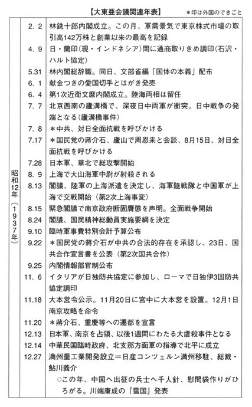

| 大東亜会議の真実 アジアの解放と独立を目指して (PHP新書) | |
| 深田祐介 | |
| PHP研究所 (2004) | |
大東亜会議の真実
――アジアの開放と独立を目指して
深田祐介
目次
第１章 昭和18年11月、大東亜会議開催さる
華やかな思い出
五十年前のいわゆる「大東亜戦争」が始まった一九四一年、昭和十六年十二月八日、作家伊藤整は、日記に次のように記している。
「感想――我々は白人の第一級者と戦う外、世界一流人の自覚に立てない宿命を持っている」
経済成長という、おおむね平和的な手段によって世界一流国に列したと自負する戦後の日本人の眼には、これは過激に映る発言であろう。
この過激な文章を書いてほぼ二年後の昭和十八年、伊藤整は、おなじ日記にこう記す。
「十一月五日 晴 北風
今日から東京で大東亜会議を開く由、突然朝刊に写真入りで出ている。満州国張景恵総理、中華民国汪精衛院長、タイ国のワンワイタヤコーン殿下、フィリピンのホセ・ペ・ラウレル大統領、ビルマのウー・バー・モウ首相、外に自由印度仮政府首班としてチャンドラ・ボースが一度に揃った。壮観である。これは大東亜建設以来初めてのことで、大東亜の意気甚だ揚る貌で、結構至極だ」
私の少年時代にとっても、昭和十八年の大東亜会議というのは、異様に華やかで、誇らしげな思い出である。会議に出席した各国代表の名前は、子ども同士の日常会話にもしばしば登場し、物珍しさも手伝って、陸海軍軍人の姓名以上に親しいものになった。子どもの会話は時代を映す鏡といえるから、大東亜会議が戦時中のおおきな事件であったことは間違いあるまい。
大東亜会議出席者のひとりであり、戦後もビルマ政界の実力者として重きをなしたウー・バー・モウは、自伝『ビルマの夜明け』で、
「一九四三年の末、アジアの独立した諸国代表が、史上初めて一堂に会する機会を持った。それは一九四三年十一月五、六の両日、東京で開かれた大東亜会議（ＴＨＥ ＡＳＳＥＭＢＬＹ ＯＦ ＧＲＥＡＴＥＲ ＥＡＳＴ‐ＡＳＩＡＴＩＣ ＮＡＴＩＯＮＳ）である。事実、これ（大東亜会議）は歴史を創造した」
とこの会議の開催を高く評価している。
独立の英雄としてインド史に名を残すことになる、自由インド仮政府首班スバス・チャンドラ・ボースは、
「大東亜会議は、これまでの幾多の国際会議と全然本質を異にする」
と会議後、昭南で、述べている。
ナポレオン没落後のウィーン会議は、メッテルニヒに支配され、一九一九年のヴェルサイユ会議は、クレマンソーとロイド・ジョージによって支配されて、いずれの場合も弱肉強食の様相を呈し、強国は弱国の犠牲による成果の分配に虎視眈眈たるものであった。会議では、強弁と恫喝が横行した。
しかし大東亜会議は、強弁も恫喝もない、「ひとつの家族パーティだった」とチャンドラ・ボースは形容する。
和やかな空気の内に「大東亜における新しき諸国家間の秩序建設の諸原則を確立した」と、ボースは述べるのである。
戦後の日本では、極東国際軍事裁判、いわゆる東京裁判に端を発する「自由主義対ファシズム」という、単純図式の太平洋戦争史観が主流を占めてきた。そこでは、大東亜会議は「傀儡政権の代表を集めた茶番劇」と片づけられてきた。
「傀儡」とは本来「あやつり人形、くぐつ」の意味で、「傀儡師」とは、江戸時代、首に人形箱を吊し、箱の人形をあやつって見せて、門付けをする芸人を意味したらしい。
従って「傀儡政権」とは「ある国の思いのままにあやつられる政権」を意味し、「茶番劇」のほうはむろん「あさはかで、見えすいた芝居」を意味する。
しかしこの会議に集まってきた、バー・モウ、チャンドラ・ボース、そしてラウレルは、「傀儡」の持つイメージからおおきく隔たる出色の人物たちであった。
南京政府の汪兆銘（字は精衛）にしても、その生涯を通じて、数々の受難劇のなか、情熱と懊悩が綾のごとく織りなして、「傀儡」などと片づけられたものではない。そして張景恵はロシアを恨むこと限りなく、これが政治家としての彼の原点であった。
つまり白人のなかにロシア人を含めるならば、この大東亜会議に出席したアジア人たちこそ、「我々は白人の第一級者と戦う外、世界一流人の自覚に立てない宿命を持っている」という一点において志をおなじゅうしていたのである。
極東国際軍事裁判を元凶とする戦後の太平洋戦争史観が決して歴史の真実を語っていないことは、この会議出席者について語るうちに自ずと明確になろう。
駆けつける参加者
昭和十八年は、年が明けて早々にガダルカナルからの撤退があり、戦局がおおきく暗転する年である。
昭和十八年三月には、有楽町の日本劇場の正面に、「撃ちてし止まむ」の百畳敷の巨大ポスターが掲げられた。鉄帽をかぶり、防暑服を着た兵士が絶叫しつつ、まさに手榴弾を投擲せんとする瞬間の拡大写真である。
東京育ちで、小学六年生になろうとしていた私は、三信ビルにあった岡崎歯科医に通い、また映画を見に日比谷界隈を往来する機会が多かったから、何回もこの巨大ポスターを眼にした。写真拡大の技術に感心しつつ、憑かれたように絶叫する兵士の表情に異常な臨場感を覚え、漠然と戦局の切迫を感じ取ったものである。
四月十八日に連合艦隊司令長官山本五十六がブイン方面視察中に搭乗機を撃墜されて戦死、五月三十日にはアッツ島守備隊玉砕が伝えられる、といったぐあいに、この年は、春から夏、夏から秋へと四季のめぐってゆくに伴い、どうやら日本が守勢に立ち始めているらしい気配が一般国民の間にも濃厚になった。
従って、この昭和十八年秋、十一月に催された大東亜会議参加者の、会議への出席もそう簡単ではなかった。
大東亜会議で、主として東條英機総理の通訳にあたることになっていた、内閣総理大臣秘書官付内閣嘱託浜本正勝の出席までの経緯がいい例である。
大東亜会議に出席した指導者の回想のなかに必ず登場するのが、日露戦争であり、日露戦争が「白色人種に対する有色人種初の勝利」に終ったことが、彼等を民族自決の行動へと駆り立てる契機になるのだが、浜本正勝は、この日露戦争勝利の年、明治三十八年、一九〇五年に生まれている。
「正勝」という名前は、広島出身の父親が「正義が勝つ」と、日露戦争勝利の陶酔醒めやらぬ気分で名づけた、という。
北海道で鰊漁を手がけたりしていた正勝の父親は、広島県人に多くの例を見るごとく、ハワイへ移民し、現地で手広く商売を手がけて成功する。
正勝はハワイ大学へ進学の後、十八歳で米国東部の名門校ハーバード大学に進学した。国際法を専攻したが、三年のときには大学院の聴講を許され、卒業論文の「ヤップ島の委任統治」はラテン語で書いたというのだから、大変な秀才だったのである。
卒業後、昭和二年に日本に帰国し、慶応の聴講生になって日本語を磨いた後、米国の自動車会社ＧＭことゼネラル・モータースに入社、開戦の年には満州地区支配人を務めていた。
「わしはアメリカにいて、しかも売り上げが日本の国家予算よりおおきいＧＭにいたから、アメリカの実力は判っている。だからこの戦争はすべきじゃないとおもっていた。しかし戦争が始まってしまってからは、アジア各地を占領したら、必ず〝軍政〟が始まる。黙っていたら、〝軍政〟はなにをやるか判ったものじゃない。わしが行って、軍政を助けたほうが日本のためになる。少なくともわしの出番があると信じて、陸軍省の軍属を志願した」
浜本正勝は陸軍省軍属に採用され、比島（フィリピン）派遣軍第一三七隊に配属になり、フィリピン軍の将校捕虜収容所長の代行をしていた。
この浜本が、東條首相の信頼を得たのは、東條が昭和十八年六月に南方軍政諸地域を訪問した際である。
「マニラ・ホテルの前で、司令部の連中と一緒に東條さんを迎えたあと、わしが仲間とホテルでビールを飲んどったら、首相秘書官の赤松貞雄大佐がやってきて、〝総理がおまえに会いたいといっておられるから、名刺をくれ〟というんだ。サラリーマンの転勤じゃあるまいし、志願して生命賭けて戦争にきた者が、名刺持って歩きはせんよね」
会う前に名刺を欲しがるというのは、神経質な〝準備魔〟だった東條の性格をよく表わしていて、面白い話ではある。
本年（一九九一年）八十六歳で、東京に健在な浜本正勝は現在なお記憶力抜群、才気煥発の人物だが、この東條の南方諸地域訪問に随行して、おおきな信頼を獲ち得た。東條が浜本にすっかり惚れこんでしまったのである。「わしは東條さんにとても大事にされていた」と浜本は語っており、これが大東亜会議における総理専属通訳への登用に繋がった。
身分も総理秘書官付内閣嘱託となった。
「東條さんは、小さなことに細かく気のつくひとでね、大東亜会議のあとだったとおもうが、東條さんの家へ夏服を着ていったら、私をひと目見るなり奥さん呼んでね、〝勝子（東條夫人勝子）、わしのオーバー持ってこい〟、東條さんがそういってね、自分のオーバーを私に貸してくれた。それで、〝浜本、それはわしの一張羅（一枚しかない晴れ着）だから、比島に持って帰るな〟、笑いながらそういうんだよ。〝閣下、私は大男で、この外套着てもサイズが合わんですから、頂戴するようなことはしませんよ。必ずお返しします〟、そう答えて、つんつるてんの袖口を見せたもんだ」
浜本は、同時にフィリピンのホセ・パシアノ・ラウレル大統領の信任も厚かった。ラウレルがエール大学大学院、浜本がハーバード大学、と米国名門大学卒業の体験が共通することも与って力があったのであろう。
大東亜会議の直前、昭和十八年十月十四日にフィリピン共和国独立宣言が行なわれ、ラウレルが大統領に就任したが、浜本は共和国政府に指名されて大統領特別補佐官に就任、ラウレル政府閣僚会議の後の昼食会にも出席を許されるほどの信任を得ていた。
「ラウレルさんは、公私の別の厳しいひとでね、イメルダと一緒にマラカニアンに住んでいたマルコスなんぞと違って、ラウレル夫人は、マラカニアン宮殿へ足を一歩も踏みいれることがなかった。土曜の午前二時頃、やっと仕事が終ると、ラウレルさんが帰ろうというんで、車でパコにあるラウレルさんの私邸に行って、夜食をご馳走になるんだ。これが粗末な家で、大学の教授のアトリエとでもいったらいいかね、奥さんは起きて待っていて、鰺の干物を焼いたのと塩辛、フィリピンにも塩辛があってね、それを出してくれて、大統領とふたりで食うんだ。そのあと私は、大統領の車、〝フィリピン１〟のナンバーをつけた車で宿舎のマニラ・ホテルに帰るんだが、大統領と間違われて射たれるかもしれんしね、これが結構恐かった。車はフォード製の防弾車なんだが、こっちは自動車屋やっていたから、最新式の米軍の小銃で狙撃されたら、こんな古い防弾車などひとたまりもないことがよくわかっている。わしは車のなかで前かがみになって、躰を低くして宿舎に帰ったよ」
「ラウレルさんの出身地は、バタンガスで、あすこは日本の千葉みたいに気の荒いところでね、義兄弟の約束に、ナイフをやり取りする習慣があるんですよ。このナイフは、バタンガス・ナイフといって、ふつうのポケット・ナイフじゃない。柄の上にも下にも刃が跳びだすおっかない凶器だ。そのバタンガス・ナイフを私はラウレルさんから貰ったんだな。当時の外務長官のクラロ・Ｍ・レクトから、〝それは生死をともにするという約束だから、大統領にお返ししたほうが賢明だよ〟と冷やかされたのを覚えている」
日本、フィリピン双方の首脳から信頼の厚い浜本は、大東亜会議の通訳として、まさに適任の人物だったのだが、浜本が日本へ戻ってくるのも容易ではなかった。
浜本の大東亜会議出席については、十月中旬に比島派遣軍参謀長和知鷹二中将宛てに命令がきていたが、浜本は陸軍の依頼で、マニラ近郊のゲリラ掃討戦に従軍しており、この命令を知らなかった。語学力のある浜本は、よく報道班員や従軍記者の相手をさせられ、彼らと掃討戦に出ることもあったのである。
掃討戦から戻ると、和知参謀長から、「わしの責任問題だ。とにかくすぐフィリピンを出てくれ」といわれた。
取るものも取りあえず夏服のまま、毎日新聞の航空部長と一緒に、九七式重爆を基礎に設計したＭＣ20、百式輸送機に乗り、ニコラス飛行場を飛び立つが、台湾に台風がきていて着陸できない。迂回してマニラに引き返して、司令部に報告に行ったが、参謀長副官が「本日、悪天候を冒して浜本を帰還せしむ、参謀長」という電報を東京宛てに打つところで、帰ってきた浜本を見て真青になった。とにかくフィリピンから出てくれ、と参謀長がほとんど懇願している、と副官はいう。
翌朝早々に出発したが、やはり台湾に着陸できず、上海で一泊することになる。一泊後、上海の飛行場へ行ってみると、前夜、便衣隊（私服ゲリラ）が飛行場を襲撃、軍用機の大半が爆破されていた。そのなかに、ＭＣ20だけが無傷で残っていた。これは、民間機だというので、便衣隊は律義に襲撃の対象から外していたのである。
上海から羽田へ直行、羽田からオートバイの先導で、総理官邸へ向った。官邸には大男の浜本のサイズに合わせたのか、だぶだぶのモーニングが用意してあり、開衿シャツからそれに着替えて、官邸地下の大食堂で開かれていた各国代表を招いての茶会に、文字どおり駆けつけたのであった。
「私が行ったとき、東條さんはちょうど汪兆銘と話しておられてね、遅刻を怒るわけにもいかん。〝遅かったな〟の一言ですんだよ」
大東亜会議の公式日程は、この昭和十八年十一月三日の明治節、午後四時から催された東條首相招待のお茶の会から始まったのだが、羽田から官邸に駆けつけて、茶会にやっと間に合った参加者がほかにも二グループある。
一番早く着いたのが、オブザーバーとして出席のチャンドラ・ボース以下の自由インド仮政府一行で、十月三十一日入京、十一月一日には、中華民国国民政府行政院院長汪兆銘、満州国総理張景恵、二日にはフィリピン共和国大統領ホセ・パシアノ・ラウレルが到着していたが、タイ代表とビルマ代表が三日ぎりぎりの到着となった。
ビルマ代表、ビルマ政府内閣総理大臣ウー・バー・モウの場合は、浜本以上に危険に満ちた旅行であった。
「東京への空の旅は破滅に近いようなものだった。飛行機はサイゴンに一夜とまったあと、翌朝台湾へと飛び立った。まもなく、われわれは飛行機が困難な上昇をしていることに気づいた。同時に強い刺激性の臭いから塩素が機内にあふれていることを思い起こさせた。われわれはかすかにもまれはじめ、まもなく事故だと考えた。飛行機は高い樹木のさきも判別できず、その周辺を飛ばねばならなかった。しかしパイロットは、なんとか上昇を保ち、明らかに安全な着陸地点を探していた。そうこうしていると、つぎに飛行機はわらぶき屋根の小屋の群れの付近で高度を失いはじめた。そしていきなり下に突っ込み、翼の片方はそばの木に荒々しくぶつかり、それが歯止めにもなって、機体全体はブランコのように揺れ、小屋の真上に墜落、その前部は完全にメチャメチャになった。
しかし機体は柔軟な小屋がクッションの役割を果たし、墜落でこわれただけでなく、実際はゆりかごのような形で残された。最も奇跡的だったのは炎につつまれなかったことだ。小屋の一部は完全にペシャンコにはなったが、われわれの生命を救ってくれた。
私は自分が大量のとがった金属に囲まれ、そのうち、とくにギザギザした破片のひとつが、私の喉元につきつけられているのを発見した。私たちに同行した日本大使館の島津（久大、一等書記官兼総領事）は、機内を横切り、後部の荷物の山の上に投げ出されていた。われわれの誰もが、恐怖の握手を受け、シュエ・ボウは二度と飛行機に乗らないと誓ったりした。ツーラン近くで二日ほど待機したあと、われわれは台湾へ飛び、ついで会議に間に合うよう大急ぎで日本へ向かった。無鉄砲な飛行だったが、われわれはやりとげたのだ」（『ビルマの夜明け』）
首相官邸に駆けつけたバー・モウに対し、東條は「特徴のある足どりで私のところにやって来て、飛行機墜落からの奇跡的脱出を祝い、私の帰途の旅の飛行機とパイロットの安全を保証した」（同右）。
もうひとりの遅参組、タイ代表のワンワイタヤコーン殿下のほうは、表向き「急病」のため出発が遅れたことになっており、それが遅参の理由になっているが、真偽のほどは甚だ怪しい。
ワンワイタヤコーン殿下は急病で、丸二日間まったく食事を摂らないままに、四十度近い発熱を押してバンコクを飛び立ってきたというのだが、それにしては、写真に現われるワンワイ殿下の顔容は福々しく血色もよさそうで、病身とは俄に信じ難い。
日本側はむろん真に受けて、翌四日午前に予定された各代表との懇談の日程から、タイ国代表を外し、もっぱら静養に専念するように要望した。のみならず東條は、各代表の帰国の順序をイロハ順によらず、他の代表の了解を得て、タイ国代表を一番先に帰られるように処置した。
ワンワイタヤコーン殿下は、福々しい容貌と名前の響きの面白さから、当時の日本の大衆には、ずいぶん親愛感を持たれた。今日、自民党の派閥の某領袖に「ワラワン殿下」などという仇名を奉っているのもその名残だろう。
小学生の私も「ワイワイ殿下」などと友人たちとふざけながら、「それにしても少国民新聞や少年雑誌で有名なタイのピブン首相は、なぜこないのだろう」と、少なからず疑問におもったものである。
ピブン自身は、戦局の推移に不安を覚え、連合国側の思惑をおもんぱかって、この会議への出席を避けたのである。自分の代理として、タイの名君、チュラロンコン大王の子孫にあたるワンワイ殿下を派遣したのであった。
しかもぎりぎりに乗りこんで、早目に引き揚げ、日本との関係の深化を避けようとしたのか、「急病を押しての出席」という形を取った。肝心のピブンも病気ということになっており、問題が起こると、すぐ入院してしまう日本の政界ではないけれども、当時のタイ政府は、政治性の「病人」だらけ、ということになる。
しかしこの茶会は、結果として好評であった。
ビルマのバー・モウは、「みなと過した」この短時間の夜について、感動を隠さない。
茶会はきわめて感動的な空気をつくりだしていて、「広いアジアそのものを一つのものとしてとらえる思いに満たされていた」「われわれは、へだてられた人間としてではなく、すべての国民を包含した単一の歴史的家族として寄り集まっていた。こんなことはかつてなかったことだ」
と、『ビルマの夜明け』に記している。
自由インド仮政府のチャンドラ・ボースも、
「私は東條首相はじめタイ国のワンワイタヤコーン殿下、ビルマ国のバー・モウ首相とは旧知の間柄だが、中国代表の汪院長、満州国の張総理、フィリピン国代表ラウレル大統領とは、はじめての会見だった。しかし茶会はまったく家庭的な雰囲気で行われ、これら三代表とも直ちに打ちとけることができた。しかもこの茶会が五日の本会議を控えて行われ、その友好的な空気がそのまま本会議にも反映されたことは、極めて有意義であった」（「朝日新聞」昭和十八年十一月五日）
とやはり評価している。
各国代表はホテルに泊らず
大東亜会議の準備一切は、大東亜省内に設置された菊号委員会が担当、二週間前から帝国ホテルに二十数室を押さえ、泊りこみで準備を続けてきた。
「私はあの会議で、参加者の泊る所を探せ、という命令を受けましてね、困ったですよ。一流のホテルといえば、東京には帝国ホテル一軒しかない。結局、個人の家を借りました。どこにどういう家があるのか、そのリストを作るのが大変でしたね。都心に近い、やっぱり環状線の中というね。持主の内諾を得て、そこを徴用みたいにして、一部改装しなくちゃいけない。日本間をちょっと洋間にするとか、食堂の壁紙を貼り替えるとかね。結局、承諾されたんですが、案外そういう些細なことが大変だった」（当時菊号委員会事務局営繕部総務班、戦後ドミニカ大使等を歴任した小澤武夫談）
中華民国代表の汪兆銘は、芝区高輪の岩崎小彌太邸、タイ国代表のワンワイ殿下は、目黒区駒場の前田利建侯爵邸、満州国代表の張景恵総理は、芝白金台の服部時計店社長服部玄三邸、フィリピン代表のラウレル大統領は、芝区白金今里の日本商工会議所会頭藤山愛一郎邸、ビルマのバー・モウ総理は、麻布区広尾の衆議院議員で終戦時の内閣閣僚桜井兵五郎邸、インドのチャンドラ・ボースは、芝区三田綱町の日銀副総裁渋沢敬三邸、というぐあいにそれぞれ宿舎が準備された。
伊藤整は、十一月八日の日記で、このことについて感想を述べている。
「読売の波長欄に面白いことが出ていた。それは今度来た大東亜各国代表はホテルに泊らず、富豪連の大邸宅に分宿しているということだ。全く今頃宿屋やホテルに泊めて海外の賓客に配給の野菜などを食わせては、たまらない。これは誰の思いつきか、なかなか機宜を得ている。各国代表の気分がよいのは、この特別宿舎の待遇によること多い、と新聞も書いている」
しかしチャンドラ・ボースに随行したマラヤ司政長官千田牟婁太郎は、
「一流の財閥の家はね、もう疎開してしまって、家具もなにもない、がらんどうの空き家になっていたんだよ。外務省も、疎開していない、家具つきの家を探すのに苦労したらしい」
昭南に帰国してから、そう語ったそうである。
各邸には、帝国ホテルから料理人、ボーイ、客室係が派遣、配置された。
〝準備魔〟と名づけていいほど、何事についても神経質に事前のチェックを行なう性癖の東條は、準備委員会顧問格の犬丸徹三帝国ホテル支配人を伴って、会議前に宿舎に充てられる各邸宅を視察した。「南方からの賓客」が泊った場合の暖房を心配したり、ボースの宿舎に予定された渋沢邸の応接間が薄暗かったので、「もっと照明を明るくするように」などと、細かく事務局営繕部員に指示している。
「車はなんとか都合できた。日本の中のいいやつを都合してね。当時いいやつといえば、ビュイックなどアメリカの車です」（小澤武夫談）
昭和十八年の時点で、円タクを拾うことは辛うじて可能だったが、木炭車がかなり目立つようになり、「いい車」が姿を消しつつあった。
大東亜の自立を宣言しようという会議なのに、賓客をもてなす車はアメリカ製に頼らざるを得なかったところに、軍需産業に偏った工業国家、日本の悲哀があった。
第２章 東條英機首相の代表演説
ナポレオン三世寄贈のワイン
翌十一月四日午前十一時過ぎ、各代表は、この菊号委員会が調達したビュイックのオープンカーなど米国車に分乗、沿道にならぶ都民、動員された番町、永田町小学校などの児童が日の丸の小旗を打ち振るなかを、坂下門から皇居に参内した。
松平慶民宮内省式部長官の先導で、宮中鳳凰の間に進み、昭和天皇の出御を待って、各代表はイロハ順に来訪の挨拶を述べた。昭和天皇は、各代表にねぎらいの言葉をかけ、各代表は、自分の随員を天皇に紹介した。
しかし、前夜一晩じゅう宿舎の帝国ホテルで待機させられた挙句、当日、宮中参内を見合わすよう断わられた人物もいた。インド国民軍最高司令部参謀長で、チャンドラ・ボースの首席随行員、無任所閣僚中佐であったＪ・Ｋ・ボンスレーである。
ボンスレーは、英国のサンダース士官学校を卒業して英印軍将校に任官、シンガポール陥落後は、インド国民軍の要として活躍してきた人物である。
のちにラングーンに帰ったボンスレーは、日本軍人としてインド国民軍編成に草創期から携った、盟友の国一乗陸軍中尉に憤懣をぶちまけている。
「僕はこの度の戦争の俘虜であるから、拝謁させるわけにはいかぬ、ということだった。しかし見方を変えると、これだけ人を食った話はないよ。日本は自由インド仮政府を承認した。僕はその政府の閣僚であり、その軍隊の参謀長でもある。そのうえ今回は首席随員なのだ」
「今までも僕はしばしば経験してきたが、日本は、一方では（インド独立のために）莫大な国費を費やしているくせに、その反面、じつにつまらぬことで人をガッカリさせる。おそらく中国、フィリピン、ビルマ、いたるところでこんなことがあるのじゃないかな。そのため、百年の計が一日にしてこわれる」
各代表は、宮中千種の間において午餐の陪席の栄に浴し、午餐後、牡丹の間で御茶がふるまわれ、午後二時五分、宮中を退出する。
「ボースの話では、午餐のときに出たワインがすばらしかった、ということでした。ボースが、隣の宮内官に、ワインの素姓について訊くと、十五代将軍徳川慶喜に対してナポレオン三世が贈ったもので、それが宮中のストックとして残っていて、非常なステート・ファンクションの時に使われる慣行になっている。今日のワインは、そのナポレオン三世寄贈の品だ、と説明したそうです。確かに大東亜会議は、日本の国威発揚のピークでしたからね」（国一乗談）
宮中退出後、各代表は、病身のワンワイ殿下を除き、上野の都美術館で開催中の文展を鑑賞した。五日の朝刊各紙は、伊原宇三郎描く「バー・モウビルマ国代表」の肖像画の前で、「なかなかよくできていますね」と微笑む、バー・モウの写真を掲載している。
東條の例によっての気配りで、各代表は、この文展出品作のなかから気に入った絵画を一点選び、それが日本政府から、お土産として贈られることになっていた。
昭和天皇への拝謁を始め、翌日の大東亜会議本番における発言も、すべてイロハ順により進行したが、アルファベット順ならともかくイロハ順の強制は、このバー・モウに不満を抱かせていた。
「国名によるイロハ順となれば、ビルマが独立直後のフィリピンの後となる。ビルマ国としても、自分としても面白くないので、日本が承認を与えた順序にすることはできないだろうか」
ビルマ国と自分自身の威信にこだわっていたバー・モウは、会議前、訪問した沢田廉三駐ビルマ大使に、そう訴えている。
日本は、昭和十八年八月にバー・モウを首班とするビルマ国を承認、会議直前の十月、ホセ・パシアノ・ラウレルを大統領とするフィリピン共和国を承認したのであった。
東條議長、開会を宣言
東條英機の特徴的性格は、事務官僚的細心さであろう。
陸軍大学校を受験するに際して陸軍中尉の東條は、受験準備のための年間総学習時間を学課ごとに計算、それから一日あたりの学習時間を割り出して、毎日忠実に消化し方眼紙に記録していった、といわれる。
中隊長時代には新兵が入ってくる前に、全員の顔写真、経歴を覚えこんでしまったというし、なかでも「東條メモ」の一件は有名であった。
秘書官だった赤松貞雄大佐によると、東條は部下、同僚の喋ったことをことごとく、丹念に書き止めてメモを作った。それもただのメモではなく、あとで日付順、事項順、重要項目別に三つの手帳に自身で書き写し、半年ごとに更新していた、という。
この極端ともいえる事務官僚的な細心さは関東軍参謀長時代には、「細かい心がけ」の大事さ、を説く、という形で実行される。満州国内の視察を繰り返していた時期で、機密書類のファイルの傍らに防火用水が用意されているという「細かい心がけ」を見て、上機嫌になった、とも伝えられている。
戦時中も旅先で、毎朝散歩に出ては、住宅街のごみ箱を覗いて歩くという「細かい心がけ」実行の話は有名であった。残飯に魚の骨がある、国民の食生活はまだまだわるくない、と安心するというのである。この話は事実で、戦時中の昭和十七年、私自身も日光でその民情視察の現場を目撃したことがある。その度にまたメモを書きつけていたに相違ない。
大東亜会議当日の昭和十八年十一月五日にも、この病的なほど几帳面な性格が出て、東條は開催時刻の小一時間前に早くも会場の国会議事堂に到着、開会に先立って、各代表の控室を訪れ、挨拶を交わした。
むろんイロハ順で、中国代表の汪兆銘から始まって、一代表五分ずつ、随行員を含めて三十数回の握手をこなした。廊下ですれ違った人物を満州国外交部大臣李紹庚、特命全権大臣王允卿と認めるや、追いかけてゆき、「やあ、お早う」と握手をもとめた。
さらに、今回は新たな叙勲はなかったので、お上から御狩場の鴨など賜ったら、さぞ代表たちも喜ぶだろうと考え、東條は坊城俊良宮内省儀式課長に相談、昭和天皇より早速「御嘉納（許可）」があり、翌六日に各代表に対して鴨が下されることになった。
午前十時、開場の合図があり、左手にシルクハットをかかえたワンワイ殿下を先頭に、モーニングに大勲位菊花大綬略章を佩用した汪中華民国代表が書類入りの封筒を下げて入場、神田一ツ橋の共立女子学園生徒による手製の黄菊の花章を協和会服の右胸下につけた張満州国代表、モーニングの襟に赤い勲一等略章をつけ、グレーの手袋とシルクハットを手にしたフィリピンのラウレル代表、ビルマの民族衣裳のロンジーを脱いで、黒の長靴に濃緑のネクタイが目立つ軍装に身を固めたビルマのバー・モウ代表、そして拍車をつけた茶褐色の長靴に帯剣、やはり軍服姿の自由インド仮政府首班のボース代表が入場した。
会議直前、会議事務局レベルで、ちょっとしたトラブルがあった。
浜本正勝は、ラウレル代表とともに、芝区白金今里の藤山愛一郎邸に滞在していた。
「この日本帰国のときだったか、その前、博多に一泊したときだったか、とにかくラウレルさんと一緒に風呂に入って、ジャパニーズ・スタイルですよ、といって、ラウレルさんの背中を流したんだ。ラウレルさんの腕に入れ墨があったのを覚えている。奥さんの名前だったんじゃないかな」
藤山邸からラウレルとともに到着した浜本は、会議では副通訳として専ら東條総理の通訳にあたるものとおもいこんでいたのだが、会場入場前に突然、大東亜省次官の山本熊一から声をかけられた。山本は菊号委員会副委員長でもある。
「今日は、全部きみがやることになっているからね。通訳席のほうに行ってくれ」
会議の正通訳は、ケンブリッジ大学卒業で、今回はインド班接伴部にまわっている柿坪正義が行なう予定だったが、柿坪が副にまわり、突然、浜本が正通訳に浮上することになったのである。
浜本は、突然の指示に驚いて、入場しようとする東條のほうを見たが、東條は万事、承知しているふうで、頷いてみせ、
「決まったようだから、頼むよ」
といって、場内、正面の席に向った。
じつは、この浜本が正通訳に浮上した裏には、大東亜省と独立したばかりのフィリピンとの間の確執が絡んでいた。
大東亜省は、各国首席代表に対し、本会議で演説する草稿をあらかじめ提出して貰いたい旨、要請していた。
この要請に対し、ふたりの代表、フィリピンのラウレル大統領と陪席者のボース首班が、草案提出を拒否した。
演説において草稿は用いない、というのが、共通した拒絶の理由であったが、大東亜省側は、正確な日本語に翻訳するため、あらかじめ準備期間が要ると説明し、再度提出を要請した。
ラウレルは、大東亜省側の強い要請にも妥協しなかった。
「たとえ草稿があったとしても、提出する意思はない。事前の草稿提出は、日本側の検閲を受けることを承認するに等しいからである」
随行したクラロ・Ｍ・レクト外務長官は日本側の要求を断わりきれるかと迷ったが、やはり随行のベニグノ・Ｓ・アキノ（アキノ現フィリピン大統領の義父）国会議長は、
「これは日本軍がフィリピンでとっているのとおなじ高飛車な態度である。一国の大統領の演説草稿を検閲されては、国家の沽券にかかわる。日本側が固執するなら、即刻フィリピン代表団は引き揚げるべし」
日頃の鬱憤が噴き出た感じで、強硬論を吐いた。
結局、予定どおり草稿なしの演説を行なう、ただし日本側が正確な日本語への通訳を望むのなら、日本側が最も信頼する通訳、浜本正勝を起用するがよい、とフィリピン側が提案した。浜本はラウレル始めフィリピン側にも信頼が厚かったので、双方ともこれで事態を収拾することにしたのである（チャンドラ・ボースも結果的に草稿なしの演説を行なった）。
午前十時五分、会議場の扉が閉まった。
会議場には、席がコの字型に配置され、正面に東條英機、その左に汪兆銘、張景恵、バー・モウ、東條の右にワンワイタヤコーン、ホセ・ラウレル、チャンドラ・ボースが居並んだ。
東條の後方に、外務大臣重光葵、大東亜大臣青木一男、海軍大臣嶋田繁太郎が控え、各国代表の後方には、ボースとともに宮中に参内できなかったインド国民軍参謀長ボンスレーや、演説草稿の事前提出について調整役を果した、フィリピン外務長官クラロ・レクトなど随員たちが控えている。
各代表のデスクには、紫色のカット・グラスの灰皿、漆の煙草入れのほか、日本橋三越前の大澤国旗店が製作した、二枚の厚いガラス板に挟まれた小型の各国国旗が置かれていた。
「昭南に帰ってきたチャンドラ・ボースさんがこの国旗をお土産に私に下すった。縦三寸、横五寸くらい、西陣織りの目も覚めるようなインドの三色旗でしたね」（国一乗談）
机の先端には、浜本ら通訳の声の流れてくる受話器、拡声器の先端が覗いており、これらは隣の録音室に繋がっていた。
まず、日本帝国代表東條英機首相が開会の辞を述べ、すぐに議長推薦に移った。
ワンワイタヤコーン・タイ代表から東條日本代表を議長に推す旨、発言があり、ラウレルがこれを支持、満場一致の拍手をもって、東條英機が議長に就任、開会を宣言した。午前十時二十分、参加各国、イロハ順による代表演説に入った。
イロハ順といえば、日本が筆頭に演説することになるわけで、イロハ順を採用した最大の理由は、このあたりにあったのではないか、とおもわれる。ＡＢＣ順にすれば、日本をＮＩＰＰＯＮにしようが、ＪＡＰＡＮにしようが、ビルマが筆頭にきて、次に中国が入ってしまう。おなじ日本語のアイウエオ順にしても、ニッポンにこだわる限り、中国やタイが先になってしまうのだ。
イロハ順というのは、東條の顔を立て、日本が会議の主導権を握るための、事務局による苦肉の策だったのではないか。
東條は、
「大東亜戦争と大東亜新秩序建設の方針に関しまして隔意なき協議を遂ぐる為、今般大東亜会議開催方を提議致しましたる処、幸い関係各国の衷心よりの御賛同を得まして、茲に大東亜各国代表として各閣下の御参集を見ましたることは、主催国と致しまして最も欣幸とし、又深く感謝の意を表する所であります」
戦時中の少年たちが、たえず「声色」をやって興じた、「東條節」が鳴り響いて、大東亜会議の幕は、開いたのである。
東條の代表演説は、二点に総括できる。
第一点は、日本の開戦経緯の説明であり、第二点は「大東亜の建設に関する基本的見解」である。
第一点については、「英帝国は過去数世紀に亙り侵略と征服とに依って全地球上に広大なる領土を獲得し、而して其の優越的地位を飽く迄も維持せんとして」きた。他方米国は「概ね米西戦争を契機」とし、「太平洋及び亜細亜に爪牙を伸ばすに至った」「洵に米英両国の懐く世界制覇の野望こそは、人類の災厄、世界の禍根と謂うべきであります」と東條は述べる。
米英両国が「東亜の隷属化」を維持するためには、「東亜に於て何れかの国が強国として勃興致しますることも彼等にとりその最も不利とする所」と考えた。
そこで「其の本質に於て戦争と異ならざる所の経済断交の手段に愬え、他面東亜の周辺に於て武備を増強し、以て我に屈従を強いんと試み」た。
「帝国は遂に自存自衛の為、決然起って東亜に対する挑戦に応ずるの已むなきに至ったのである」
第二点については、大東亜に於ける共存共栄の秩序は「自己の繁栄の為には、不正、欺瞞、搾取をも敢て辞せざる米英本位の旧秩序とは根本的に異なるもの」である。
「大東亜各国は正に其の自主独立をば尊重しつつ、全体として親和の関係を確立すべきもの」であって、「相手方を単に手段として利用する所には、親和の関係を見出すことは出来ない」「親和の関係は、相手方の自主独立を尊重し、他の繁栄に依って自らも繁栄し、自他共に其の本来の面目を発揮する所にのみ生じ得ると信ずる」。
「東條節」は、「今や」と「であります」に特色があったが、最後に東條は、その得意の「今や」を使い、「今や大東亜諸国家諸民族の結集は成り、万邦共栄の理想に向って大東亜新建設の巨歩は堂々と発足致したのであります」と「東條節」を謳いあげる。
準備魔の東條は、講演草稿には必ず眼を通し、自分でルビを振ったそうだから、この演説も、菊号委員会が準備し、東條が手を入れたものなのだろうが、各国代表は東條演説が頻発した「相手方の自主独立の尊重」の言葉を聴きとって、「この発言を逆手に取って日本の覇権志向に抵抗してやろう」と考えたに相違ない。「自主独立」の言葉は、二日間にわたる各国代表の演説の度に、こだまのように繰り返されることになる。
明確な戦争目的が存在しない
奇怪といっていいが、開戦後すでに二年を経過しながら、日本には明確な戦争目的が存在しなかった。
昭和十五年に成立した第二次近衛内閣は、「南進」の方向を明確に打ちだすと同時に、従来唱えられてきた「東亜新秩序の建設」を「大東亜新秩序の建設」といいかえた。「東亜」とは、「日満支（日本、満州、支那）」を根幹とする発想だが、「大東亜」はこの「日満支」に「南方」を加えたもの、とされた。
しかし「南方」を加えた「大東亜新秩序の建設」といわれたところで、それが具体的になにを意味するのか、国民には一向に判然としない。
これを「大東亜共栄圏の確立」という、耳に快い戦時スローガンに置きかえたのが、松岡洋右である。
松岡洋右は、雄弁家として鳴らしたが、この種のキャッチフレーズ作りの才能に恵まれていて、以前には「満蒙はわが国の生命線」と叫んで、満蒙開拓の世論形成にひと役買った実績があった。
「大東亜共栄圏」は、西欧の植民勢力をアジアから駆逐、アジアを解放し、「共に栄えてゆこう」という点、甚だわかりやすくて、急速に国民大衆の間に浸透していった。
米英を敵とする戦争も、この戦時スローガンの影響を受けたかのごとく「大東亜戦争」と正式呼称されたのだが、しかし日本帝国政府の指導者層にとっては、戦時スローガンの「大東亜共栄圏の確立」は、意外にも戦争目的とは直接結びついていなかった。
戦争目的は宣戦詔書に「今ヤ不幸ニシテ米英両国ト釁端ヲ開クニ至ル洵ニ已ムヲ得サルモノアリ豈朕カ志ナラムヤ」とあるとおり、あくまで「自存自衛のため」だったのである。
大東亜会議における東條の演説の前半がはっきり物語っているが、日本政府当事者の認識としては、陸海軍の冒険主義的傾向が戦争の一因をなしたにもかかわらず、いわゆるＡＢＣＤ包囲陣の政治的、経済的圧力に一方的に追いこまれて、「自存自衛」のために開戦せざるを得なかったのが、「今次戦争」だったのである。
特に昭和十六年十一月に、アメリカ国務長官コーデル・ハルが日本側に手交した「ハル・ノート」は、日本側の「自存自衛」のための開戦という認識を高めるのにおおいに影響した。
戦後、極東国際軍事裁判（東京裁判）で、キーナン検事からハル・ノートの電文を示され、「見たことがあるか」と質問された東條は、
「これはもう一生涯忘れません」
と大声で怒鳴ったというが、「満州国と汪兆銘政府の否認、中国や仏印からの即時全面的無条件撤兵、三国同盟の廃棄」を要求したハル・ノートは、近代外交史上でも、異例の挑発的外交文書といえよう。
もし戦前の米国が、中南米政府の否認、フィリピンからの全面的無条件撤兵、米英関係の白紙還元を要求されたとするならば、米国内世論の白熱化を招くのは必至であろう。その意味でハル・ノートは、限りなく挑発的であったといえよう。
開戦当時の外相東郷茂徳の回想によれば、ハル・ノートが要求する日本の地位は「戦後の現在の地位と大差なきもの」（『時代の一面』）であった。ハル・ノートを受け取った東郷は「眼がくらむばかりの失望」に落ちこみ、陸軍統帥部を説得する情熱を完全に喪失した、と伝えられる。ハル・ノートこそが、分裂、逡巡する日本の国論を開戦に統一し、踏み切らせる原因をつくったことは否定できまい。
「あれは形はＵＬＴＩＭＡＴＵＭ、最後通牒ということになっているが、内容はＰＲＯＣＬＡＭＡＴＩＯＮ ＯＦ ＷＡＲ、宣戦布告そのものですよ」（浜本正勝談）
この過激きわまりない「ハル・ノート」はじつはその内容についてまったく米国議会に報告されず、フランクリン・ルーズベルトひとりの確認のみで、日本に突きつけられた。
戦後ハミルトン・フィッシュ議員により、
「仮りに日本が満州を放棄して、資源の豊かな同地を長らく羨望していたソ連に明け渡していたなら、それは日本にとって国家的な自殺行為となっただろう。しかしこれこそが共産主義擁護者Ｈ・Ｄ・ホワイト（ハル・ノートの原案起草者）の欲していたところであった」
と指摘されるに至る（森史朗『運命の夜明け』による）。
日本の最後通牒が遅れ、ハワイ攻撃が奇襲となり、国際法違反として、戦後非難を浴びることになるのだが、時の外相東郷茂徳と外務省側には、一九一二年（明治四十五年）一月、オランダのハーグで催された国際条約の会議において、ポーター米国代表が「開戦通告の規程は、自衛戦争の場合は、適用されない」と宣言した事実が念頭にあった。そしてハル・ノートを米国側の最後通告と見做していた東郷及び外務省側としては、これは自衛戦争の開始以外の何物でもなかった（同右『運命の夜明け』）。
事実手交が遅れたとされる日本側の最後通牒はきわめて簡単なもので、要するに「日米交渉の打ち切り」の通告であって、宣戦布告や最後通牒の匂いさえうかがえず、議論の対象にさえなり得ない代物なのだ。こんな文書の手交をめぐって、いまだに果てしなく議論が反復されているのはまことにナンセンスとしかいいようがない。
従って真の宣戦布告は宣戦の詔勅を待たねばならなかったのだ。
こうして開戦の詔勅以来、日本の戦争目的は「洵ニ已ムヲ得サルモノアリ」の「自存自衛」の域に止まっており、積極的理念を欠いていた。「自存自衛」は、戦争の「動機」ではあり得ても、「目的」たり得ない。
この戦争に欠けている戦争目的を明確にし、「公明正大な」理念を置こうとしたのが、駐中華民国大使重光葵である。
「アジア解放」の理念を謳う
重光は、昭和十七年初頭、南京に中華民国大使として赴任するや、まず日中関係を改善すべく「対支新政策」を提唱、積極的に汪兆銘政府と話し合う一方、陸軍および政府に働きかけた。
重光の「新政策」の骨子は、日本の権益保護ばかりを謳って汪兆銘を絶望的な立場に追いこんだ「日華基本条約」を廃し、日本、中国間に完全な平等関係を樹立、日本は内政干渉を行なわず、中国の自主的立て直しを援助する、という点にある。
重光の努力の結果、租界における中国の治外法権の撤廃や、全面和平の後、日本軍隊の撤退を約束する日華新協定、日華同盟条約が次々と結ばれるに至り、ようやく汪兆銘の面子も立つことになる。
すでに日本軍は膨大な南方資源を手中におさめ、中国における各種権益に固執する必要はなくなっていた。それにもかかわらず、中国戦線は泥沼的状況におちいり、決定的勝利の見通しが立たない。従って六十万にのぼる膨大な支那派遣軍を南方に転用できない、という陸軍の焦りが募っていた。陸軍としても、汪兆銘政権の強化によって、重慶との和平の可能性が開ければ、それに越したことはなかったのである。
重光は、一応の成功を見たこの「対支新政策」を、大東亜地域に拡大し、米英の大西洋憲章に対抗して日本の戦争目的を世界に向けて宣明する、という遠大な構想を抱いた。重光はこの構想に基づき、昭和十八年四月、東條に意見書を提出した。
これより先、開戦前の一九四一年八月、米国大統領ルーズヴェルトと英国首相チャーチルは大西洋憲章に署名しているが、この大西洋憲章は、第三項において民族自決の原則を謳っている。しかしチャーチルは、臆面もなくこの民族自決の原則はイギリス、フランスの植民地に対しては適用されるものではない、という態度を取っていた。
チャーチルは「大英帝国の問題については手を触れるな」との立場を貫き、ルーズヴェルトもこれを尊重した。
重光は、この大西洋憲章のいわば盲点を衝いて、「アジア解放」の理念を謳いあげようとしたのである。
東條は重光構想に対して「中央において自分はあらゆる強力なる支持をなすべし」として、大東亜地域に対する新政策実行のため中央に戻って推進して欲しい、と重光に外務大臣就任を要請する。
重光はこの要請を受けて、四月末、駐華大使から、谷正之と交代して外相に就任、これまで「自存自衛」と認識されてきた戦争目的に、「アジア解放」という理念を導入した。
「大戦争を闘う日本には、戦う目的について堂々たる主張がなければならぬ。自存自衛のために戦うというのは、戦う気分の問題で、主張の問題ではない」（『重光葵著作集・１昭和の動乱』）
「日本の戦争目的は、東亜の解放、アジアの復興であって、東亜民族が植民地的地位を脱して、各国平等の地位に立つことが、世界平和の基礎であり、その実現が即ち、戦争目的であり、この目的を達成することをもって日本は完全に満足する」（同右）
重光の本音は、日本の敗戦を予想し、日本が戦後のアジアに生きるためには、アジアの解放と独立という投資を行なっておかねばならない、という点にあった。アジア諸国において、解放と独立が達成されるならば、たとえ日本が敗戦の憂き目に遭おうとも、アジア諸国は暗黙のうちに、日本の戦争の歴史的意味とアジアにおける日本の存在理由とをみとめてくれるであろう、と考えたのである。
一方、東條のほうも、この重光の提言に共感を抱いたのは事実である。しかし陸相兼務の総理として当然ではあるが、アジア諸国の独立と交換に、アジア各国から物的人的協力を取りつけようとした。軍人の本分として、究極の目的は対米英戦の勝利にあり、そのため、東條としては「アジア総力戦」というかたちに持ってゆきたかったのである。
ともあれ、昭和十八年のこの年、東條は果敢と形容していいほどの意志と行動力を示して、盛んな共栄圏外交を繰り拡げる。
「（大東亜会議開催に至る）東條首相の手際は実に見事なものであった。連絡会議等に於いて記者（重光）の意見を有力に支持して、之を実行したのは東條其人であった」（『重光葵手記』）
と重光も感嘆している。
しかし賀屋興宣蔵相、青木一男大東亜相は終始無理解で、「反対的態度、海軍は大臣、局長ともに了解せず、横槍を入れるくらいであった」（同右）という。
昭和十八年三月、東條は南京を訪問し汪兆銘と会談、東京に帰って、バー・モウにビルマ独立承認を内示する。
四月には満州国に張景恵を訪ね、翌五月、マニラに飛んで独立準備状況を視察し、ラウレルに十月のフィリピン独立を示唆する。
五月三十一日には、大本営連絡会議と御前会議で、大東亜新政策を確立する「大東亜政略指導大綱」を決定に持ちこみ、六月には、来日したチャンドラ・ボースと会談、インド独立闘争支援を確約した。
七月には、タイを訪問、マレー四州と当時ビルマ領になっていた旧タイ領、ケントン、モンパン二州の失地回復を手土産に、タイのピブン政権と日本とのきずなを固めようとしている。
その足で七月五日、昭南へ飛んでバー・モウと会談、タイ国へのケントン、モンパン二州の割譲を了承させるとともに、独立準備について報告を受けた。そして、インド独立連盟大会で会長に就任したボースと再び会見、昭南で組織されたインド国民軍を閲兵した。
さらに、ビルマとフィリピンの独立承認を知って、これまた独立気運の昂まりつつあるインドネシアの民心を抑えるべく、第十六軍の要請に応えてジャワを訪問、スカルノと会見している。
「彼（東條）の新政策に対する理解は、軍の首脳部及び軍人政治家として現われた人々の他の何人に比較しても、最も深いものであって、彼の少くとも戦争目的を公明正大な立派なところに置こう、と努力したことは、大東亜会議その他の場合における彼の言動に見て、明らかである」（『昭和の動乱』）と重光が東條を評価するのは、当然といってよい。
こうした一連の大東亜外交の結実が、そして大東亜政略の総仕上げが昭和十八年十一月の大東亜会議なのであった。
従って、大東亜会議は遅まきながら日本の戦争目的を内外に声明する最初の機会だったのである。会議の発案は重光、実行者は東條といえるのだが、見落としてならないのは、彼らに与えた、昭和天皇の影響力である。重光も、
「東條首相が、何処まで徹底して新政策の意味を体得していたかは疑問ではあるが、彼が新政策の実行を指導したのは、主としてこれが天皇の意思に副うものと思ったからである」（同右）
と述べている。事実、東條は、昭和天皇の意向をきわめて敏感に反映した。
東條が陸軍大学校の教官であったとき、学生として初めて東條に接し、以後、陸軍次官と報道部長、陸相と軍務課長、首相と軍務局長といった、きわめて密接な関係のうちに東條と戦時を過した佐藤賢了は、こう述べている。
「若い頃からそうであったが、とりわけ陸相、首相になってからの（東條の）施政の根本理念は、
『お上の御納得を仰ぐこと』
であった」
「だから上奏する場合まず御納得を仰ぎ得るか否かを考える。ついで上奏したとき、『いけない』と仰せられなくとも、御気色がくもれば引き退って考えなおすのであった」「御納得を仰ぐには正式に上奏すべきことでなくても、よく内奏又は中間報告を申し上げた。それは過度と思われるほどで、私達は『東條さんの内奏癖』とかげ口をきいた。上奏案は勿論その内奏案にも詳しい説明ばかりでなく、御下問を予想してその答弁まで準備しなければならず、それが多くは軍務局の仕事なので、局長の私以下悲鳴をあげた。
陛下は記憶力がお強い上に終始タカミクラ（高御座。天皇の玉座の意だが、この場合は立憲君主制下の天皇の立場乃至は視点の意味か）を変らせられないのだから、過去のことをひき出して鋭い御下問があり、外の大臣では時にお答に窮することもあったらしいが、東條さんは右のように周到に準備して御前に出たから、そんなことはなく、したがって戦局の悪化するまでは御信任がきわめて厚かったと承った」（佐藤賢了『東條英機と太平洋戦争』）
そして、その昭和天皇は、中国との関係改善に強い関心を持っていた。
東條首相が日中関係の大乗的調整方針を天皇に報告したとき、天皇は大変に喜び、そして次のような話を東條にしたという。
ある中国人が天皇に拝謁したさい、卓上の煙草入れをさして、
「西洋人が中国へくると煙草入れの蓋には手をかけないが、いつのまにか、なかの煙草はなくなっている。日本人がくると蓋をあけろ、あけろと大きく叫ぶが、なかの煙草はさっぱりへらない。中国人はなかの煙草を取られるよりも、蓋をあけさせられることがいやである。つまり中国人は面子を重んずる気持が非常に強いからである」
との主旨を語って、従来日本人が中国人の面子を重んずる性格を無視して、これを害したことが少なくなかった過去の過失をかたく戒めた（佐藤賢了『大東亜戦争回顧録』）。
天皇は東條を鞭撻し、新政策実現の監視役として弟宮の三笠宮を駐支派遣軍司令部に転任する許可を与えた。そして大東亜会議の開催にもおおいに関心を示し、東條の共栄圏外交を支持したのである。
天皇の共栄圏外交への関心と支持は、のちに紹介するインドネシア大統領スカルノの回想からも明らかであろう。
この昭和十八年秋の時点、東條は戦争指導においては、成算のない「絶対国防圏」を策定する以外に方針の立てようがないところまで追い詰められていた。「アッツ島玉砕の報に官邸執務室で涙を拭き続けた」という東條にとって、大東亜政略こそ「大御心」にかない、全身全霊をもってうちこめる当面の政治目標だったのである。
大東亜会議を実現させたのは、じつは昭和天皇、といえるかもしれない。
第３章 英国、オランダのアジア統治
戦後、日本の歴代首相はアジアへ赴く際に「過去において、日本がアジアにかけたご迷惑をお詫びする」という意味の発言をして、深々と頭を垂れたりするが、あれは歴史に対する無知無学の証明でしかない。何の知識もないままに、ひたすら謝まるという怠惰な態度を世界に晒し続けてきたのである。
戦後において、まったくといっていいほど知られていないが、欧米、特に英国とオランダによるアジア統治は残忍酷薄を極めた。
僅かに知られているのが阿片戦争だろう。これは映画小説で周知のごとく、英国は十八世紀にインドの農民と商人を利用、インドで栽培させた阿片を中国に輸入させ、その代価として銀を要求した。
清国の大臣林則徐は阿片吸飲者の増大と膨大な銀の流出に激怒した。阿片吸飲者、販売者に死刑を実行、さらにイギリス商館から阿片二万余箱を没収して広東港外で焼却するなどの強硬措置を取った。英国はこの措置に対し、インド駐在の軍艦輸送船を中国に派遣、いわゆる阿片戦争となった。数次にわたる戦闘は英国の圧倒的優位のうちに終始し、広東を占領、南京に迫り、南京条約を結ぶに至る。この不平等条約の結果、英国は香港を獲得、広州、厦門、福州、寧波、上海の五港を開港せしめるに至るのである。
阿片の吸飲の影響は大きく、台湾割譲を受け、その後満州国を建国した日本も、阿片絶滅のために大きな努力を強いられることになる。
阿片追放の典型的な例としては、台湾総督府に着任した、医師出身の後藤新平の施策であろう。
後藤は阿片吸飲者に対し、阿片吸飲許可証を発行、但し、他人への譲渡も親族への移譲も許さず、一代限り有効な許可証とした。従って吸飲者の死亡とともに自然に吸飲者数が漸減してゆき、教育の普及もあって、日本統治時代にほぼ絶滅するに至るのである。
オーストラリア占領計画
この阿片戦争は欧州宗主国によるアジア人迫害の一端にしか過ぎない。
特記さるべきはオランダがインドネシアにおいて実施した「強制栽培法」とイギリスがオーストラリアにおいて行った先住民アボリジニ虐殺であろう。
「強制栽培法」は一八三〇年に総督、ファン・デン・ボスが行った悪法で、要するにヨーロッパで販売できるコーヒー、砂糖、藍、胡椒、煙草などを強制的に現地住民、つまりインドネシア人に栽培させ、それを低価格で強制的に買収することを目的とした。全農民にこれが課され、農民でない者は年間六十六日これら農産物生産の労役に服することを規定された。オランダはこの悪法より莫大な利益を挙げ、鉄道建設と産業革命に成功したが、インドネシアの農民は米田を無制限に徴発され、また稲作の労働力も欠くに至り、大飢饉が各地で続発する。さすがにオランダ本国でも人道的見地から非難が高まるが、完全廃止に至ったのは一九一五年で、じつに百年近くにわたって強制栽培法の圧制下インドネシア人は飢餓に苦しんだのであった。
太平洋において、英国の圧制に苦しんだのは清国、ビルマ、マレーと数多いが、そのなかでも突出して悲惨をきわめたのは、オーストラリアの原住民アボリジニといえる。
アボリジニは四万年以上も前の最後の氷河期時代、海水面が著しく低下して海上を渡りやすくなった時代に、アジア大陸のはるかな東南部の奥からニューギニアを経て、オーストラリアへ移住してきた、といわれる。事実、アボリジニとニューギニア高地人の写真を比較しても酷似しているように見える。
イギリス人のオーストラリアへの移住が始まるのは一七八八年だが、これは犯罪者の流刑地だった米国が一七七六年に独立してしまいイギリス政府は重犯罪人の流刑地を探した結果、オーストラリアに白羽の矢を立てたのであった。フィリップ初代オーストラリア総督の指揮下、最初の流刑者七百七十八人を送りこんだのが一七八八年、この年から先住民アボリジニの受難が始まる。
そこでイギリス人渡来時三十一万人生存していたと推定されるアボリジニは一九三三年には約六万人に激減、各地で絶滅寸前の状態に追いこまれる。
典型的な虐殺の例はオーストラリア東南端の島タスマニアである。この島は英国からの流刑囚が流刑後に犯罪を犯した場合、さらに遠島の地として移住させられた島で、凶悪犯罪の重犯が住んだのだから、すさまじい結果を招く。
たちまちのうちに居住していた数千人のアボリジニは全員殺害されてしまう。そして最後のアボリジニ、トルガニーニという女性が死ぬと、彼女の骨格は他の動物と一緒に博物館に展示され、一世紀近く見物に供された。
流刑囚の鬱憤が爆発し、アボリジニが無差別にその対象にされたというのが常識的解釈だが、土地をめぐってそれなりの「文明の衝突」があった、と想像される。イギリス人にとって土地は経済的利益を生みだす場所に過ぎなかったが、アボリジニにとっては、彼らが創造神とする虹蛇が地下の霊界から現われて、自然や生き物を造った、いわば聖地であった。アボリジニの生活はこの創造神話にかかわる土地、聖地を中心に営まれており、その聖地を血で汚すイギリス人はまさに悪魔そのものに映ったであろうことは想像に難くない。
じつはこのオーストラリア先住民を英国の極悪非道の統治から解放する鍵は戦時日本が握っていたのだ。
戦時下のオーストラリアは航空機も生産できない工業的後進国だったが、米軍の補給基地としてじつに目障りな存在であった。
そこで大東亜会議の開催された一九四三年日本軍部はオーストラリア占領計画を立案、その準備にかかる。
俳優にしてエッセイストの池部良は、中国戦線からこの作戦に動員されたひとりである。
「途中、米国の潜水艦に私の乗船する輸送船を撃沈されて、十数時間も海上を漂流した末に海軍の駆逐艦に救助され、オーストラリアに近いハルマヘラ島に辿り着いたんだ。そして肝をつぶすとはあのことなんだろうが、ハルマヘラ島に上陸してみると、武器弾薬はもちろん食糧も山のように集積されていた。これだけの物資があればオーストラリアを占領するのは簡単だ、とおもったな。本当に。オーストラリア占領の暁にはカンガルーを土産に日本に帰って、犬の代りに飼うかなんて冗談を兵隊たちはいっていたよ」（池部良談）
むろんアボリジニがオーストラリア独立に積極的役割を果すには、二百以上の言語は持つものの文字は持たず、あまりにも民族としての成熟度が低かった。戦争という機会を生かし、一挙に独立に走ったインドネシア、フィリピン、ミャンマーなどとは比較すべくもない。
しかし少くとも犬馬にも劣るような劣悪な生活を強いられ、アボリジニ同士で剣闘による殺人プレーをやらされ、それをイギリス人に見物されるという生活や恣に虐殺される環境からは脱出させることができたのではないか。そして日本もアボリジニの存在を世界に周知させ、アジア解放の生き証人として欧米宗主国に突きつけることができたのではないか、とおもうのだ。じつに惜しい機会を逸した、といえる。
「しかし例によっての情報不足とタイミングのわるさで米国機動部隊の大空襲を受け、集積した物資の大半を焼失、われわれはジャングルで惨めな生活を送ることになったんだ」（池部良談）
ビルマもイギリスの圧制に遭った点では他のアジア諸国と軌を一にする。
今日のミャンマーの大学生からジャーナリストまで全員が「今日あるは日本のおかげ」と揃って口にするのは、すなわちイギリスの残虐な治世が語り草になっていることの反映である。
二回にわたるイギリス・ビルマ戦争の結果、王と王妃は捕縛され、セイロン（現スリランカ）に遠島、皇太子は全員虐殺された、とされる。
この歴史を知ったなら、日本の政治家といえどもさすがにアジア諸国に安易に謝罪はできまい。
第４章 裏切られ続けた一中国人の悲劇
汪兆銘の檜舞台
初日、十一月五日の午前中には、東條と汪兆銘の演説が予定されていて、東條に引き続き汪が演壇に立った。
バー・モウによれば、汪兆銘は背が高く、驚くほどハンサム、にこやかな笑顔の人物で、口数は少なかったが、注意深く言葉を選んでしゃべり、その声は柔らかく、ほれぼれするものだった。そして、政治家的直感を働かせて、「人はやがて彼（汪兆銘）の控え目な態度と慎重な言葉づかいは、中国の悲劇によるものだと知ることができよう」と指摘している。
「中国の悲劇」というのは、いささか迂遠ないいまわしで、正確には少数の同国人と多数の日本人に裏切られ続けた一中国人の悲劇といいかえるべきだろう。
汪兆銘は、孫文の大アジア主義を信奉する理想主義者だったが、日本側の「誘降工作」に乗った敗北主義者として、「漢奸」という汚名を蒙ったまま失意のうちに死亡することになる。戦後世界においては、今日に至るも、その行動と人生についてほとんど一片の評価も理解もない。現中共政権は、汪兆銘を大漢奸として断罪するばかりで、歴史研究の対象としてさえ扱おうとしてこなかった。
汪兆銘は一八八五年、明治十八年、広東省に生れ、一九〇四年、広東省の政府官費留学生の試験に合格し、日本の法政大学に留学した。
『汪精衛自叙伝』に照らしても、日本留学が汪の生涯にいくつかの点で決定的影響を与えたことは間違いない。
第一に日本留学中に、亡命中の孫文と知り合い、思想的影響を受けて、孫文の結成した中国革命同盟会に加入した。これが彼の生涯にわたる政治活動の端緒となった。
第二に汪の留学の時期に、日露戦争が勃発、在日中国人留学生が熱狂的に日本を支持するのを目のあたりにして、「中日合作」について基本的に楽観的展望を抱くに至った。
「回顧すれば、日露戦争前より、ロシアは続々と大軍を満州に送って、東（北）三省をすでに占拠していた。日本の朝野挙って暴露膺懲の与論は津々浦々にみなぎっていた。が、それにも増して悲憤慷慨したのは約一万の中国留学生であった」（『汪精衛自叙伝』）
「日清戦争をへだたる僅々十年のことであったが、日露戦争の勃発した時、中国国民の挙って願ったことは日本の勝利であった。十年の間に中日間の対立はすでに清算されてしまっていた。私の日本留学当時、東京にいた中国人は一万人をはるかに超えていたのだが、それが一人残らず日本を心から支持していたのである」（同右）
「今日の現状を見て、中日両国は到底心から相和することは出来ないという説をなす者があると、私はその度に昔、東京で過した日露戦争当時のことを想い起すのである」（同右）
第三に汪は日本留学を通じて、明治維新の英雄たち、特に西郷南洲（隆盛）と勝海舟に憧憬の念を抱くようになった。
「その頃私が一番打ちこんでいた日本の偉人は、西郷南洲と勝海舟の二人であった。この二人なくしては江戸事件の解決はもとより、明治維新もあれほど見事な完成を見ることが出来なかったろう、というのが私の考えであって、私は神田あたりの本屋を歩くたびに、この二人の偉人に関係あるものを漁ることを忘れなかった」（同右）
「日曜日などにはよく上野公園に出掛けて、西郷どんの犬を連れた銅像を飽かず眺めたものだ」（同右）
汪兆銘は国内政治、国際政治の荒波にもまれながら、終生端正な風貌を守り、物静かな態度をくずさなかった。政治力学に汚されることなく、端正な風貌を維持できた背景には、中国革命と中国再生に献身しようとする理想主義的人生観が心底に根づいていたからであろう。
ともあれ汪は、この時期に西郷や勝を憧憬しつつ、そしてそれ故に日本および日本人に対する幻想も、抱いてしまったのである。
中国帰国後の汪は、革命行動とフランスなど欧州への脱出を繰り返し、一九三〇年代に入ってからは、中国国民党の中核的存在となって、国民党副総裁、行政院長を歴任しつつ、次第に「中共討伐、対日妥協」を主張するようになる。
この汪兆銘を中心とした国民党内部の和平派に対し、日本側は、陸軍少将影佐禎昭の率いる梅機関が窓口となって、日中戦争の和平工作にあたった。
一九三八年、昭和十三年十一月二十日、日本の影佐禎昭等は、汪兆銘側近の周仏海等と、まさに日中和平に向けて画期的といえる「日華協議記録」に署名する。
画期的なゆえんは、中国の満州承認、日華防共協定の締結を条件として、和平成立後、日本軍が二年以内にほとんど全面的に中国から撤退すること、治外法権、無賠償、外国租界の撤廃などを日本側が認めている、ところにある。
汪にとり、この日本政府の提示した戦争終結の条件は、中国民衆を戦争の惨禍から救いだし、中国を復活させる可能性をもたらすものであった。
「日華協議記録」を受けて、十日後の十一月三十日、御前会議が開かれ、「善隣友好 防共共同防衛 経済提携」を柱とする「日支新関係調整方針及要領」を決定する。
御前会議による承認という絶対保証が出るにおよんで、汪はついに決断し、十二月十八日、重慶を脱出した。重慶を出て、言論に訴え、世論を動かして介石に迫ろうとしたのである。国民党中央部に対し、「艶電」と呼ばれる「反共和平」の電報を打電、反介石派の軍の動くことを期待しつつ、ハノイに赴いた。
汪の重慶脱出に呼応して、時の首相近衛文麿は、「国民政府といえども新秩序の建設にきたり参ずるにおいては、あえてこれを拒否するものにあらず」の声明（第三次近衛声明）を発表、「善隣友好 防共共同防衛 経済提携」の近衛三原則を発表した。
この近衛三原則に、すでに日本側の背信の兆しが顔をのぞかせていて、「日華協議記録」にあった「二年以内の撤兵」が「早期撤兵」にすりかえられていた。陸軍中央部が猛反対し、近衛が屈したのである。
汪兆銘の第二の誤算は、「艶電」の効果がうすく、和平同調者も出なければ、反介石派の軍隊も動かなかったことである。
汪はハノイに孤立、その間、重慶側特務工作班に襲撃されて、側近の曾仲鳴を殺害される始末であった。
この殺害事件が汪をして最終的に介石と袂を分ち、新政府樹立の決意を固めさせる。
近衛三原則を信頼しての決断だが、汪に対する日本側の態度たるや甚だ誠意を欠き、無責任そのものであった。
汪を一番驚かせたのは、近衛声明の二週間後に、近衛が突然内閣を投げ出してしまったことである。さらに驚くべきは、近衛のあとを受けて平沼内閣が誕生すると、たちまち日本側の態度が豹変してしまったことであった。
新内閣は、汪兆銘を和平の窓口にする熱意を失ったのみか、汪に対して苛酷な態度に出る。
五月になって、汪は来日するのだが、このとき、日本側が興亜院を通じて提示した「日華基本条約」の草案は、前年の「日華協議記録」や、天皇が承認した「日支新関係調整方針」とはまるで無縁の恐るべき代物であった。「対華権益思想むき出しの、いわゆる帝国主義的侵略思想とでも呼ぶほかないような、悲しむべき内容のもの」（岡田酉次『日中戦争裏方記』）だったのである。
撤兵どころか、駐兵区域を一層拡大し、中国北部十三省の「満州国化」を意図、さらに南京・上海間の鉄道経営権を日本に委任せしめ、海南島にも新たな日本の権益を設定しよう、という厚顔無恥きわまる内容で、陸軍参謀本部支那課長今井武夫をして「近衛声明からの逸脱、遂に此処に至るか」と歎かせたほどであった。
仲介者の影佐禎昭は、「汪を二階に上げて、ハシゴを外すもの」と苦悩し、梅機関員らと懸命の努力を払うが、事態の基本的改善はもはや不可能であった。
結局汪兆銘は、日本側の決定的背信といえる屈辱的条約を呑み、南京に新政府を樹立する。
このときの汪の心情は、周仏海の側近であった金雄白の文章にも明らかである。
「汪氏は決して国を売る人でなかったことは、民国二十九年（昭和十五年）十一月四日（実際は十一月三十日、著者註）南京で調印された、いわゆる中日基本協定の署名調印に立ち会った私の確信するところだ。
当日、汪は『行政院長』の身分で、政権を代表して協定書に署名した。礼服を着た彼は、日本大使阿部信行の一行が到着するまで、調印式場の石階に立って待っていた。悲痛な悽な顔をして、彼はボンヤリと立ったまま中山陵のある紫金山の上を去来する白雲を眺めていたが、涙がゆるく流れ出て滴一滴鼻すじにそってたれてきた。突然、彼は両手で髪の毛をつかみ、力をこめて引き抜くようにひっぱった。そしてひっきりなしに恨！ 恨！ と鼻声を出した。涙でぬれて顔はクシャクシャにゆがみ、胸を打ち、足ずりするのであった。まわりの人たちも、見るもつらい汪氏の悲痛な様子に、国家の痛みと身の悲しみに、目を赤くしてしまった。そのとき大使歓迎の軍楽が起こり、阿部大使は緩々としてやってきた。汪氏の傍に従って通訳に任ずる周隆庠は、小声で『先生、阿部大使が参りました』と注意しながら、ポケットから小さな櫛をとりだして、汪氏の頭髪を整え、またハンカチで顔の涙をぬぐったのである。汪氏は夢からさめたように、重苦しい笑みをうかべて、阿部を迎えて一緒に式場に入った。この場面は、十九年をすぎた今日でも、よく私は夢の中でみるのである」（金雄白『同生共死の実体』）
大東亜会議の菊号委員会委員で、戦後外務次官を務めた黄田多喜夫によれば、汪は後年、次のごとく激しい表現を用いて日本を批判する。
「大阪の商工会議所の歓迎会か何かの時ですかね、汪さんがこういうことを言いました。日本政府に対して言いたいことは山ほどある。それを要約すると三つの〝不〟に到達する。〝上下不貫徹、前後不接連、左右不連携〟。上役がよろしいと受けても下が聞かん。前任者が言ったことを後任者はそんなことは俺は全然知らんと問題にしない。左右の連携もまったく欠けている。外務省がいいこと言ってくれたと当てにしていると、一つも陸軍は聞いてくれない。外務省が言ったことなど俺が知るかという態度だと。これが海軍、陸軍、外務省全部に通じる。これが日本の悪い所」
「自分は重慶から引張り出され舞台に立たされて、やろうと思っても何もできません。恥ずかしくてできません。なぜならこの三つの〝不〟のためですと。これは全くその通りです。これは実にうまいことをいったものです。今だって日本は会社でも官庁でもこれですよ。そもそも大東亜戦争が起ったということがそれですもの」（黄田多喜夫談）
汪兆銘にしてみれば、天皇の出席する御前会議の決定も、全軍の信頼を獲得できず、近衛が声明を発して理解を示しても、次の代の平沼は知らぬ存ぜぬ、という顔をする。窓口の影佐が誠意を示しても、陸軍中央部は取り合わない、その経緯をいいたかったのだろう。
昭和十八年十一月、大東亜会議に出席した汪は、この年五十八歳、背部の痛みにあえぎ、飛行機の旅は彼にとって苦痛といってよかった。一九三五年、昭和十年十一月、南京で開かれた国民党中央部の五中全会直後、凶漢に襲われて、三発の弾丸を受けた。この弾丸がその後も汪の背に残り、多発性骨髄腫を惹き起こしていたのである。
これに加えて、糖尿病、心臓病の持病もかかえていた。
大東亜会議の合間に汪は、夫人の陳璧君の胃癌検査と合わせて、自分の健康診断用の医師特派を日本政府に要請していたほどであった。
それにもかかわらず、大東亜会議における汪兆銘の演説は、光彩を放った。汪はそもそもが名演説家で、中国語がわからぬといって雑談していた連中も、やがて聞き惚れてしまう、といったケースが多いのだが、この日は特に力が入った。
明らかにこの会議に外相として出席している、重光前中国大使が実現させた「対華新政策」が、汪の士気を鼓舞していた。対米英参戦を条件とするものの、汪は、昭和十三年の近衛声明以来、五年を経て、初めて日本側の誠意と責任ある回答に接したのであった。
「本年一月九日以来、日本は中国に対し、早くも租界を還付し、治外法権を撤廃し、殊に最近に至り日華同盟条約を以て、日華基本条約に代え、同時に各附属文書を一切廃棄されたのであります。国父孫先生が提唱せられました大亜細亜主義は、既に光明を発見したのであります。国父孫先生が日本に対し、切望致しました所の、中国を扶け、不平等条約を廃棄するということも、既に実現せられたのであります」
「重慶は他日必ずや、米英に依存することは東亜に反逆することとなり、同時に国父孫先生に反逆することとなるべきを自覚し、将士及び民衆も亦悉く飜然覚醒する日の到来することは必定たるべきことを断言し得る次第であります」
そして汪は執拗に「自主独立」の言葉をたたみかける。
昭和十九年双十節（中華民国建国記念日）の日、南京での祝宴に出席した汪は、「これで自分は歴史に面をむけることができた」と述べ、すでに病重かったにもかかわらず喜色満面で乾杯した、と伝えられる。
汪の悲劇的人生において、大東亜会議は、数少ない栄光の檜舞台であった。
ワンワイタヤコーンの福々しい笑顔
議事次第では、東條首相と汪中華民国代表の演説で初日午前の日程を終了する予定であったが、ふたりの演説は早目に終了し、時間が余った。そこで午後一時十分に予定していたタイ代表ワンワイタヤコーンの演説を、繰りあげて行なうことになった。
前述のごとく、大東亜会議当時、小学六年生だった私は、なぜピブン首相が出席せず、ワンワイ殿下を派遣したのか、と子供心に不思議におもったものであった。
ワンワイタヤコーンは、演説の冒頭に、
「タイ国内閣総理大臣ピー・ピブン・ソンクラム元帥閣下は、現在の健康状態が東京への長途の旅行を許さずして、自ら本会議に列席できなかったのを頗る遺憾として居り、従って元帥は私に命ずるに、其の代理として本会議に参列することを以てした次第であります」
と弁解するが、これは明らかに事実と反した。
この会議への招請を断乎として辞退していた一カ月前、ピブン自身が、駐タイ国日本大使館の石射猪太郎参事官に対し、「バンコクの好季節である乾季を迎え、健康状態良好で、毎日テニスに興じている」と語っているのである。
タイは、インパール作戦がいい例で、日本の軍事上、特に兵站上重要な位置を占めていたから、日本はピブンおよびタイ国政府の動向に対し、異常なほど神経を使ってきた。
しかし、日タイ外交において、日本は終始したたかなタイの外交戦略に振りまわされてきた、といって過言ではない。
開戦前年の一九四〇年、昭和十五年六月、ピブン首相は、英、仏と相互不可侵条約、そして日本との友好和親条約を締結、いったんは三つの強大国と等距離外交を展開し、中立を守ろうとする。
やがて日本軍の仏印進駐という新事態が発生するにおよんで、今度は、ピブンは日本を利用して、弱体なヴィシー政権の統括するフランスの弱味につけこむしたたかさを見せる。
日本の威力を借りて、カンボジアとラオス領になっていた旧タイ領土の回復を図り、翌十六年には、タイ・フランス平和条約を締結、国境四県の領土返還という積年の夢を実現してしまうのである。
昭和十六年十二月、開戦に臨んで日本は、陸軍部隊の進駐をタイに強要した。タイはいったんは止むなく強要に屈して、進駐を認めるが、緒戦の日本の戦果顕著と見るや、日本との同盟関係をタイに有利な形で利用しようとする。日本の意向を先取りするように、ピブンは親日内閣を組閣、自発的に親英米閣僚を追放して、英米に宣戦を布告してしまう。英米に宣戦布告するのみか、日独伊三国同盟への加入を申し入れ、さらに対中国宣戦布告まで日本側に申し入れてきて、日本と対等の立場で戦争を遂行しようとした。
小国タイは明らかに日本の緒戦の勝利を国家発展の好機と看做したのである。
日本軍部は、タイを後方兵站基地と看做していたから、タイが参戦すれば空襲を受ける恐れがあり、空襲を受ければ兵站に支障をきたすとして、タイ国の参戦を必ずしも望んでいなかった。満州国や南京政府のごとく、三国同盟に加入もせず、宣戦布告もせず（南京政府は昭和十八年一月、宣戦布告）、日本の戦争遂行に手足となって協力してくれることを望んでいたから、日本軍部の中からは「タイが宣戦布告するなど出過ぎた行為だ」という声もあがったくらいであった。
ところが、昭和十七年のミッドウェー海戦の敗北、十八年一月のガダルカナル戦敗北を機に、親日的だったピブンとタイ政府の日本に対する態度は、微妙に変化を見せ始めた。
昭和十八年七月四日、バンコクを訪問した東條は、ピブンに対し、タイがかつて英国に奪取されたマレーの四州（ペルリス、ケダー、ケランタン、トレンガン）およびビルマの二州（ケントン、モンパン）をタイ国領として修復する旨、提案した。
しかしこの提案に対し、日本政府が感謝すると期待したピブンおよびタイ国政府は、冷静というより、困惑の心情を隠さなかった。
回復された新領地への行政費がかさむという理由もあるが、なによりも英国の不興を買い、戦後のタイの国際的地位に悪影響をおよぼしはすまいか、と早くも危惧し始めていたのである。
東條と一緒に訪タイし、この空気の変化を微妙に感じ取った佐藤賢了は、
「タイは東洋で日本以外のただ一つの独立国といってよい国である。二千年来独立を維持し、列強の東亜侵略にさいしても侵されず、国力は豊かでもないのに、とにもかくにも独立国である、というナゾの国がらである。そのナゾを解く一つのカギは外政にある。一本のたづなにたよらずに、二本あるいは三本のたづなをたくみに操るところにあるのではあるまいか」
「日本と共同戦争にはいっていても、英米側と通ずることもけっしておろそかにしてはいない。だから戦局のいかんによっては、どうひっくりかえるかわかったものではない」
との感慨を抱いた（『大東亜戦争回顧録』）。
そして大東亜会議直前、ピブンの態度はいっそう曖昧になった。
駐タイ国大使坪上貞二が、会議一カ月前の十月六日、ピブンに面会、大東亜会議への出席を要請すると、ピブンは、
「自分の健康状態は、日本への往復には耐えられない。日本がもしあくまで出席を求めるなら、直ちに議会を召集して、辞職し、後継者を決定する」
と強硬な態度で拒否した。さらに、
「他の列席国と異なり、タイは古くからの独立国であって日本の同盟国である。他国と異なる立場のタイに対して、日本はどのような待遇をするのか」
ほとんど難癖をつけるに近い質問をした。
坪上は、
「東條総理のタイ国訪問に対する答礼者として、接遇する。答礼者としての地位に対しては、あらゆる敬意を尽すが、会議そのものはイロハ順によらざるを得ない」
と回答した。
この昭和十八年十月の時点において、ピブンは、戦況が枢軸側に著しく不利であり、バンコクへの大規模な空襲が近い、と予測していた。その一方、大東亜会議に出席した留守中に、政敵によるタイ名物のクーデターが起こり、政権を奪われはしないか、と恐れていた。
一番の懸念はむろん連合国側勝利の場合、大東亜会議への出席の事実が連合国側に非難される種になり、敗戦後、自分の政治的立場が不利になりはすまいか、そこまで配慮していたのである。
十月八日午後、坪上と駐タイ陸軍司令官中村明人は、ピブンおよびウィチィット外相と二時間にわたって会談、ピブンの名代として名実ともにタイを代表する大物を大東亜会議に派遣することで合意を見た。
合意の成立した人物が、タイの近代化を推進したチュラロンコン大王の孫で、オックスフォード大学を卒業し、駐英大使を務めたワンワイタヤコーン殿下である。
ワンワイタヤコーンは、会議出席に先立って、タイ国国王の勅旨により、ヒズ・ロイヤル・ハイネスなる王族最高の尊称を得ている。
大東亜省関係者たちは、ピブン首相欠席の理由を心得ていたから、ワンワイタヤコーンの病気による延着にも疑問を抱いた。この疑惑があったから、なにか爆弾発言が出はせぬか、と深い危惧を抱きつつワンワイタヤコーンの演説を聴いたのである。
さらに驚くべきことに、戦時中の駐日タイ大使ディレークはピブンの政敵であり、反枢軸の自由タイ運動の総帥、摂政プリディ・パノムヨンの輩下であった。
ディレーク大使の部下で、同じ自由タイの活動家タナート・コーマン二等書記官（戦後、外務大臣、ＡＳＥＡＮ創立の立役者）の手により、ワンワイタヤコーンの演説草稿は、戦後、問題となるであろうタイの政治責任を回避する文言へ、入れ替えられていたのである。
ワンワイタヤコーンは、にこやかな温顔をくずすことなく、しかし独立国家タイの歴史と主権を再三にわたって主張、「タイ国が日本に援助を求めるとすれば、それは戦争完遂のため其の経済力を維持する上に於て必要とするものに限られて居るのであります」といいきって、巧みに戦争共同責任を負うことを回避している。
大東亜省サイドは、
「ワンワイが他の代表と歩調を合わせ、その熱意と雄弁ぶりに於て多少見劣りせるも、兎も角『ヒッチ（障害）』を来さしめることなく協調の態度を示したるは幸いと謂うべし」（「大東亜会議調書」）
と、爆弾発言のなかったことに安堵の胸を撫でおろした。
当時、在英「自由タイ」志願兵によって、インドのニューデリーからタイ語短波放送が行なわれ、この短波放送が激しくピブン批判を繰り返していた。
この短波放送が世論に与える影響を、タイ政府は懸念していたが、もうひとつの懸念は、タイ国民の間に日本軍に対する反感の生じつつあることであった。
ピブンは閣議で、「日本人がタイ国内で悶着を起こしている。円の札ビラで支払ったり、女性の胸元に煙草の吸殻を突っこんだり、日本人はとかく尊大ぶる」と発言している。
またインド国民軍の連絡将校国一乗が、戦後ピブン自身から聞いた話によると、大東亜会議に先立つ三カ月前、インド仮政府首班チャンドラ・ボースが、バンコクを訪問、ピブンと会談をした。
その際、ピブンは、ボースに対し、
「われわれが一番困っているのは、日本人の行儀のわるいことです。日本の兵隊が、タイの女を犯すので困っています。おまけに日本軍部隊は、常に慰安婦を連れ歩いています」
と日頃の実感を述べた。
「インド国民軍も、今回、インパール作戦に参加され、タイを通ってビルマへ出撃されることになりますが、閣下は、兵士の素行に関してどういう方策を取られますか」
ピブンの質問に対し、ボースはクリミア戦役、ボーア戦争を例にひき、世界の軍隊と慰安婦の関係を論じたのち、
「インド国民軍としては、慰安婦は連れ歩かない。インド独立までの数年間は、すべてを耐えなければならない」
と答えたそうである。
ワンワイタヤコーンは、福々しい笑顔の裏で、こうした「タイの困惑」に忠実だったのである。
会議後の記者会見で、日本の新聞記者に、
「タイ国は国土の外においても戦う用意があるのか」
と問われ、
「そんな質問に答えたら、敵に情報を教えるようなものです」
にこにこと福々しい笑顔をくずさずに、ワンワイタヤコーンは受け流してしまうのであった。
第５章 全アジアの満州国化
この大東亜会議の催された昭和十八年十一月第一週、東京のニュース映画劇場では、米軍撮影による南太平洋海戦のフィルムが、上映されていた。
伊藤整の日記にも、昭和十八年十一月二日のくだりに、「新宿駅で四時過ぎ夕刊を買い、朝日ニュースへ行くと、行列で二、三十分待たされる」とあり、
「高射機関砲の絶間ない射撃の弾が空中一面に黒く浮いている中を黒い鳥のように、また白い羽虫のように我飛行機の襲いかかるのが見える。その我飛行機に絶えずおそわれながら、敵空母は右に左にと、大きくうねりながら走る。その度に海が左に右にとぐらっと傾いてゆく。（中略）この映画はたしかに凄じいものである」「それに続いて学徒出征（学徒出陣）の会の日の映画、一人一人映される学生の顔が美しく、これも切ない映画である」
と感心している。
これは、昭和十七年十月二十六日に生起し、空母ホーネットを撃沈、空母エンタープライズ、戦艦サン・ジュアン、駆逐艦二隻を大破した南太平洋海戦の記録フィルムで、恐らく中立国を経て、日本側が入手したものであろう。
じつは、私自身このフィルムを見ており、超低空でホーネットに肉薄する九七式艦上攻撃機の迫力に感心したものであった。
万事につけ物見高かった父親が、まずこのニュース映画を見てきて、「あれはすごいぞ」ということになり、この週、私を銀座の金春館というニュース映画劇場に連れて行ってくれたのである。
ただし学徒出陣の場面のほうは、まるで記憶していない。
「夜の街は真暗で、防空壕があちこちにあり、危なっかしくて仕方がない。駅のあたり、野菜の煮込み、おでんの屋台に人が群がって、それを食いあさっているが、いかにも飢えている感じで侘しく見える」
ニュース映画館を出たあとの伊藤整は、戦時下の街をこう描いている。
「傀儡」をみごとに演じた張景恵
「兎も角『ヒッチ』を来さしめることなく」終ったワンワイタヤコーンの演説で、午前の部を終了し、各代表は、会議場下の国会議事堂大食堂に移った。
百五人分、二十一卓の卓上には、菊の花が豪奢に盛られ、各国国旗が飾られている。
「スープ、魚のバタ焼き、牛肉の煮こみ、パン、紅白の洋酒」の午餐の後、午後の部が始まり、満州国総理張景恵が演説を始めた。
形の上では、「傀儡」を終始みごとに演じた張景恵は、しかし「老獪不敵」と屡々形容され、とても一筋縄でゆく人物ではない。
張景恵はこの年すでに七十二歳、星野直樹によると、一八七一年、明治四年に奉天省泰安県の造り酒屋を営む大地主の長男に生まれた。時は清朝末期、政府の力は弱まり、南満州は不凍港を求めて南下してくるロシア軍の横暴を極度に恐れていた。
そこで若い者が集まって地方自警団を組織したが、張景恵はその自警団の首領に推されていた。
日露戦争直前、ついに南下してきたロシア軍が中国東北部を占拠、暴虐の限りを尽し、「アムール川の惨劇」を惹き起こすのは周知の事実だが、満州国総理秘書を十年にわたって務めた松本益雄によると、張はこの時期、実際の見聞から激しくロシア憎悪の感情を抱くに至った。松本に述懐したところでは、日露戦争中の満州人は、「天を拝し、地に伏して、日本の勝利を願ったものだった」という。そして地方軍閥、張作霖とともにロシア軍の後方部隊を度々襲撃し、張は日本軍に献身的に協力をした。
汪兆銘始め他の大東亜会議の主役たちと同様、張は日露戦争をアジア防衛の、あるいはアジア人の主権主張の戦争と捉えたのであった。
この日露戦争前後の激しいロシア憎悪と、それの反動としての親日感情が、張の人生を決定することになる。
張景恵はその後、長く張作霖等と満州で勢力をふるい、活躍していたが、張作霖は一九二八年、昭和三年六月四日、関東軍の河本大作等の謀略によって、奉天駅近くで爆死する。その際、張景恵もおなじ列車に乗っていて張作霖と車内でマージャンを打っていたが、全身に爆弾の破片を浴びながらも生き延びた。
一九三二年、東北行政委員会が共和国を建設したときには、張は委員長であった。
満州国初代総理は、孝胥であったが、はリットン調査団を迎えて、満州国の国際共同管理に熱心であったり、「満州国はすでに子どもではない」などの発言をして「傀儡」に甘んじようとしなかったので、日本側の不興を買い、引退させられた。
後を継いだのが張で、恐らく「反露親日」の原点さえはっきりしていれば良しとしたのだろう、昭和十八年までの九年間、「傀儡」に甘んじてきた。
政務にはめったに口を出さず、他人についての好悪はほとんど顔に出さなかった。
「閑さえあれば、百坪近くある総理室で、ひとり正座か写経にふけっていた。般若多心経、のちには金剛経は、全文を暗記していた」（『目撃者が語る昭和史・３ 満州事変』）
張景恵の大物ぶりを示す逸話は数々あるが、演説中に草稿の字が読めなかったりすると、平気で演説を中絶し、演壇を降りて末席にいる秘書のところにまでのこのこ歩いてその不審の箇所を確かめに行ったりしたらしい。
満州国建国後、満州国皇帝、溥儀のもとに参上し、大臣更迭の大きな人事異動を説明、決裁を受けねばならなかったとき、張景恵は懐をごそごそ探した挙句、
「忘れ物をしました」
といって、皇帝溥儀にお辞儀をして出て行った、皇帝が呆気に取られているうちに、二、三分すると張景恵は書類を持って戻ってきた。
「ありました。自動車のなかに置き忘れてきました」
肝心の閣員名簿を忘れ、飄然として車まで取りに引き返し、改めて皇帝に手渡したのであった。
「よくわかった。異存はない」
と溥儀は上機嫌であった、という。（星野直樹『見果てぬ夢』）
飄々たる風格の張だが、満州国の役人が、「日本人が実権を握っていて、何もできない」とこぼすと、
「日本人ほど便利な民族はいないではないか。権威さえ与えておけば、安月給で夜中まで働く」
と諫めたという（黄田多喜夫談）。要するに「日本人はちょっとした地位さえ与えておけば、簡単に満足してよく働く単純な番頭のようなものだ」といいたかったのだろう。
また、自分が今日あるのは「人を殺さなかったからだ」と公言してはばからなかった。
「老獪不敵」と形容されたゆえんだろう。
昭和十九年に、満州国内の会議で、ある省の長官が、「食糧飢饉」について訴えると、
「緊々褌腰帯（腰の紐をしっかりしめろ）」
といい放った。
食糧不足で痩せて、腹がへこんだら、腰紐をきつく締めれば、それですむではないか。日本と「兄弟国」である満州としては、今次戦争に臨んで食糧供出など相当の犠牲を払う覚悟が必要だ、というのである。
こうした飄々たる「傀儡」の演技が、じつは現実的な政治感覚から発していたことは、終戦の際にはっきりする。
終戦の報を聞いた張は、
「日本の軍隊は世界一強いが、日本の軍人は戦争の意義を知らない。戦争は、国と国との取りひきのひとつの手段に過ぎないものだ。だから敗けいくさを五分か七分で食い止めるのも戦争上手なわけだが、日本の軍人は戦争と個人の果し合いを混同して、どちらかが息の根を止めるまで戦おうとする」
と松本益雄に語るのである。
戦争とおなじく、「五分か七分」で満足するのが、「戦争上手」ならぬ「政治上手」と張は考えていたのではないか。
大東亜省設置案
演説に立った張は、満州国建国以来、十年の驚嘆すべき発展について、自画自讃する。
「民族協和」「北辺の鎮護」「国民生活の安定と治安の確立」を挙げたのち、産業発展について、数字を列挙する。
建設の成果について二、三の数字を拾うならば、国家財政は、建国当初歳入歳出合計二億七千余万円であったものが、十年後の今日においては、実にその十六倍余たる四十四億五千余万円に成長した。また鉄道の延長は六千キロが一万二千キロに延び、教育面では、初等学校児童は五十万人から二百五十万人へと著しい就学数の増加をもたらした。また産業面では、石炭の生産量が四倍に、銑鉄が五倍に、それぞれ飛躍的な発展を遂げている。
この外に、国民の保健衛生施設の改善等、枚挙に遑ないが、顕著な一例を挙げれば、阿片の撲滅である。米英が東亜侵略の手段に用いながら、今に至って俄に人道の名において悪声を放つ阿片吸引の風習は、建国当時阿片常用者百三十万であったものが、今日では極めて僅少を残すのみとなった。ごく近き将来においては、完全に跡を絶つべきことが期待される。
列挙された数字が、果して満州国民の民生に確実に反映していたかどうかは疑問なしとしないが、いずれにしろ、「政治上手」の面目躍如たる内容の演説である。
「今此の国運の隆昌を眼のあたりに見て、痛感することは、大日本帝国の終始変らざる仗義（姿勢）であります」
「我が国としても如何程報ゆるも報い足らぬ気持で、現に大東亜戦争後方任務完遂に当って居る次第であります」
堂々と大日本帝国を絶讃したのち、張は「傀儡」としての演技の仕上げに入るべく、爆弾発言をする。
「此の際私は、本年一月第八十一議会の施政方針演説に於て、東條首相閣下が『満州国の今日の発展充実は取りも直さず大東亜全域の明日を示すものである』と叫ばれたことを、共感と感激とを以て、想起せざるを得ないのであります」
張景恵ははっきりと、大日本帝国首相東條英機の発想において、大東亜共栄圏とは、すなわち全アジアの満州国化にほかならないことを、東條になり代って明言したのである。
大東亜政略における東條の実行力を高く評価した重光も、東條内閣の本質は満州国をつくった軍人的発想をもってアジアを統治しようとした「満州内閣」と認識していた。
昭和十二年、関東軍参謀長に就任した東條は、「内面指導」という、軍部が植民地統治に積極的に介入して、人事、実務を掌握してしまう方法論で成功した、と自負していた。
東條英機は周知のとおり、満州国総務長官星野直樹、日産の鮎川義介、満州国産業部次長岸信介、満鉄総裁松岡洋右とともに、「満州二キ三スケ」と俗称される、満州実力者五人のひとりに数えられるに至ったが、張景恵が列挙してみせたような満州国の経済発展におおきく貢献できたのは、もっぱらこの「内面指導」による、と自負していたのである。
「内面指導」を平然と受容し、日本人をおおいに働かせ、自分は「写経」に励んでいた張のほうが役者は一枚上かもしれないが、張は大東亜会議の演説草稿においても、やはり「内面指導」を受けたに相違なく、それが「大東亜全域の満州国化」という爆弾発言に表われたのだろう。
東條は、戦後、極東軍事裁判の法廷で、
「この東亜政策の趣旨に基づきまして、（東亜全域を）満州国のごとく、その住民の希望に基づいた国家に仕立てていきたい。また満州国のごとく、その独立したところの国家と互いに東亜の一員として提携をして、ともに生存をし、ともに栄えてゆきたい」
と発言する。
東條は常日頃、東亜の指導者たる「心やり」として、「母が子や孫の食べ物を心配するようにする」という、アジア家族主義を側近たちに語ってきかせていた。
昭和十七年十二月、参戦問題につき来日した汪兆銘との会談の際にも、東條は、
「兄弟の間に垣根があってはならない、大東亜省を設けたのも、そのためである」
と強調した。
「東亜の諸国とは親類づきあい」というのが、東條の持論で、これは岡倉天心以降の「アジアはひとつ」や、孫文の大アジア主義を混淆し、矮小化した発想なのだろうが、むろん東條の家族主義は、戦前の家族制度に発している。現実に東條は「我が国と支那との関係は家長と家族のごとし」と発言しており、家父長の権限を絶対とする家族主義なのである。
家父長が、養子縁組をして家督相続を決めたり、親子の縁を勝手に切る権限を持つ家族制度なのであって、一方的且つ独裁的性格をも内包している。
満州建国当時は石原莞爾が好例であるように、「満州建国」をアメリカ建国になぞらえ、「満人のための、満人による、満人の」国家建設の理想を抱き「満州で働くものはすべて日本国籍を捨てるべし」と唱えるものも実在したが、理想主義者は次々と排除され、次第に家父長・日本の属領的位置に堕していった。祝日の際の式典がすべてまず「天皇陛下万歳」に始まったことなど、きわめて象徴的であろう。
昭和十七年秋の大東亜省設置をめぐる、東條と東郷茂徳外相との大論争がいい例で、この家父長的発想の家族主義が、おおきな論点になった。
大東亜省設置に一身をかけて反対した東郷は、昭和十七年九月一日の閣議で、こう反論する。
「総理は、東亜の諸国とは親類づきあいでゆかねばならぬ、といわれたが、そのためにはまず相手をその気にさせることである。内政的機構をもって臨むことはかえって悪いと思う。内政干渉すれば、その気持をこわす」
本来、内政的な官庁たる興亜院によって満州を統括したように、英国のインド省のような、植民地管理機構とも受け取られかねない大東亜省によってアジアを統括しようというのは逆効果だ。大東亜省など設置せず、外務省がアジア諸国に対しても、欧米とおなじ次元で対等につき合っていくのが筋であり、アジア諸国も欲するところではないか。そう東郷は主張したのである。
この大東亜省設置案は、十七年十月の枢密院会議でも、天皇臨席のもとに七時間にわたる大激論となった。
この会議で、東條は「頗る昂奮の気色」で、
「既成観念の外交は対立せる国家を対象とするものにして、左様の事実は大東亜地域内には成立せず、我国を指導者とする所の外政あるのみ」（深井英五『枢密院重要議事覚書』）
と強調する。
この全アジア満州国化と大東亜省設置の構想において、東條英機は、政治家としての構想を欠く、植民地官僚型軍人としての限界を示しているやにおもわれる。
「外務大臣の東郷さんは、そんな馬鹿なことがあるか、といって辞めるんです。辞めるんだけど、辞めるということは大東亜省ができてしまう、という意味でね、興亜院つくって、次に大東亜省つくって、陸軍が好きなようにやるんだ、ということです」（黄田多喜夫談）
結局、東條の覇権的アジア主義の制するところとなり、昭和十七年十一月一日付をもって、「大東亜省官制」が公布され（拓務省、興亜院は廃止）、初代大東亜大臣に青木一男が任命された。
この各国の政府権限を拘束して「内面指導」を行なう方針に対し、果敢な抵抗を行なったのが、「傀儡」であるべきフィリピンのラウレルやビルマのバー・モウであった。
東南アジアの指導者たちは、張景恵のごとく簡単には「老獪不敵」にはなりきれなかったのである。
知日派ラウレルの反発
アジア全域の「満州国化」と日本の「家父長的指導」の行使に対し、この会議において強く反発したのが、次に登場する、「草稿」の事前提出を検閲だとして「拒否」したフィリピン代表ホセ・パシアノ・ラウレルである。
「（十一月四日夜）閣下（東條）の茶会を催された室に入りますや、私は感涙、頬を伝うると共に、鼓舞せられ、且つ霊感を受けたのでありまして、私は其の時、『十億の東洋人、十億の亜細亜人よ、何故に御身等の多くは米英に、殊更に米英両国に斯くも圧迫支配されたのであろうか』と叫んだのであります」
というごとき、大東亜会議の趣旨に賛同する言葉をまず連ねたのち、突然、東條の逆手を取って、アジア諸国の自主独立尊重、すなわち「満州国化」反対の論陣を張る。
東條は、会議冒頭において、「大東亜各国の自立独立を尊重、全体として親和の関係を確立すべし」と唱えたが、ラウレルは、これを引用、
「大東亜共栄圏は、之を形成する、或る一国の利益の為に建設せらるるものではないのであります」
と強烈な主張を行なう。「大東亜共栄圏の確立は」「政治的独立及び領土主権を承認することに依って」「発展を遂げ」るのであり、「発展の結果生ずるある国の繁栄を、ある特定国が独占すること」であってはならない。
このあたり、ラウレルは舌鋒鋭く、ほとんど日本を名指しで非難した。
「日本は単に自国民のみならず、大東亜全民族の為に戦いつつあるのであり」「日本は独り自己のみが生存し、東亜の同胞が滅び苦しむことを幸福とするものでないことは、私の十分承知して居る所であります」
これは、日本の比島派遣軍が、士気すこぶる荒廃、各地で憲兵、警備隊の虐殺事件、食糧強奪が目立っている折、きわめて痛烈にして勇気に富む発言と評価されてよかろう。
次男で秘書官として随行していた、ホセ・Ｓ・ラウレル三世が、「子として、父の教えに打たれ、またフィリピン人の一人としての感激で、すっかり昂奮してしまった」と、この演説に感想を述べているのは、けだし当然であろう。
ラウレルもまた、中華民国の汪兆銘、日本側外相の重光同様、狙撃された身であった。
この年の六月、マニラのワクワク・ゴルフ場でプレイ中、反日ゲリラに対日協力者として狙撃され、重傷を負っている。
収容された病院で、医師に「傷口が三つある」といわれ、「それでは、全部で七発撃たれたから、ほかの四発は外れたんだね」と答えて、その沈着ぶりが話題になった。
一八九一年、明治二十四年にラウレルはバタンガス州タナウワンに生まれたが、父ソテロは、町最初の弁護士であり、フィリピン独立の父といわれるアギナルド将軍の革命政府の国務次官を務めた人物である。
一九一五年、大正四年、フィリピン大学を卒業して、アメリカのエール大学大学院に留学、一九二〇年に民法の博士号を取得した。アメリカ留学中に、多くの人種偏見や差別に触れ、これが、その後のラウレルをして熱烈な民族主義者たらしめる契機になった。
一九二二年、大正十一年、ラウレルは三十歳で内務次官、翌年内務長官に就任したが、米国の植民地総督ウッドと衝突、辞任した。
一九二五年にはバタンガス州から上院議員に当選、ケソン大統領時代には大審院判事を務めたが、終始、植民地総督を鋭く批判する論陣を張り、民族主義者として高い声望を獲ち得ていた。
一方、一九三八年には、東京帝国大学から「比較憲法論」で法学博士の学位を授与され、次男ホセ・Ｓ・ラウレル三世を日本の陸軍士官学校に留学させたほどの知日派であり、「アジア人のアジア」がラウレル青年期からの持論であった。戦前からのフィリピンの政治エリートや知識人にとって、日本とは岡倉天心や新渡戸稲造の語った日本であった。
「彼らは、天心の『東洋の理想』や『日本の覚醒』、新渡戸の『武士道』に非常に感銘を受けていた」（浜本正勝談）
だが、アジア主義を信ずるからといって、直ちに日本の覇権を認めることにはならない。第二、第三の満州国にされては困るのである。
昭和十八年七月十日、マニラを訪れた東條は、独立準備委員会委員長ラウレルに対し、独立を約束、ただしこれと引きかえに軍事同盟条約を結んで欲しい、とほのめかした。戦局不利を予測した東條は、フィリピンの「満州国化」促進を図ったのである。
ラウレルは、フィリピン国民の親米感情を説いて、軍事同盟を結ぶのは時期尚早、と反対する。
東條は、米国で教育を受けたラウレルに対し、「義を見てせざるは勇なきなり」という日本の諺を引用するという、甚だ日本的な感覚で、説得を試みた（『昭和史の天皇・11』和知鷹二証言）。
日本によるフィリピンの占領地行政は、支離滅裂でほとんど正視に耐えない、といってよかった。フィリピンの民心は日本軍を離れ、軍事同盟条約など結べるような状態ではなかった。
駐比大使村田省蔵の『比島日記』には、昭和二十年三月一日、大東亜会議で正通訳を務めた大統領特別補佐官浜本正勝に迎えられてラウレルに面会、ラウレルから日本軍および日本人に対する痛烈な批判を受けた旨の記載がある。
その折、ラウレルは、
「率直に云い、日本は比島人の心理をつかむに失敗せり。比島民衆は此三年間、初めて多数の日本人と接触して残忍なる民族なりとの観念を抱くに至れり。其掲ぐる理想は我等の共鳴措く能わざるものなるも、其行う所は民衆の生活を顧みず、却て之を不安ならしめ、軍に対する不満不平の声は漸を追って全国に瀰漫す。殊に憲兵の苛烈横暴に対する反感は、政府要路の者に至るまで浸潤し、到底救うべからざるに至れり」
と指摘した。
「日本はなぜ、かつて台湾総督、児玉源太郎が台湾を統治した方法に則り、力をもって強圧するのでなく、人情をもって、フィリピン民衆に臨まなかったのであるか。これが日本の失敗といわずしてなんであろうか」
知日派のラウレルは語気鋭く村田に迫るのである。
また現アキノ大統領の義父にあたるベニグノ・アキノ国会議長も、
「日本の占領はスペイン時代を再現したようだ。しかもスペイン時代は名目だけでも裁判制度があったのに、日本の憲兵は、裁判も何もなく、相手が何人だろうと意に介しない。これは日本の比島政治史上の大失敗である」
と語っている。
憲兵隊の実務者は曹長以下の下士官で、自分の功を追うのに急で、フィリピン民衆の福祉などはまったく念頭になかった。
「私利私情に走る」フィリピン人の密偵の密告だけを信用して、容赦なく逮捕、拷問を繰り返し、安易に銃殺してしまう。
マニラ市内、フォート・サンチャゴに憲兵隊司令部があったが、ここにはスペイン時代に造られたパシグ河口に面した牢獄があり、潮が満ちてくるに従い牢内の天井まで河面がせり上がってきて、拘留者は溺死してしまう仕組みになっている。マニラ憲兵隊が、この牢獄を使用して、多数のフィリピン人を殺害した事実は有名である。
浜本正勝も指摘するごとく、「フォート・サンチャゴは正に日本の恥」だったのである。
憲兵隊も憲兵隊なら地方守備隊も守備隊で、「単なる密偵の指示により、多数の良民を殺戮せるが如き事例、其数枚挙に遑あらず」（『比島日記』）という有様である。
後日、山下奉文が、第十四方面軍司令官としてマニラに着任、ラウレルを訪れたが、その際、ラウレルが「シンガポール占領軍の司令官として、将軍のご高名はつとに承知しており、ニュース映画等でもお姿に接している」と、山下の面子を立てる挨拶をした。
山下はラウレルの善意を頭から無視して、「自分は映画俳優ではない」と素気なくいい放ち、通訳にもそのとおり訳せと強制、態度甚だ傲慢であったという。
大将でさえこの始末だから、ピブンがチャンドラ・ボースに語った「一般日本人の行儀のわるさ」は凄まじいもので、マニラ市内でも、深夜泥酔し、高歌放吟、不作法の限りを尽し、白昼、越中褌ひとつで大道を闊歩したりする。
言葉が通じなかったりすると、すぐフィリピン人の最も嫌悪する平手打ちを食らわし、それもスペイン、アメリカの治世を受けて女性尊重の礼儀が定着しつつある国の、衆人環視のなかで、女性に平手打ちを食らわして毫も恥じない。
行儀のわるさに入るかどうかわからないが、日本軍は、開戦三カ月前に決定した方針に従い食糧の「現地自給」が原則だから、大部隊の通行地域は、「強制買入」というより掠奪に遭って、無一物になってしまう。フィリピンはもともと食糧輸入国で、戦前においては米も必要量の一割以上を輸入していたくらいだったから、日本軍四十万の占領により国民はたちまち飢餓にあえぐ始末である。
そうした日本占領軍に対する幻滅と落胆の奈落に沈みつつ、なおラウレルは「独立」を目指す。
私は、昭和五十八年、元駐日大使で父君の秘書を長く務められた、ラウレル大統領の次男、ホセ・Ｓ・ラウレル三世をマニラに訪ねたが、その際、非礼を顧みずにこの点を訊ねた。
「一九三四年に米国の議会でタイディングズ・マクダフィ法が承認され、一九四六年にはフィリピンを独立させる、と約束していたわけでしょう。戦時中のああいった状況下で、フィリピンが、敢えて独立に踏みきる必要があったのでしょうか」
日本の陸軍士官学校を卒業し、陸軍少尉として前橋の歩兵連隊に勤務したことのある、ラウレル三世は、表情を強ばらせ、
「深田さんは、植民地に生きる人間の心理がわかっていない」
流暢な日本語で答えた。
「米国だって、一九四六年になれば、どう態度を変えるかわかったものではない。植民地の人間は、宗主国に対し、深い不信感を持っているんです。だから、どんな機会でも捉えて、独立の夢をかなえなくちゃいけない。たとえ東條首相の勧めだろうと、戦局の前途がおもわしくなかろうと、チャンスはチャンスなんです」
昭和十八年九月四日、日本占領下に結成されたフィリピン独立準備委員会は、憲法草案を承認し、二十五日、国民大会を開催して、ラウレルを大統領候補に指名した。
ここでラウレルは独立を優先させ、日本との同盟条約の締結を呑むのだが、日本側は満足せず、「内面指導」はさらに執拗になった。
日本政府は、九月三十日、ラウレル、ヴァルガス、アキノら独立準備委員会のメンバーを東京に招致、フィリピン独立承認の意向を伝える。しかし『ラウレル回顧録』によれば、この席で、日本政府は「米英両国に対する宣戦布告を要求する通告文を読みあげた」。
これは、九月二十九日、大本営連絡会議で決定された、東條総理の比島独立準備委員会に対する示達の第四「戦争協力に就て」の項を意味する。
第四項は「帝国は新比島国が成るべく速かなる時機に於て」「米英両国に対し宣戦するに至らんことを望む」とある。
度重なる「内面指導」の極めつきともいうべき、この示達は、ラウレル以下、フィリピン独立準備委員会のメンバーにおおきな衝撃を与えた。
前述したフィリピンの国民感情は、おおきく反日に傾き、米国統治時代を懐かしんでおり、「米英両国に対し宣戦」できるような状態ではない。独立の代償が、「米英両国に対する宣戦」だとすると、それは余りに高くつき過ぎる、というものだ。
ラウレルは、繰り返して、宣戦布告はフィリピンの民心を離反させ、いよいよ反日に追いやる危険がある、と説いたが、東條は聞き入れない。
東條は「〝君のため朝霜踏みて行くわれは嬉しくもあり悲しくもあり〟と古歌を引用して」（和知鷹二「ラウレル・東條・ロハス」）、自分の立場もわかって欲しい、と訴えた。
インド国民軍の連絡将校国一乗によると、藤原機関長の後を継いだ岩畔豪雄少将も、「思い出すようじゃ情けが薄い、思い出さずに忘れずに」という都々逸めいた文句が好きで、これをインド人たちに訳せ、といわれて国は閉口したそうだが、どうやら問題の解決を人情論にもとめ、その方法として和歌なり都々逸なりを持ちだすというのが、日本のリーダーの常套手段であったらしい。
言語明瞭、意味不明瞭な発言は今日に至るも日本の政治家の特色だが、東條も土壇場になると、日本の古歌、諺を引用する癖があり、いずれの場合も意味明瞭でない。この場合も「ラウレルのために独立を勧める自分には、単純に嬉しい気持があるが、その一方、対英米宣戦を独立の条件にしなくては、政府内、陸軍部内がおさまらない。そういう困難な自分の立場を察してくれ」と、結局は人情論に訴えているのだろうが、もうひとつはっきりしない。
フィリピンは、昭和十八年十月十四日、大東亜会議直前に独立し、日本と同盟条約を結んだが、ラウレルは、対米宣戦布告については引き延ばしに次ぐ引き延ばしを図った。
昭和十九年九月に至って、米軍によるダバオ、マニラ空襲の後、戒厳令を施行し、「米英との交戦状態」を宣言したが、武器をとれとは呼びかけず、徴兵も承認しなかった。
「宣戦布告」ではなく「交戦状態の宣言」を提案したのは、外務長官クラロ・レクトである。
日本側にはこのふたつの表現の相違が指摘できないだろう、とレクトは考えた。しかも日本の敗戦後になって、「あれは状況の説明に過ぎず、本来的な意味の宣戦布告ではなかった」と、弁明できる余地を意図的に残したのである。
独立後、ラウレルは、日本側から、在比大使館を通じ、日本人顧問、専門指導官二百二十人を派遣する旨の通知を受け、これにも必死の抵抗を試みていた。
会議後の個別会談で、ラウレルは東條に次のように訴えている。
「率直に申せば、農業、工業、財政、経済の専門部面については、ぜひとも日本人顧問を擁すべきも、政治部面には予は自信あり。日本人顧問の指導の要なしと考う。斯くの如き大組織を擁するときは、フィリピン政府があたかも、傀儡政府なりとの悪印象を与うべしとの危惧を有す」（『東條内閣総理大臣機密記録』）
要するに、日本側は満州国のように「内面指導」を行ないたい、と意図しており、フィリピン側は、満州国化を全力を挙げて回避しようとしているのである。
ラウレル側近であった浜本正勝は、
「ラウレルさんはね、傀儡では絶対になかったですよ。その証拠にね、フォート・サンチャゴにおったマニラ憲兵隊の梁瀬大尉らが、大統領親衛隊の隊長が実はゲリラだといいがかりをつけて捕まえに来たことがあった。軍首脳部がからんで、ラウレルさんを降ろして、年寄りでおとなしいリカルテ将軍を据えようとしたこともある。リカルテなら完全に傀儡にできる、と踏んだんだね」
と語る。
浜本が遭遇した最初の事件は、フィリピンの独立後まもなく起こっている。
私服姿の梁瀬大尉らが、マラカニアン宮殿を護衛する大統領親衛隊隊長を抗日ゲリラだとして、宮殿まで逮捕に来たのである。
宮殿内に事務室を持っていた浜本は、通報を受けてすぐにラウレルの執務室に駆け込み、報告した。
ラウレルは激昂し、机の中から護身用の45口径のコルトをとり出し、皮の帽子をかぶると、
「浜本、ついてこい」
と正門に向って駆けだした。
浜本によれば、ラウレルは激昂するとこの皮の帽子をかぶる癖があった。
ラウレルは、直ちに大統領親衛隊を宮殿内に入れ、門を閉めさせると、日本の憲兵たちに向って仁王立ちになった。
「憲兵の連中が一発でも撃ったら、わしも撃つ、というんだ。おまえが止めたら、おまえも撃つ、本気だぞ、といわれた。閣下、ちょっとお待ち下さい、といって、わしはすぐに和知参謀長に電話を入れた。参謀長殿、こういう事態であります、なんとか手を打って下さい、とお願いした。和知閣下も驚いて、それはいかん、すぐに止めさせる、といわれた。和知閣下の命令で結局、襲撃はうけずにすんだんだがね」
浜本の証言するリカルテ擁立のクーデター計画は、昭和十八年秋から、事あるごとに起きている。
アルテミオ・リカルテは、フィリピン独立の父といわれるアギナルドとともにフィリピン独立闘争を戦い、スペインに代ってアメリカの支配を受けるや、海外に亡命、大正十五年から、十八年間を日本の横浜で暮らしていた。「米比戦争で降伏していない唯一人の将軍」リカルテは、開戦とともに、フィリピンに帰国していた。すでに七十五歳の高齢であった。
一部の日本軍は、満州国化に抵抗するラウレルに苛立ち、高齢のリカルテを推してラウレル政府の転覆を図る。
昭和十九年秋になって、第十四方面軍首脳部の大幅な異動があったが、新たに着任した指導部の頭痛の種は、激化するゲリラの活動と戦争遂行に非協力的なラウレル政府であった。
「名前はいわんほうがいいだろうが、新任の参謀副長が会いたいと言ってきた。アロハ・シャツを着てピストルをつけた三人の軍人が、宿舎から出勤しようとしたわしをつかまえて、このまま参謀副長のところに来てくれというんだ。わしは断わった。おそらく、わしがラウレル排除の邪魔になるんで、説得しようと思ったんだね」
新任の参謀副長というのは、第十四方面軍に着任したばかりの西村敏雄だろう。
絶望的なまでのフィリピン情勢に焦りをつのらせた西村は、リカルテらを中心とする愛国同志会を結成して、ラウレル政府転覆のクーデター計画を進めていた。
この計画は、肝心のリカルテの反対にあって挫折したが、満州国化の潮流は、参謀副長レベルまで巻き込んでいたのである。
大東亜会議において、ラウレルは、
「日本は勿論生存することを望むでありましょう。しかし同時に日本は、その同胞たる東洋諸民族が生存することをも願うのであります」
再三にわたって、フィリピンの生存の権利を強調するのである。
ビルマにおける「内面指導」
満州国化の嵐は、この日、最後の発言者となったバー・モウのビルマにも、吹き荒れていた。
「会議の席じゃなくて、一人一人東條さんと会ったときに、相当各首脳からのクレームと申しますか、苦情と申しますか、そういうのが出たということです。要するに日本が満州で『内面指導』をした、あの格好を皆、どこでも取ったんです。特にビルマなんかひどかったようですからね。作戦指導という名目で、ほとんどバー・モウ政権なんか無きがごとしで、相当強い批判が出たと聞きました」（小澤武夫談）
赤松貞雄、広橋真光両総理秘書官の手により記録されていた『東條内閣総理大臣機密記録』によると、大東亜会議後の十一月七日十一時二十分より十二時まで、バー・モウは東條と個別会談を行ない、強硬に苦情を申し立てている。
「バー・モウ 閣下のお耳に入れたきこと三つあり。最近の例として、ビルマ政府に事前の連絡なくして、主幹道路の交通を禁止せる問題あり。かくの如きは、一言ビルマ政府に事前連絡の上、同政府をしてあたらしめれば円滑にとりはこばれしならん。さらに食糧を例にとれば、ビルマの米の年生産は四百万トンにして、来年の生産見込は二百五十万見当なり。この不足の原因は軍隊における使役のため、農民を徴集すると同時に役牛を徴発せしためなり。
東條 この際、寛大に大きく物を見て貰いたきことなり。くだけて申せば、兄弟にてもけんかをすることあり。気心が知れている親しい間柄であればこそけんかもおこるものなり。
バー・モウ 最近の出来事なるが、軍において、政治犯人の検束を行ない、そのなかにビルマ人あり、はなはだしきは国務大臣の或る者までも嫌疑をかけられたる事件あり。本件は私に何ら事前連絡なし。特に意外とするは、憲兵の下級将校が私を来訪、本事件に関し、私の方針を質すところあり。
東條 はじめて承りしことなり。
バー・モウ ビルマ民衆よりみるとき、私の地位はむしろ滑稽にもみえる次第なり。要するに、元首としての私を信じていただきたい。」
日本は、ビルマにおいて「極力綿花の増産を図り、米穀は逐次減産せしむる」という、「内面指導」をすでに行なっていた。
ビルマは、日本の占領前、米の一大生産国であり、大輪出国であった。
しかし日本の「内面指導」による、米から綿花への転作、米作農民の労務徴用、耕作用の役牛徴用により、米の生産量は年ごとに減少していった。対外関係が遮断され、米の輸出も禁止された。ついには、「乞食でさえ米は貰わない」といわれたビルマで、昭和十九年末には飢餓が生じるほどであったのである。大東亜共栄圏ならぬ、大東亜共貧圏といわれたゆえんであろう。
アジア満州国化の空気は、ビルマにおいてさらに過熱し暴走する。
信じ難いことに、軍部、特にビルマ方面軍磯村参謀副長の示唆を受けた陸軍軍属ふたりが、バー・モウ暗殺を謀って、バー・モウの屋敷を襲撃するのである。
ビルマ政界には、反バー・モウ派の、タキンバセインとタキントウンオクが存在し、このふたりは君主制の復活を意図していた。このふたりは意のままにならぬバー・モウを暗殺、そのあとに一八八六年のビルマ・英国戦争で王座を追われたビルマ最後の王、ティボーの孫、トー・パヤジーを擁立しようと画策していた。
まさに清朝の末帝、溥儀を擁立した満州帝国建国方式によく似た構図なのだが、この画策を支持していたのが、バー・モウと不仲のビルマ方面軍参謀副長磯村武亮大佐であった、といわれる。
バー・モウの『ビルマの夜明け』によると「黒幕の磯村は（自分の）暗殺実行のためシンガポールから浅井得一（陸軍司政官）を呼び寄せた。磯村は、抜け目なくビルマ駐屯の日本軍にはこのことに関係させなかった」とある。
しかし東京に健在で戦後大学教授を多年勤めた浅井得一、および当時の事件関係者でやはり東京に健在の友田光男の双方の手記と談話によると、バー・モウ暗殺未遂事件は次の経過を辿ったごとくである。
暗殺実行にあたったのは『ビルマの夜明け』にあるとおり、シンガポールの南方軍総司令部参謀部に籍を置く陸軍司政官（軍属）の浅井得一と、ビルマ方面軍司令部勤務の陸軍軍属牛嶋正之である。
浅井得一は一九一三年、大正二年東京生れで、七年制武蔵高校を経て京都帝大史学科を卒業した。インド哲学を専攻していた浅井は、陸軍から「日本軍もいずれインドに進攻するから」と勧められ、昭和十七年十二月、陸軍司政官としてシンガポールの南方軍総司令部に赴任した。
浅井はシンガポールで、バー・モウ政権からはみ出てシンガポールで暮らしていた、前記、君主制派のふたり、タキンバセインとタキントウンオクから「バー・モウは英国の残置スパイで、通敵している」と吹きこまれ、トー・パヤジーを擁立して新政権を樹立する必要性を説き聞かされた。当時の自分を、戦後自ら「単細胞の浅井」と記す浅井得一はついに「バー・モウを生かしておけぬのではないか」と考え始める。
昭和十九年一月、浅井は雲南省調査を志して、途中ラングーンに寄り、磯村武亮参謀副長にバー・モウについての疑惑を質したところ、磯村参謀副長はバー・モウが通敵している、との数々の証拠をあげた。参謀副長との会談の結果、ついにバー・モウ暗殺を決意するに至った。改めて参謀副長に計画を打ち明けたところ、「やるな」とも「やれ」ともいわず、浅井は参謀副長の態度を暗黙の了解乃至指示と理解した。
戦後のどんな資料をあたっても、バー・モウが英国のスパイであった証拠は皆無で、それと推測する余地さえない。「日本側はバー・モウ博士を傀儡人形にしようとしていた。しかし博士は舞台の中央に立ってテコでも動かないという形だった。だから当然自分で糸を引こうとしていた日本軍と折りが合わなかった」（ウー・ヌー「日本占領下のビルマ」）。これがバー・モウ排除事件の真相だろう。
日本のビルマ方面軍や軍関係者の間で、バー・モウの評判がよくなかったのは事実である。彼らは、バー・モウが自分たちの頭越しに東條に直言したり、東條以下の日本中央政界との親密な関係を楯に取ったりして、現地の軍の意のままに動かぬのが気に入らず、機会あるごとにバー・モウを「策士」呼ばわりしていた。「志士チャンドラ・ボース」に対する「策士バー・モウ」という図式を描いてみせたのだ。
二月十五日、マラリアの発作に苦しんでいた浅井は当初の目的地である雲南行きを中止、ビルマで東亜青年連盟と青年道場の活動に従事していた友田光男にバー・モウ暗殺計画を打ち明け、協力をもとめた。友田の従事していた東亜青年連盟と青年道場の活動は、ビルマ青年に対する宣撫工作と組織化である。
友田光男は満鉄の東亜経済調査局附属研究所の出身で、ビルマの満州国化促進には恰好の相談相手の筈であった。
しかし相談を受けた友田は、ビルマ国防軍のなかにくすぶる反日感情ならびに反バー・モウ感情に通じていたから、暗殺計画には賛成したものの、そのあとは直ちに君主制を復活せず、国軍に人気の強い国防相、アウン・サンを中心として軍事政権をつくるのがよいと考えた。
アウン・サンは一九九四年現在ミャンマー（ビルマ）で軟禁されているシー・アウン・サン・スー・チーの実父で、開戦前から日本軍の軍事教練を受け、ビルマ独立を志してきた人物である。
友田の話によると、友田は浅井に「まずアウン・サン将軍に相談するから、自分たちが帰るまでは軽率な行動を取らないように」と念を押し、アウン・サン邸に相談に行った。
午後九時前後、アウン・サン邸に着いた友田は浅井の書いたメモを示し、バー・モウ暗殺計画を説明した。
アウン・サンはさすがに驚いたが、これまた磯村同様、賛成も反対もしない。ただ、無言の了解を与えるという態度ではなく、
「私は現在、国防大臣で、軍の指揮権は軍司令官、ネ・ウイン将軍にある。彼はバー・モウ長官に対して好意を持っていないし、彼と相談したら、よかろう」
と責任を回避する態度に出た。まさか、アウン・サンもその夜のうちに事件が突発するとはおもわず、適当にあしらおうとしたのだろう。
しかし友田がアウン・サンと相談中の午後十時、「単細胞の浅井」は待ち切れず、暗殺計画の実行に踏みきってしまう。
バー・モウ邸の場所さえ知らなかった浅井は、午後十時、ビルマ人ふたりを道案内に友田の家を出た。途中、牛嶋の宿舎に寄って、「これからバー・モウを殺しにゆくが、一緒にやらないか」と誘うと、日頃のバー・モウ批判を熟知している牛嶋は即座に応じた。
ふたりは知人の家で、ビルマ服に着替え、ビルマ人になりすました。
バー・モウ邸に着き、浅井は同行したビルマ人ウ・チョウミンを通じて、衛兵司令に、
「われわれはバー・モウを英軍のスパイと認めて殺しにきた。アウン・サン将軍もこのことは承知で、すぐここへこられる。まず武器を全部渡せ」
と命じた。
国防大臣の名前を持ちだされた衛兵は驚いて、日本軍から支給された三八式歩兵銃を十挺、簡単に渡した。
浅井は、京都帝大時代、射撃部の主将を務め、三八式歩兵銃の扱いには慣れており、自信があった。
浅井が小銃を手にして、邸内をうかがったとき、空襲警報が鳴った。
空襲警報が鳴ると、バー・モウは防空壕に待避することになっており、防空壕の場所も大体の見当はつく。浅井たちは広い邸内の防空壕に向って突進した。
バー・モウの自伝によると、バー・モウはこの夜、いったん防空壕に入ったものの、空襲警報が誤りらしく爆音も聞こえてこない。防空壕内はすさまじく暑く息苦しかったので、すぐに壕を出て家に戻り、戸締まりをさせた。
浅井たちは、防空壕に押し入ったが、内部は無人であった。
浅井は、防空壕を出て、バー・モウ邸の玄関に駆けつけたが、ここでバー・モウ邸を警護していたビルマ青年たちに発見され、押し問答になった。急を知ったバー・モウは、光機関（藤原・岩畔機関の後身）の出先である、平岡機関の平岡閏造大佐に電話をし、平岡は憲兵隊を連れて駆けつけてきた。
浅井は玄関でビルマの青年たちともみあううちに、平岡大佐に拳銃を腹に押しあてられて逮捕された。軍法会議の結果、浅井は十五年、牛嶋は二年、友田も共同謀議の参加者として二年半の判決を受け、ラングーン・インセン刑務所に服役する。
バー・モウは、「この事件の反響は大きいものだった。東條首相はじめ多くの日本政府要人は私の暗殺計画に対する驚きと、危うく危険を逃れたことを喜ぶ暖かいメッセージを送ってきた」し、「不快の念を伝える天皇のメッセージ」も寄せられた、とのちに述べている。
この満州国化を図る暗殺未遂事件は、少なくとも東條の抱く大東亜の「家族的親和関係」を甚しく逸脱、暴走するものだったことは間違いがない。
ビルマ方面軍の司令官河辺正三中将は、事件首謀者とされる参謀副長磯村武亮大佐、面目なげなアウン・サン将軍らとともに直ちにその夜、バー・モウ邸に駆けつけ、見舞ったが、「首相に対する直接行動遂にありしも兎も角突拍子もなき狂気の沙汰なり」（傍点筆者）と日記に記している。
「遂にありしも」の表現は、方面軍内部に参謀副長を中心として反バー・モウの不穏な空気が以前から存在し、司令官自身、具体的な危惧を抱いていたことを示唆している。
事件の波紋はおおきく、「南方総軍司令官寺内元帥は一カ月間あるいはそれ以上、ラングーンとシンガポールの軍隊のすべての公式な社交的活動をとりやめる命令を出した」「磯村はインドネシアの辺地に追いやられ、一九四四年九月、河辺中将は木村兵太郎中将と交替させられた」（『ビルマの夜明け』）。
この暗殺未遂事件は、当然ながらビルマ政界にも反響を呼んだ。これまでことあるごとに対立してきたバー・モウとアウン・サンの関係が「反日」の線で改善の方向に向った。
アウン・サンも暗殺計画の段階ではいい加減にあしらっていたのだろうが、現実に「日本軍の威を借りる独裁者バー・モウ」が殺されかけたことによって、アウン・サンのバー・モウを見る眼が変ってきたのである。
第６章 策士の内なる理想主義
大東亜会議の第一日最後の、バー・モウの演説に入る前に、日本政府側から午後三時発表の大本営発表が会場に伝えられた。
十月三十一日から十一月二日にかけて行なわれたブーゲンビル島沖海戦の戦果と、ラバウル航空隊による迎撃戦の戦果である。
ブーゲンビル島沖に出現した、輸送船団と船団護衛の艦隊を陸軍航空部隊と海上部隊が攻撃、輸送船、巡洋艦、駆逐艦等を撃沈破、一方、ラバウルでは二百数十機来襲した敵機の大部分二百一機を撃墜した、という内容である。
この日のことは、私もよく記憶していて、夕刻、兜町の勤め先から帰宅した父親が、
「道で小耳にはさんだんだけれど、おまえ、ニュースを聞いたかい。なんか戦果の発表があったんじゃないかな」
私にそういった。
私は、下校後ニュースを聞いておらず、父親と一緒に七時のニュースを聞いたのを覚えている。
このときの印象では、ラバウル迎撃戦のほうのことばかりが記憶に残っている。
まず二百一機撃墜というのは、空戦において未曾有の戦果であること、空戦で戦果を挙げる、ということは制空権の確保を意味し、制空権の確保が勝利に繋がる、そんな近代戦の常識が子どもながら頭にあったからである。
実際のところ、これは連合艦隊司令長官古賀峯一が「ろ号作戦」を発動して、航空母艦「翔鶴」「瑞鶴」「瑞鳳」の艦載機、約百七十機をラバウル周辺に一時的に展開させ、局地的勝利を得たものに過ぎない。
以後、ラバウルを中心とするソロモン空域は「搭乗員の墓場」と称され、激しい空戦の展開のなかに、数少ない熟練搭乗員を相次いで失い、ひいては制空権も奪われるに至るのである。
バー・モウ、会議に酔う
戦果発表のあとを受けて、演説に立ったビルマのバー・モウは、白皙の顔と百八十センチの長身の目立つ、大東亜会議の立役者である。
このバー・モウと、バー・モウが終生敬愛してやまなかったチャンドラ・ボースが出席し、脚光を浴びたという、この事実だけによっても、大東亜会議は歴史に残るのではないか、とおもう。
ビルマを満州国化し、「内面指導」を強化しようとする現地日本軍側からの圧迫にもかかわらず、バー・モウは意気すこぶる軒昂であった。バー・モウは、自伝『ビルマの夜明け』によれば、日本軍のビルマ進攻を「英帝国主義がビルマに帰るより小さな悪」と看做していた。
一八八六年、明治十九年、英国はビルマ全領土を占領、コウンバウン王朝最後の国王ティボーをマドラスに流刑してしまう。ビルマは、英領インドに編入されて、インド総督の直接統治下に置かれる。
このときからビルマの受難が始まった。英領インドに編入されるにおよんで、英人のみならず、金貸しなどインド商人、インド人下級官吏、中国人商人がビルマになだれこんできた。
ビルマ人は農業労働者、それも六割が小作人の身分におち、社会最底辺の生活にあえぐことになった。
大英帝国は、マレーのゴム園やインドの鉱山で働くインド人労働者用の粗悪な「蒸干米」の生産基地として、ビルマの農民を酷使したのである。
「外国人による搾取は上層から下層まで、あらゆる方面で暴虐さを加えていた。巨大イギリス企業は上等の部分をすべて独占し、インド人と中国人の商人たちがそれに続いて中級の部分をほとんど手に入れ、最後に残ったものの良いところは、インド人の事務員や苦力がかすめ取った。ビルマ人は、本来正当にビルマ人のものであるべき職業のほとんどから切り捨てられ、おしのけられていた」（『ビルマの夜明け』）
こうした英国圧政下のビルマで、バー・モウは一八九三年、明治二十六年に生まれた。この大東亜会議の年、五十一歳に達していたが、バー・モウにとっての日本もまた他の会議出席者と同様、日露戦争に勝利した日本であった。
「私は今でも日露戦争に日本が勝利を得たことを聞いたときの感動を思いおこすことができる」「たとえば、その頃流行した戦争ごっこで幼いわれわれは日本側になろうとして争ったりしたものだ」（同右）
バー・モウはラングーン大学を卒業後、フランスのボルドー大学、英国のケンブリッジ大学に留学して、哲学と法律を修得する。
しかしこの欧州留学は、かえって欧米宗主国の豊かさと植民地国である自国の貧しさをバー・モウに認識させ、独立への意志を固めさせたかのごとくである。
英国に渡ったアジア人は、道路が百パーセント舗装され、交通網が四通八達し、上下水道が完備し、街角ごとに公園があって緑あふれるさまを眺め、大英帝国が、いかに東洋から富を収奪し、社会資本の充実に充ててきたかに今更ながらおもいあたり、衝撃を受けた、といわれる。
特に東インド会社の後身で、英国によるインド経営の牙城たりし旧「インド省」の大ビルを仰ぎみるとき、この感想には、殊更なものがあったに相違ない。
ビルマに帰ったバー・モウは、弁護士を経て政界入りして、一九三七年、昭和十二年、ビルマがインド領より分離されて英国の直轄領となり、限定的自治権を認められるや、最初の首相に就任した。
しかし翌年、反英・反インド人大暴動が起こると、煽動者として、首相でありながらたちまち逮捕され、モゴック監獄に投獄される。
このモゴック監獄を脱獄後、バー・モウは進攻してきた日本軍に迎えられて、ビルマ方面軍の軍政下に行政府長官となり、昭和十八年八月、独立を宣言して、国家代表と呼ばれる元首の地位に就き、首相も兼ねていた。
独立と同時にビルマは日本と同盟条約を結び、フィリピンと異なって、ただちに米英両国に対し宣戦を布告している。
加えてこの年、バー・モウをさらなる反植民地主義者として駆り立てる、おおきな問題が、もうひとつ生じていた。
ビルマに隣接する英領インドのベンガル地方、ここはチャンドラ・ボースの故郷でもあるのだが、ここで食料不足による大飢饉が起こっていたのである。
当時の新聞記事によると、この年の九月頃から「カルカッタ市内は身の毛のよだつような惨状を呈し、数千のインド人は食を求めてカルカッタ市内になだれこみ、昼夜の別なく街頭に行き倒れとなっている」状態であった。
飢饉による死者は、インド政府の調査発表で百五十万人、カルカッタ大学の推定で三百五十万人に達した、といわれる。飢饉による餓死者の数としては、空前にして絶後の数字であろう。
バー・モウはいう。
「食料不足は彼らが（米の供給地）ビルマを失ったと同時に予想し得る当然の結果であるにもかかわらず、厖大なる米英軍および重慶軍を賄うための食料徴発を実施し、インド民衆の受ける苛酷な境遇に対しては、何等の対策を講ずるところがない。英国兵は不自由もなく毎日四回の美食を取り、彼らの弄ぶ犬猫はまるまると肥っているが、インド民衆は飢餓のために衰弱し死線を彷徨する哀れな状態である。彼らの軍馬一頭は優にインド人一家族を支え得るだけの食料を与えられている」（「朝日新聞」昭和十八年十月一日）
ビルマからの米の輸入が途絶したのもさることながら、この年のベンガル地方は天候に恵まれず、凶作だったのである。
なによりも彼らを苦しめたのは、米英軍、重慶軍による食料徴発がひどかったこと、さらに軍隊が鉄道をおさえて軍と軍需物資の輸送を最優先したために、他地方からの援助を仰ぐことができなかったため、とされる。
英国は、原因をすべて非能率的な自治機構やインド人悪徳商人のせいに帰して、数百万の死者の発生を拱手傍観、何の手も打たなかった。また米国も、現地からの詳細な情報を持ち、飢饉の深刻化した八月末、カルカッタ市長からの緊急援助要請の電報を受け取りながら、「これは英国の問題」として無視した。
まさに数百万のインド人は、「インドがナチスによってでなく、イギリスによって支配されているがゆえに」、死するにまかせて放置されたのである。
バー・モウのビルマ政府は、ベンガル飢饉について、米英非難の声明を発し、ビルマはインド国民軍とともにインド民衆に米を届ける用意がある、と声明を発し、ラジオ放送を繰り返した。
バー・モウのビルマにとって、平然として植民地住民を百万の単位で餓死させる英国こそが歴史的な最大の敵であり、だれがこの強大な帝国主義国家を破滅させ得るのかが、一番の問題であった。この点はボースと共通するのだが、英国植民地主義が敵なのなら、敵の敵、すなわち日本は、友であり、同盟者にほかならなかった。
巨大な敵を眼前にしているバー・モウにしてみれば、自分を「策士」呼ばわりして暗躍するビルマ方面軍や日本側関係者など、視野の端にしか入っていなかったに違いない。
「策士」バー・モウの、内なる理想主義は、この十一月五日の夕刻、あらゆる現実を超えて炎のように燃えさかる。
大東亜会議に最も酔ったのは、バー・モウだといわれるゆえんである。
演壇に立ったバー・モウは熱弁をふるった。
「私の胸に浮んで参りますのは、過去に於て政治情勢の然らしむる所に依り、西洋に於て出席を余儀なくせられたる諸会議の想出であります。しかしながら私は常に他処者が、他処者の中に在る感じを免れることが出来ず、恰も古代羅馬に於ける希臘人奴隷の如き感を懐くのが常であったのであります」
「本日此の会議に於ける空気は全く別個のものであります。此の会議から生れ出る感情は之をいかように言い表わしても、誇張し過ぎることはあり得ないのであります。多年ビルマにおいて、私は亜細亜の夢を見続けて参りました。私の亜細亜人としての血は、常に他の亜細亜人に呼び掛けて来たのであります。昼となく夜となく、私は自分の夢の中で、亜細亜が其の子供に呼び掛ける声を聞くのを常としましたが、今日此の席に於て私は、初めて夢に非ざる亜細亜の呼声を現実に聞いた次第であります。我々亜細亜人は、此の呼声、我々の母の声に応えて茲に相集うて来たのであります」
「これをしも私は、我等の亜細亜の血の呼声と称するのであります。今や我々は心を以て考うる時期ではなく、将に血を以て考うべき時であり、私がはるばるビルマより日本へ参りましたのも、此の血を以て考える考えの致す所なのであります」
今より二十年前に、ビルマに起こった全国的規模の英国に対する叛乱の際には、ビルマの村々は英軍の指示により焼き払われ、婦女子は虐殺され、志士は投獄され、あるいは絞殺され、追放された。
バー・モウは、
「我々多くの者が長い間彷い、救いを求めて与えられなかった荒野から、我々を救い出してくれたのは、東洋の指導国家日本であります」
といいきる。
さらにバー・モウは、英領植民地時代に、インド領に編入されて統治されてきたビルマの経験、宗主国である大英帝国の手足となって、ビルマ人を苦しめたインド人下級官吏や兵士たちからの被害体験を踏まえて、アジアにおけるインド解放の重要性について、熱烈な弁舌を展開する。「アジアにおけるアジア侵略の武器庫であり、宝庫であり足場である」インドの自由なくして自由なるアジアはないのだと。
最後に、「東亜共同体の運命を総合計画化して導いてゆくべき恒久的な東亜中央組織体」の必要性について言及したのであった。漠然たるものながら、バー・モウは今日マレーシアのマハティール首相の提唱する「アジア共同体」乃至は「アジア共同市場」のようなものをおもい描いていたのである。
のちにバー・モウの随員のひとり、ボー・セイチャーは、こう語るのである。
「ボー・セイチャーは私の家で横になっていたんだが、突然熱に浮かされたように立ちあがってね、大東亜会議は非常にＩＭＰＲＥＳＳＩＶＥ（印象的）だった。日本の本音はＤＯＵＢＴＦＵＬ（疑わしい）だったけれど、バー・モウ始めわれわれは、会議そのものに酔わされたと」（元ビルマ独立義勇軍大尉奥田重元談）
バー・モウは策謀と情熱とが同時に交錯する強烈な個性の持主だったが、彼の熱弁のうちに会議は昂揚し、第一日目を終えた。
第７章 大東亜共同宣言
昭和十八年十一月六日、会議二日目の朝もまた、会場への一番乗りは東條英機であった。
午前八時四十二分、東條は国会議事堂に到着すると、場内を一巡、点検してまわった。
「この日だったんでしょうかね、私は東條さんに呼ばれて、昨日のバー・モウさんの演説が今朝の朝刊には一部しか掲載されていない、全文掲載しないのはどういうことか、と訊かれたんです。私は、新聞の用紙事情がわるくて、とても全文載せるわけにはゆきません、それで要約にしました、そう答えた。そうしたら東條さん、同席していた赤松秘書官に、すぐ用紙を手配しろ、と命令してね。それから演説は全文載るようになったんだけど、東條さんもえらい気を遣っているなあ、とおもいましたな」（黄田多喜夫談）
午前九時十四分に汪兆銘が到着、九時四十分には全列席者が揃い、議事堂正面玄関前で、記念撮影が行なわれた。
多くの歴史書に「大東亜共栄圏指導者の招集」などと題して掲載されるのが、この写真である。波瀾万丈の人生を生きたという意味において、大東亜会議の主役七人は傑出しており、彼らの生涯を知る者には、少なからぬ感慨を誘う写真だろう。
「大東亜共同宣言」の採択
午前十時、東條議長より議案として「大東亜共同宣言」の採択が提言される。
戦後、「大東亜共同宣言」の草案は哲学者の西田幾多郎によって起草されたという説がなされたが、これは事実でない。西田の「世界新秩序の原理」の文章が二十部作製され、当時、国策研究会を主催していた矢次一夫が関係省庁に配布説明し、若干の影響を及ぼしたという程度のことである。
外務省では、一九四一年、昭和十六年八月十四日、米国大統領ルーズヴェルトと英国首相チャーチルが、戦後世界を視野に入れて「大西洋憲章」を発表して以来、これに対抗し得る「大東亜憲章」の策定を意図していたが、重光の外相就任以降、その動きが本格化した。そして昭和十八年八月二十日には、外務省戦争目的研究会第一回幹事会が開かれた。
昭和十七年、外相東郷茂徳の強い反対にもかかわらず設立された大東亜省でも、大東亜共栄圏の理論づけが図られ、矢部貞二、高山岩男、大河内一男、香山進などの大学教授たちが動員され、会合を続けていた。
大東亜省のほうは、結局、総務課長杉原荒太が中心となって「大東亜宣言案」をまとめ、この杉原案が、最終案に最も近いものとなった。
陸海軍、外務省、大東亜省と調整の結果、この杉原案は、十月二十三日、大本営政府連絡会議で了承された。そして同日、大東亜各国駐在大使宛てに打電、「大東亜宣言案」を各国代表に提示し、意見を聴取するよう命じた。
東條の提案理由説明の後、「各国代表概略五分宛」の持ち時間で所見の開陳が行なわれた。
タイ代表ワンワイタヤコーンは、事前の日本側との打合わせで大東亜共栄圏内のみならず、大東亜共栄圏と他の地域の関係においても、「互恵的」であることを明示すべきだ、と主張していたが、この会議において終始、意図的に消極的態度を守ったワンワイタヤコーンは、なにも目立った発言をしていない。
バー・モウは「アジア人がアジアはアジアのものであると宣言するのは正当な権利であって、世界の他地域に対し、アジアはアジアのブロックを以て対抗するのだ」と、大東亜共栄圏の理念に積極的に応じる発言をした。
午後零時四十五分から本会議が開かれ、東條首相が「大東亜共同宣言案」を朗読、中西、浜本両通訳がこれを中国語と英語に通訳した。
この「大東亜共同宣言」が、大東亜会議のいわばハイライトだから、議場には、若槻礼次郎、近衛文麿、米内光政、岡田啓介、広田弘毅等の首相経験者、現内閣閣僚、枢密院、貴族院、衆議院正副議長、ドイツ大使スターマー、イタリア、ハンガリー、ブルガリア、ルーマニア、スペイン、デンマーク各国公使が傍聴席に居並び、日映のニュース映画の照明、新聞社写真班のフラッシュが、激しく明滅した。
東條は、各代表に対し起立による評決をもとめ、各代表はいっせいに起立した。時に午後零時五十五分、東條英機は、満場一致で宣言が採択されたことを宣言した。
「大東亜共同宣言」は、次の内容から成っている。
「大東亜共同宣言
抑々世界各国が各其の所を得相倚り相扶けて万邦共栄の楽を偕にするは世界平和確立の根本要義なり
然るに米英は自国の繁栄の為には他国家他民族を抑圧し特に大東亜に対しては飽くなき侵略搾取を行い大東亜隷属化の野望を逞うし遂には大東亜の安定を根底より覆さんとせり大東亜戦争の原因茲に存す
大東亜各国は相提携して大東亜戦争を完遂し大東亜を米英の桎梏より解放して其の自存自衛を全うし左の綱領に基き大東亜を建設し以て世界平和の確立に寄与せんことを期す
一、大東亜各国は協同して大東亜の安定を確保し道義に基く共存共栄の秩序を建設す
一、大東亜各国は相互に自主独立を尊重し互助敦睦の実を挙げ大東亜の親和を確立す
一、大東亜各国は相互に其の伝統を尊重し各民族の創造性を伸張し大東亜の文化を昂揚す
一、大東亜各国は互恵の下緊密に提携し其の経済発展を図り大東亜の繁栄を増進す
一、大東亜各国は万邦との交誼を篤うし人種差別を撤廃し普く文化を交流し進んで資源を開放し以て世界の進運に貢献す」
「アジア解放の戦争目的を宣明する」という重光構想は、「大東亜を米英の桎梏より解放」というくだりに明文化されている。この「大東亜共同宣言」は、「不滅の大東亜を建設」「世界史画す、十億の総意」というような大見出しで、この六日の夕刊各紙の一面トップを飾った。
国会前に各国代表の居並ぶ写真は、朝日の夕刊の場合、第三面に出ており、第四面には作家石川達三が「大東亜共同宣言」なる、詩を寄せている。
「忠霊百万の璧血凝り
アジア独立の大業成らんとて
厳かに開く大東亜会議。
八方の代表一宇につどひ
東亜永遠の契りをなす
即ち皇祖の聖旨にあらずや云々」
という詩である。
今日読むと、「八紘一宇」と「諸方面」を意味する「八方」をひっかけたらしい、「八方の代表一宇につどひ」などという表現が、どうもすっきりしない。代表の数が七人であることにひっかかってしまうのである。
東條首相の大東亜政略においては、スマトラ、ジャワなど旧オランダ領は「当面日本領土」と決定され、従って旧オランダ領の代表、具体的にはインドネシアの独立運動指導者スカルノは参加して当然であるにもかかわらず、この会議に招かれていなかった。
彼が加わっていれば、代表の数は八人になって、石川達三にとっては作詩上都合がよかっただろう。
伊藤整の日記のほうは、今少し冷静である。
「大東亜会議の結論である共同宣言、今日会議場で発表され、新聞に出る。少し概念的であるが、これは一種の示威であるから、こういう形のものでいいのであろう」
通訳にあたった浜本正勝は、もう少し否定的である。
「あれは天皇の言葉でもないし、国民の思想の表われでもない。中佐クラスの何人かの官僚の作文でしょう。ＳＡＬＥＳ ＴＡＬＫ（宣伝文句）だけ並んでいて、思想がないし、なにより実行が伴っていないからね」
おなじ六日付夕刊では、この大東亜会議への牽制的効果を狙ったのか、米国陸軍航空隊司令官アーノルドが「米国はＢ29なる新型超大型重爆を開発中であり、遠からず対日空襲を実施する」との声明を発表した、と伝えている。
志士チャンドラ・ボース
さて大東亜会議最大のスターが、自由インド仮政府首班スバス・チャンドラ・ボースであったことは、その志の高さと行動力、冷静な観察力とそれを上まわる情熱とを兼ね備えた点から見て、異論のないところだろう。
「大東亜共同宣言」評決後、バー・モウが発言をもとめる。
「議長閣下並に各代表閣下、今や大東亜会議の主たる議事が終結致しましたるに付き、私は我々を影の如く追跡し来った我々と不可分の問題に付きまして、各位の注意を喚起致したいと存じます。それは即ち印度問題であります」
「私は茲に、自由なる印度なくして自由なる亜細亜は存在し得ないことを、重ねて強調したいと思います」
「顧れば過去百年間、英国は印度の力と印度の資源とを以て、西はアデンより東は新嘉坡、香港に亙って、其の植民政策を遂行して来たのでありまして、英国が其の掠奪に依る帝国を建設し得たのも、外敵に遇うや、常に之を防御し得たのも、全く印度の人力と資源の御陰に依るものに外ならないのであります」
バー・モウの英国を痛烈に指弾するこのスピーチはことごとく真実と云ってよい。
英国は一八五七年に起ったセポイの反乱、インド最初の独立運動といわれる反乱を武力鎮圧して以来、インドから徹底的な搾取を行うのみならず、その優れた民族性を悪用し、ジャマイカや英領東アフリカからビルマ、マラヤなど全世界の英領植民地においてインド人を主として労働力として使役した。
アジアに限るならまずインドに徴税制を強制的に履行し、その結果インド各地の農民を貧困、飢餓状態におとしいれる。他方、マラヤ、ビルマのゴム園、茶園の賃金水準を低賃金ながら、インドの農村の賃金の三倍以上に設定せしめるのだ。かくしてインドの貧民は労働力の不足し、賃金の高いマラヤ、ビルマに移民、もしくは出稼ぎに出ざるを得なくなった。従って天然ゴム、コーヒー、茶等の商品作物の栽培は急増、Ｌ・ＣＡ・ノールス女史の『英国植民地経済史』（岡倉古志郎、前橋正二訳）に従えば英国の貿易輸出額の三分の一を占めるに至り、英国繁栄の基礎を築いたのである。
一八三四年から一九三七年に至る一世紀の間、インド人の海外移民は三千十九万人に上るとされる（可児弘明氏著作による）。
同時にマラヤでは多数のインド人を下級官吏として雇用する政策を採った。
「私はビルマの経験に基いて、申述べて居る次第でありますが、英国は其の経済的政策に遵い、印度の兵隊を以てビルマと戦い、以てビルマを滅したのであります」
「英帝国は印度を中心として右に左に放射線的に形成せられたもので」「印度より英国を駆逐し」「印度に対する英国の支配を打破らざる限り、英帝国の解体は望み得ないのであります」
「私は、自由印度仮政府首班として、印度の独立を目指し、他日印度独立軍と共にデリーに入城し、印度を解放せんと準備せられつつある、スバス・チャンドラ・ボース閣下に対し、完全なる支援を与うるものなることを、厳粛に宣言せんことを本会議に提唱するものであります」
万雷の拍手を受けて「志士」チャンドラ・ボースは立ちあがった。
チャンドラ・ボースは、一八九七年、明治三十年、ベンガル州の富裕な家に生まれ、英国のケンブリッジ大学に学んだ。
大英帝国の官僚制度において最難関とされた、インド高等文官試験をパスし、二十七歳でカルカッタ市会の首席行政官となったが、一九二四年、大正十三年、「革命の黒幕」としてベンガルの英当局により逮捕され、ビルマのマンダレー監獄に送られる。ボースの収監はマンダレー、ラングーンのインセインと二年六カ月の長きにおよんだが、その間、獄中でベンガル州上院議員に選出され、出獄後国民会議派議長も務めた。
チャンドラ・ボースは投獄されること、実に十一回、最も戦闘的、勇猛果敢な反英独立の革命家として、すでに伝説的な存在であった。
ボースが、十一回にわたる獄中闘争を通じ、それこそバー・モウのいうごとく「血を以て考え」、骨身にしみて実感したのは、「軍隊とそれを統率する政府なくして、独立闘争はあり得ない」という事実である。あらゆる精神的闘争も、軍隊という「暴力」の前にはまったく無力であって、何の成果も期待できないのではないか。まさに「革命は銃口から生れる」という発想なくして、現実の勝利はあり得ないのではないか、と実感したのだ。
「暴力」を基本とする革命をこそ、インドは必要としている、という信念から、ボースは、おなじ国民会議派のガンジー、ネルーと袂を分つに至る。ボースは、ヴェルサイユ体制後の、ドイツ新民族主義急進派の思想の深い影響を受けていた。
チャンドラ・ボースの生涯は、その死の瞬間に至るまで、どの局面を取ってもきわめてドラマチックだが、最初のおおきなドラマは、一九四一年、昭和十六年正月の、スリルに満ちたインド出国の際に訪れる。
前年の一九四〇年、十一回目の逮捕を受け、獄中にあったチャンドラ・ボースは、国外に脱出し、ドイツに赴いてインド独立運動を援助して貰おう、と考える。「敵の敵は味方」というボースの哲学に従えば、ボースの敵である英国の敵はドイツであって、即ちドイツはボースの味方、ということになる。
しかもそのドイツは対英戦争の最中であって、ボースの欲する「暴力」を与えてくれるかもしれないのである。
インド出国の手段としてボースは、獄死の危険を冒して、ハンガー・ストライキを決行する。
ハンガー・ストライキ十二日におよんで、ついに英国当局は、ボースの餓死を憂慮するに至った。独立運動の英雄ボースが獄中死すれば、全インドの反英感情を掻きたてることになるであろう。英国当局は、ボースの仮出獄と、カルカッタでの自宅療養を許可せざるを得なくなった。
自宅療養中のボースは、英国当局の厳重な警戒下にあったが、一カ月後の一九四一年、昭和十六年一月十六日夜、回教徒の行者に変装、僅かな隙を衝いて、自宅を脱出する。
甥の運転する車に乗って、二日を費やしゴモの駅に着き、急行列車に便乗してアフガニスタンとの国境の町、ペシャワールに辿り着いた。
手配してあった従者、ラマット・カーンとともに、ラクダをひいた隊商に混って吹雪の国境カイバル峠を越え、アフガニスタンの首府カブールに入った。
まずドイツ公使館へ行ったが、適当にあしらわれて埒があかない。「敵の敵は味方」の発想で、日本公使館へも行ってみたが、公使は不在、体よく門前払いを食わされてしまう。
今度は、ボースはソ連大使館に入りこみ、ドイツへの通過査証を得ようとするが、アフガニスタンの警察の警戒は厳重で、大使館内にしのびこめない。一度は、ソ連大使館員の車を待ち伏せて、事情を直訴しようとしたが、相手にされなかった。
ボースは悩み抜いた挙句、最後に日独伊三国同盟のうちひとつ残った、イタリア公使館に望みを託す。三国同盟の結果、イタリアもまた英国の敵に入るのであり、現に欧州において英国と交戦中なのである。
ボースは、従者カーンに命じて「日本公使館の守衛」と称させ、イタリア公使館に潜入させた。
カーンが代理公使に面会、ボースについて説明したところ、代理公使は即座にローマおよびベルリンに連絡し、入国査証を手配しよう、と約束した。ボースの「敵の敵は味方」という発想が、ようやく当ったのである。
イタリア公使館からの連絡を待って、日夜苦悩しつつカブールに潜むこと四十五日、ようやくドイツへの入国許可が下りてボースは、カーンとともにカブールを出発、ソ連を経由し、ベルリンに入ったのは、一九四一年三月二十八日で、以後ドイツの国賓として遇されることになった。
ドイツに本拠を置いたボースは、インド、アラブ諸民族に対する反英ラジオ放送を行ないつつ、アフリカ戦線で俘虜になったインド兵を勧誘、インド人部隊の編成に着手する。念願の「暴力」を手に入れ、アフガニスタン国境からインドへ進攻しようと考えたのである。
しかし、このインド人部隊編成は円滑に進まなかった。
インド人にとって、「英印軍兵士」であることは、いわばエリートであり、生涯の生活を保証されることを意味したので、たとえ俘虜になったとしても、「英印軍兵士」の身分を容易に捨てようとはしなかったからである。
ドイツに亡命したボースに対し、ベルリン日本陸軍武官府は、山本敏大佐を窓口にして接触を図った。
山本敏は、日本の陸軍軍人としては、破格のソフト・スポークンな人物で、いつでも相手の煙草に火をつけてやれるように、ライターを三箇、三つのポケットに分けて携帯しているようなタイプの人物であった。
ドイツ語に堪能、その気配りは東條と甲乙つけ難いほどの人物で、ゲーリング元帥を自宅に招いた際には、外交特権で手に入るコーヒーを物々交換に使って、花屋からバラの花を大量に入手して部屋に飾った。またゲーリングの好きな魚を調べて、魚屋から闇で仕入れたり、招待当日には、ゲーリングの写真を家中、トイレのなかにまで貼りつけて歓待した、という（国一乗談）。
国によると、ボースは山本敏大佐と接触したことで、欧州人ほどではないにしろ日本陸軍軍人も、教養に富み、国際性を持つ、とおもいこんだらしい。
開戦後、日本軍がマレー作戦を開始したというニュースが伝わると、ボースは、この山本敏に対し、
「私がベルリンからやっているインド向け放送は、まるで二階から目薬をさすようなものである。情勢がこうなった以上、アジアへ帰って、日本軍とともに直接イギリス軍と戦いたい」
と、その熱意を披瀝した。
山本は、ボースの希望を大本営に伝えたが、東京からは、よろしいという返事がなかなかこない。
それも道理で、欧州と違ってマレーシアでは、投降インド兵による「インド国民軍」の編成がきわめて順調に進んでいたからである。
インド独立を支援する藤原機関は、マレーシア上陸直後から、熱心に投降インド兵に「インド国民軍」結成を呼びかけ、その努力がたちまち実って、インド国民軍は一月十八日には、早くも二千五百名の兵士を擁し、同月三十日には、クアラルンプールにおいて、日本の陸軍大臣代理富永恭次中将と大本営作戦部長田中新一中将の閲兵を受け、堂々の分列行進を行なうという目ざましい進捗ぶりを見せたのであった。
インド国民軍のほうは、モハン・シン少将が司令官に就任、ほぼ同時にインド独立連盟が設立され、執行委員長には、戦前、新宿中村屋の娘と結婚して有名だった、もうひとりのボース、ラーシュ・ビハーリー・ボースが就任した。
ところが、モハン・シンとビハーリー・ボースが対立、反目する。国民軍側のインド人には、とかく日本居住、日本化したインド人を日本側の「傀儡」と見る傾向が強く、日本居住インド人は国民軍側をひっきょう「俘虜」の分際と見がちで、両者の対立は避けられなかったのだろう。
結局、藤原機関の後身の岩畔機関は、モハン・シンをインド国民軍司令官から解任、ウビン島に軟禁した。
Ｊ・Ｋ・ボンスレー中佐がのち後任に昇格したものの、ボンスレー自身も、そして指導力に自信を失ったビハーリー・ボースのほうも、チャンドラ・ボースを指導者としてドイツから迎えたい、という意向を強く示すに至った。
大本営がチャンドラ・ボースを迎えたい、という意思をベルリン武官府に示し、ヒトラーの許可も下りて、ボースの日本ゆきが決定したが、渡航の方法がない。
「ドイツもイタリアも同盟国日本と連絡するため、東亜向けの飛行を計画しており、その情報を得てそのさいはボース氏とわたしを同乗させてくれるよう運動したが、いずれも実現一歩手前で中止になってしまった。わたしがこれらの計画を話すたびに、ボース氏はちょうど子どもが遠足に行くときのような喜びを面に表わすのであったが、計画中止のときの落胆ぶりはまた人一倍大きかった」（『昭和史の天皇・８』山本敏手記）
結局、ドイツと日本の潜水艦を乗り継いで、アジアに渡航することにきまる。
かくてチャンドラ・ボースは、一九四三年二月、大東亜会議に先立つこと九カ月前に、北フランスのブレスト軍港から、ドイツ海軍潜水艦Ｕ80に便乗、アジアを目指す。彼の生涯二度目の転機といってよかろう。
ボースの二度目の決断は、一度目に劣らず忍耐と苦難を伴うものであった。
強力な米英の艦隊が大西洋を制圧しているから、Ｕ80はブレスト出港後いったん北海を北上、アイスランド沖から比較的安全な大西洋の真中を南下する、という迂回路をとった。さらにアフリカの喜望峰をまわって、会合地点のマダガスカル沖までやってきたため、六十日を費やした。
日、独ともに当時の航海技術はたいしたもので、日本海軍潜水艦イ29は約束していた四月二十六日午前八時半の一時間後に会合地点に到着、Ｕ80はその三十分後に到着した。
会合したものの、洋上は名物の季節風が吹き荒れていて、両艦は接近することができない。やっと百メートルまで接近したところで、イ29がロープのついた砲弾を撃って、両艦をロープで繋いだ。ゴム・ボートを三隻組み立て、まず兵器の設計図などの運搬を水兵たちが行なった。この間、体長四、五メートルの鮫がボートの下をくぐり抜けるので、水兵が威嚇射撃を行なう始末であった。
鮫のいる海に「志士ボース」を落しては大変だ、というので、慎重にも慎重を期し、最後に一時間もかけて、ボースと従者ハッサンの移乗を終えた。
イ29に移乗してきたボースは、ずぶ濡れの作業服姿ながら小型のＵボートで六十日間も暮してきたとはおもえないほど元気いっぱいで、迎えた第十四潜水隊司令寺岡正雄大佐に向い、
「日本の大東亜政策はどういう内容で、現状はどういう状態か」
とさっそく質問して、生粋の潜水艦乗りを驚かす。
ボースは好奇心旺盛で、艦内の隅から隅まで案内してくれと依頼、熱心に質問を連発した。
イ29は排水量二千二百トンの大型潜水艦で、フロートのついた零式小型水上偵察機を搭載していたが、その偵察機の発着を見たいとまでいう。
結局、帰着先のサバン島附近で、零式水偵を組み立てカタパルトで射出してみせたところ、ボースはおおいに喜んだ、という。
五月六日、イ29は反日華僑の多いペナンを避け、スマトラ北端サバンに接岸、上陸したボースは、ひと足先にシベリア経由で帰国して光機関長に就任していた山本敏大佐以下の出迎えを受けた。
昭和十八年七月二日、ビハーリー・ボース、ボンスレー中佐、国一乗らの注視に迎えられて、チャンドラ・ボースは、旧シンガポールの昭南島カラン飛行場に到着した。
カラン飛行場にはインド国民軍儀仗兵一個大隊、さらにインド国民軍一万三千人を代表する一個大隊が整列、多数の民間インド人も詰めかけていた。国の印象では「革命家というより哲学者」のボースが姿を現わすや、儀仗兵の一個大隊は、高らかなラッパの吹奏とともに、いっせいに捧げ銃を行なった。
「今やボースが求めてやまなかった武力が、ここに忽然と湧現しているのである」「ボース氏二十年の夢が、いま現実となって厳として存在するのである。ボース氏の目から一筋の涙がつたう」（国一乗『インド洋にかかる虹』）
その夜、ボースは国に、
「いったい日本軍が一万三千人という、私など想像もつかぬ大兵力のインド国民軍を創設できた秘訣はなんだろうか」
と訊ねる。
インド独立運動の支援は、陸軍特務機関の藤原機関が、岩畔、光と名称を変えて行なってきたが、藤原機関から光機関まで一貫して連絡将校を務め、インド国民軍に信頼の篤かった国は、
「最大の成功の原因は、われわれの顔がきいろいということです。インド人の心に与える安心感が、白人とわれわれアジア人では、まるで違います」（同右）
と答えた。
その後のボースの行動力には、すさまじいものがある。
バー・モウは、「ボースは、一度会ったら忘れることのできない男であった」「ボースがインドの独立闘争について語るとき、それは一人の男の話ではなく民族の力が語るのを聞いているような感じを与えた」（『ビルマの夜明け』）と記しているが、ボースは、その「志士」的魅力によって、たちまち東條英機と日本の軍部の、絶大といっていい信頼を獲ち得てしまう。
ボースが「志士」とされるゆえんは、独立の理想に向って彼が人生を直線的に切り拓いてゆく点にあるのだろう。発言と行動がみごとに表裏一体をなすのだが、東條との第一回の会見の折にも、「インド独立のため日本は無条件で援助してくれるか。政治的なヒモがつかぬことを確認してくれるか」、さらに「日本軍はインドまで作戦を進めてくれるか」と迫っている。
インド国民軍最高指揮官に就任するや、ボースは連日、インド兵捕虜のキャンプを駆けめぐって、インド人青年にインド独立戦争の歴史を説きおこし、反英武力闘争を訴え、国民軍への入隊を呼びかけ続けた。「我に三十万の兵士を与えよ。三十万ドルの資金を与えよ」が、ボースの在アジアインド人への呼びかけであった。
一九四三年、昭和十八年十月二十一日、ボースは昭南島にインド仮政府を樹立し、二十三日には、日本の承認を獲得、同二十四日には、英米両国に対して宣戦を布告した。
ビルマが十月二十三日、ドイツが二十六日、フィリピンが二十九日、中華民国が十一月一日、イタリアが二日、タイが十七日、クロアチアが十九日、それぞれ自由インド仮政府を承認した。
チャンドラ・ボースの傑出するゆえんは、こうした激しい行動を重ねつつ、枢軸国側の戦局の実態を冷静にみつめていた点にある。
アレキサンダー・ヴェルトによれば、この秋、ボースは、枢軸国側の劣勢を予知する所説を述べている。
「枢軸国が戦争に勝つとしても、敗れるとしても、いずれにしてもイギリスはインドから駆逐されるであろう。もしもインドが他国の慈悲によって自由になったとすれば、われわれは間もなくその自由を喪失するにちがいない。これがインド自由軍に対し、かれら自身の血を流すことを決意せしめた所以である」（『チャンドラ・ボースの生涯』）
翌一九四四年、日本の敗戦を予期しつつ、ボースは「自身の血を流すため」インドへの進攻を意図するのである。
大東亜会議二日目のこの日、ボースは、「自由にして繁栄に充ちたる新東亜の建設」にあたり、日本が指導的立場に立たねばならないのは、歴史の必然であるとして、一九〇四年、明治三十七年、日本がロシアに対して「蹶起（ＳＴＯＯＤ ＵＰ ＴＯ ＲＥＳＩＳＴ）」して以来、日本にはこうした指導的使命が生じたのだ、と説く。
日露戦争の当時、戦争の行方に、ボースおよび幾億の老幼インド人が歓喜し、熱情を注いだことか、そしてこれはインド人、インドの児童のみならず、全アジア人の経験したところなのである。
西洋の圧迫は、インドにとっては大英帝国という形を取るのだが、ボースは断言する。
「印度にとりましては、英帝国主義に対する徹底的抗戦以外に途はないのであります。対英妥協は奴隷化との妥協を意味するものである。奴隷化との妥協は決して之を行わざる決意を有するものであります」
チャンドラ・ボースの出身地たるベンガルに関連した事件に限っても、英国の圧制たるや筆舌に尽し難いものがある。
一八五七年のベンガル軍の傭兵が口火を切った「セポイの反乱」において、英軍は史上稀に見る大量虐殺を行ない、一八五七年九月のデリー侵攻後は破壊、虐殺、掠奪の限りを尽した。
ほとんど同時期、紡績機械を発明した英国は、機械制大工業によって生産した安い綿布をインド市場に大量に輸出、インドの手工業による綿布生産を破滅、崩壊させた。それまで繁栄していた綿工業の町ダッカは貧困の極に達し、インド総督は「この窮乏たるや商業史上にほとんど類例を見ない。木綿布工たちの骨はインドの平原を白くしている」と発言するのである。
さらにはこの昭和十八年の秋、おなじベンガルで未曾有の飢饉が生じ、百万単位の餓死者が路頭に倒れているのだ。かくも惨憺たる結果をもたらしたのは、先にも触れたごとく米英軍および重慶軍の無茶な食糧調達と英国当局の無為無策のためといって過言ではない。
こうした事実に照らせば、ボースの「奴隷化」の言葉は、重い現実感を伴って迫ってくる。
この大東亜会議の席に坐っていても、やがてこの有史以来の宿敵と、インドの国境あるいは平原において戦わねばならぬ数々の戦闘の情景が浮かんでくる、とボースは述べ、
「今、われわれは、日本という無敵の友と各代表の支援を得て、解放の日近きことを確信して、戦場に赴かん、とするものであります」
と語る。
すさまじいのは、ここでボースが、「個人の生死は関係ない、生き延びてインドの解放を目撃できるか否かなどは私の意に介するところではない、唯一の関心事はインドが英米から解放されるという事実である」とまでいいきったことである。
さらにボースは「大東亜共栄圏の建設は全アジア民族、全人類の重大関心事」であり、世界聯盟への途、「強奪者の聯盟に非ずして真の国家共同体への道を拓くものである」ことを強調する。
ボースは、岡倉覚三（天心）および孫逸仙（孫文）の理想が実現されることを祈り、本日午後、採択せられた「大東亜共同宣言」が「全世界の被抑圧国民の憲章たらんことを祈る」とスピーチを盛りあげていった。
ボースの英語は明快で美しく、名調子で全議場を魅了した。
「出席者各位は、新日本、新アジアの建設者としてのみでなく、新世界の建設者として永く其の名を歴史に止められるであろうことを、私は確信するものであります」
ボースの演説を聞きつつ、米国という抑圧者が去ったものの、日本軍というはるかに野蛮で残忍な抑圧者を迎えたフィリピンの代表ホセ・ラウレルの心中は、複雑だったに違いない。
しかし会議後、ラウレルは、ボースの部屋を訪れ、激励している。さらに、双方が会談を希望、浜本正勝のアレンジで深夜二時間にわたって、ラウレル・ボース会談が開かれた。
「ラウレルは白金の藤山さんの家、ボースは三田綱町の渋沢さんの家、裏からゆくとすぐでね、警察にも知られずにラウレルさんはボースのところにゆけた」
翌年秋、レイテ島に米軍が上陸、反攻を開始し、戦局がいよいよ破綻に傾いた当時、ラウレルは、駐比大使村田省蔵に対し、
「かねてから予見しているように日本が負け、フィリピンが再び米国の制圧下に入ったとしても、この戦争の影響は必ず子孫におよび、アジア人のアジアなる思想は継がれてゆくだろう」
あたかもボースに触発されたごとく、青年期の大アジア主義者に戻って昂然と述べることになる。
陪席者のチャンドラ・ボースこそ、大東亜会議の主役だった、といえるのかもしれない。
提供か貸与か
拍手鳴り止まぬなかを、東條が立って、
「印度独立の第一階梯として、帝国政府と致しまして、目下帝国軍に於て占領中の印度領でありまする『アンダマン諸島』及び『ニコバル諸島』を、近く自由印度仮政府に帰属せしむるの用意ある旨を本席上に於て闡明致す次第であります」
と発言した。
東條発言を聞いて、インド国民軍司令部付のラジュー中佐がはじかれたように立って、前に坐っている日本語の判らぬボースの肩を叩いたが、ボースは冷静で眉を動かさなかった。
じつは来日早々の十一月一日、ボースはインド仮政府の力を証明するため、日本軍の軍政の一部移管を東條に要請していた。
その場は「考えてみましょう」と答えた東條だったが、この六日の朝、東條自身が熱心に主張して、大本営連絡会議で急遽、このアンダマン、ニコバルのインド帰属の決定を見たばかりであった。
アンダマン諸島は、南部マレー半島西岸に近い二百余の火山島で、十八世紀以来英領となり、インド人政治犯の流刑地として知られていたが、昭和十七年三月、日本海軍陸戦隊が占領、軍政下に入った。
ニコバル諸島は、アンダマンのさらに南に連なる、やはり火山島で、地政学的に重要なマラッカ海峡の門に位置するところから各国の争奪の的となり、十九世紀末英国領となったが、昭和十七年六月以来、日本軍政下にある。
しかしアンダマン、ニコバルを「帰属」せしめる、といっても、国際法上、占領した他国の領土を、戦時において日本が勝手に別の国家、それも領土、国民を持たぬ任意団体のような仮政府に帰属せしむる権限はない。通訳の浜本正勝は困惑し、昼に外務省の国際法の専門官と相談をした。
「しかし外務省の専門官からも正確な語訳が得られないので、私は直接ボースに相談した。ＣＥＤＥ（割譲する）という言葉があるが、国際法上、日本にはＣＥＤＥできる権限はない。法律用語ではありませんが、ＨＡＮＤ ＯＶＥＲ（譲り渡す）ではどうですか、結構です、というわけで決めた」（浜本正勝談）
しかし、どのような限界があろうとも、仮政府が領土を持ち得たのは、対外宣伝上おおきな意味があった。ボースは後日、島を訪れ、インド国民軍のローガナーダン中佐を民政弁務官に任命している。
東條は、アンダマン、ニコバルの一件を始めとして、ボースの意向に可能な限り副ってインド独立を支援しようと、懸命の努力を払った。
大東亜会議後の十三日、浜本正勝の通訳で行なわれた、東條・ボース会談でも、東條はボースに対し、各地連絡用の専用輸送機の提供を申し出ている。
ボースは、丁重に感謝したのち、これは国と国との取り引きですから、日本政府の帳簿に、この専用機の売却料金をインド仮政府への貸金として記帳しておいて下さい、と述べた。
東條はこれを、ボースの「遠慮」と理解し、
「帝国（日本）は代償は一切之を求めず。印度が本来の姿に帰ることこそ、我々に対する代償といえば代償なり。
親が子の成長を見ることが幸福にて、子が親に貢ぐことを幸福と考えるにあらず。帝国と印度の関係は正に之と同様なり」
日本をインドの父親にたとえる中華思想もたいしたものだが、例によっての家父長的発想で、黙って受け取るように促す。
ボースは落ち着いたもので、
「日本の高潔なる精神とご好意はよく判る。閣下のお気持もよく判るが、私の趣旨は兄弟間においても、判然とお預り致したものは、判然とお返しをすることが対敵宣伝上必要であり、然らざれば敵は必らず仮政府を目して、日本の傀儡政権と申すならん」
と応じる（『東條内閣総理大臣機密記録』）。
はたしてこの「軍用機の提供」か「軍用機の貸与」かが戦後、英国側による裁判においてインド国民軍を日本の傀儡と看做すかどうかのおおきな争点のひとつとなり、ボースの判断がインド国民軍をイギリスの裁判から救うことになるのである。
実際にこの軍用機はインド国民軍に貸与され、機体にべンガルの虎の絵を描いて、「フライング・タイガー」と呼ばれた。この専用機を使って、ボースはアンダマン、ニコバルを訪問したのである。
東條が、日本人の贈り物好きをひとりで引き受けた感じだが、ボースは細かい贈り物はことごとく返却している。
政府が贈った、荒木画伯の「国華」、美濃刀匠会が数カ月を費やしてボースのために特製した刃わたり二尺三寸五分の日本刀など、いずれも「インドが独立したときに頂戴致します」といって、宿泊先の渋沢家に託している。
国一乗によれば、このとき、ボースが最も喜んで受け取ったのは、大分県の小学生が送ってきた、青竹の一節で作られた貯金箱であった、という。「僅かですが、僕が貯金したものです。インド独立のために戦っている兵隊さんにあげて下さい」と書き添えてあったそうだ。
このボースとの会談で、東條はまたまた和歌を引用する癖を出し、通訳しなければならない浜本正勝を困惑させた。
「困ってね、東條さんに訊きましたよ。閣下、閣下は何をいおうとされているんですか。東條さんは、おまえわからんか、と憮然たる顔しとった。わかりません、といって、説明して貰ったんだが、あとで同席してた重光さんから、おまえ、東條さんの歌がわからんなどといって度胸のある男だなあ、と笑われた。歌は覚えとらんが、ぼおっとした、日本の誠意を信頼して下さい、というような意味だったね。東亜の国として一緒に、というような意味に訳したとおもう。あんまりいい歌じゃなかったが」（浜本正勝談）
この会談は首相官邸で行なわれたのだが、余談ながら会談後、重光には賞められたものの、そのあとかんかんに怒った首席秘書官の赤松貞雄大佐に、浜本は怒鳴られた。
「今の総理に対する態度はなんだ。総理に向って、何をいおうとされているのかわからない、などといって、どちらが総理大臣かわからんではないか、そう怒鳴るんだ。わしは赤松さんにいうた。相手に私が英語で喋るときは、私が総理大臣です。私が喋る英語を相手は総理の言葉として聞く。だから相手にわかるように喋らなくちゃいかん」
赤松秘書官は怒って、
「おまえは第一線に帰す」
という。
浜本正勝にしてみれば、「なにをさせにわしを東京へ呼び戻したか。もともと第一線にいたんだから、第一線へ帰せ」といいたいところであった。
すると赤松の大声を聞きつけたらしく、隣の閣議室のドアが開いて、東條が顔を出し、
「浜本、ちょっとこい」
といった。
浜本が閣議室に入ってゆくと、東條は古い木製のデスクに坐り、ドア側の袖の二番目の引出しを開けた。
そこから札を何枚か抜いて、浜本に差しだした。
「今日はよくやった。これをおまえに渡すから、皆におごってやれ」
そう浜本を労った。
浜本が「わしは東條さんにとても大事にされていた」と語る裏には、これに類似した体験が数々あるのだろう。
ボースは、懸命に気を遣う東條をどう評価していたのか。
ボースをサバンに出迎えたひとり、根岸忠素（三菱商事出身、光機関員）は、
「ボースは、東條さんは、イエス、ノーがはっきりしている、といって評価しておりましたね」
と述べている。
一方、国一乗は、こう証言する。
「日本訪問から帰って、ボースがいったことはね、日本という国が偉いことは認める。良い兵隊がいるし、いい技術者もいて、万事結構である。ただし日本には、良き政治家がいない。これは致命的かもしれぬ、といっていたね（THERE ARE GOOD SOLDIERS, GOOD ENGINEERS, EVERYTHING IS GOOD, BUT THERE IS NO GOOD STATESMAN. PERHAPS, IT MAY BE FATAL.）」
やはり東條は、ボースから現状分析と将来の展望に長けたステーツマンでなく、イエス、ノーのはっきりしている、有能な事務官僚と評価されていたごとくである。
東條の細やかな気遣い
かくて大東亜会議の日程はすべて終了、夕刻「天皇の思召」により新宿御苑を散策、その後、大東亜会館と改称した東京会館で、帝国政府主催の大晩餐会が開かれた。
ここでも東條は存分に準備魔ぶりを発揮する。
当時の大東亜会館支配人三神良三も健在だが、彼にいわせると、
「東條さんというひとは、ものすごく真面目なんです。何でも自分が目を通さなきゃすまない、という性格でしたね」
ということになる。
前年の昭和十七年九月二十六日に、大政翼賛会の下部機関、中央協力会議というのが、大東亜会館で催された。
そのとき、東條の陸大の恩師だった退役陸軍中将が、参加していた。この老人、足もとがおぼつかなくて、大東亜会館の四階の階段の手すりから下へ墜落して、死亡してしまった。
「このときも、東條さんが、忙しい最中だろうに自分で飛んできてね、退役陸軍中将の落ちた現場を見せろっていうんです。エレベーターがなかなかこなかったら、待っていられない、といって、階段を駆け登った。ちょうどエレベーターがきて、秘書の赤松大佐が、〝閣下、エレベーターがきました〟と呼びとめたんだけど、〝必要ない〟って駆け登ってゆくんです。私もついていったんですが、四階の階段のところで〝なんで、こんなところから落ちたんだろうなあ〟って、東條さん、首ひねってました」
こういった性格だから、大晩餐会の前には不安でたまらなかったらしく、四日と五日、二度にわたって、大東亜会館をチェックにきた。
「東條さんは、裏から表から全部見てまわった。椅子をちゃんと片づけとけとか、要するにホテルの支配人とおなじ感覚です」
従業員たちが「うちには支配人がふたり（三神と東條の意）いるね。ひとりはおおまかだが、もうひとりがこまかくてかなわねえ」とこぼしたほどだという。
大東亜会館の側でも、気を遣って大食堂のプルニエの中央壁面に、モザイク・タイルで大東亜共栄圏の地図をしつらえ、日本の勢力範囲を赤タイルで示したりしたが、なにしろ独立した国々も、全部日本とおなじ赤色で染めあげてあるのだから、この地図は参加各国の「独立意識」を逆撫でしたのではないか。
東條の細かな指示に気を遣ったおかげで、当日は料理の出来もよく、フランス滞在の長かった汪兆銘は、鯛の白ワイン蒸しのデコレーションを褒め、
「こうした飾りは、フランス人のコックより日本人のコックのほうが上手ですな」
と語った、という。
このレセプションの進行は外務省、大東亜省でなく陸軍が務め、おかげで甚だ日本的なものになった。
まず日本酒で乾杯、長いスピーチのあと、やっと料理という式次第であった。出席した近衛文麿も、
「一番先に日本酒で乾杯するなんて行き過ぎじゃないか。シャンペンだって、日本でも造っているだろうに」
と文句をいったそうである。
この晩餐会に、浜本正勝も出席している。
「わしはおなじメニューの料理を一時間早く食べてね、晩餐会の間は、東條さんのすぐ後ろに小さい椅子を置いて貰って、坐っていた。支配人の三神さんが気のつくひとで、椅子の下にハイ・ボールを置いといてくれた。それを飲みながら東條さんの頭を後ろから眺めて、総理もまだ毛が残っているな、なんておもっていた。秘書官室にはよく総理はツルツルに禿げているのか、少しは毛が生えているのか、なんて問い合わせがあったんだね。そしたらラウレルが突然、もの凄い勢いで喋りだして、止まらない。ラウレルさんは喋りだすと二十分や三十分はぶちまくるからね。ハイ・ボールの酔いが吹っ飛んだのを覚えている」
ただし支配人の三神良三は、この席の各代表の表情に元気がなかった、と述べている。
「わが国以外の代表団、とくに南方からきた代表やその随員たちには、どことなく元気がなく、憂愁のかげがありありと顔にあらわれているのが、吾々にすらよく分った」
「自分が折角荷担した日本の今後の力を、すでによく見きわめていたのかもしれなかった」（『丸ノ内夜話』）
東條はバー・モウに対して、またも気を遣い、このあと、日時ははっきりしないが、芝増上寺そばの料亭「紅葉館」に招いた。その席で、女優高峰三枝子にバー・モウ所望の「湖畔の宿」を歌うよう依頼してきた。
「大東亜省の松井さんからの電話があるとね、もう、いつでもどこへでも特攻隊もので飛んでゆくんですよ。バー・モウ長官が大東亜会議で日本に見えてる。ついては今、『湖畔の宿』が戦地で非常に流行っているんだけど、歌っているのは女優だそうだ。それを聞きたい、バー・モウさんがそう言っていると伺いました。バー・モウさんが東條さんにお願いしてくだすったんでしょうね。でも、当時『湖畔の宿』のレコードは、政府にいわれて発売禁止だったんです。国内で発売禁止なのが、ビルマのような戦地から逆上陸の形で流行ってきてた。紅葉館へは、軍のサイド・カーに乗せて貰ってゆきました。『純情二重奏』『南の花嫁さん』、最後に『湖畔の宿』を歌って、バー・モウさん、にこにこしてとっても喜んでいただきましたよ。東條さんが歌っちゃいけない歌に指定したのにって、そのとき、ちょっと矛盾は感じましたけど」（高峰三枝子談）
バー・モウ接待については、私の一家にも思い出がある。
麹町一番町にあった私の生家の隣は、大東亜会議当時の駐ビルマ大使沢田廉三の私邸であった。元フォード自動車日本支配人の社宅で、五階建ての豪邸であった。沢田廉三夫人は戦後、混血孤児収容施設、エリザベス・サンダース・ホームをつくって有名になる、沢田美喜である。
大東亜会議のあと、バー・モウは隣の沢田家を訪問するのだが、この訪問は近隣のおおきな話題であった。
当時すでに電気、ガスともに使用制限令が出ていて、毎月メーターをチェックしに電力会社やガス会社の係員がやってきていたのだが、沢田家に限って、この十一月、使用制限が解除されて、近隣の羨望の的になっていた。むろんバー・モウを接待する沢田家に対する当局の配慮である。
それでも接待の準備には不十分だったらしく、母親の話では、沢田家のコックが私の家に、六寸煉炭の七輪とその上に載せる特製のオーブンを借りにきた、という。母はガスの使用制限切り抜け対策として、六寸煉炭を闇で購入、その上に載せるオーブンを特別にこしらえさせて持っていたのだ。
当夜、近隣の人々の群がるなか、バー・モウが民族服のロンジー姿で到着、沢田美喜夫人はあでやかに粧ってバー・モウを出迎えた。沢田家の女中は、「奥様は鼻の穴まで紅をさした」と驚いていたという。沢田美喜は欧米生活が長かったから、彼女の化粧も戦前のフランス社交界ふうだったのである。
各代表は七日、日比谷で開かれた大東亜結集国民大会で挨拶、夕刻歌舞伎座での観劇会に出席して、すべての公式日程を終えた。
第８章 ジョヨボヨ伝説と日本軍
北方から黄いろいひとがやってくる
前章で触れたとおり、この大東亜会議に参加して当然の人物が、もうひとりいる。インドネシアのスカルノ・ジャワ中央参議院議長である。
インドネシアでは親日感情が強かったうえに、一九二八年、昭和三年当時から独立運動が盛んになり、のちの大統領スカルノ、副大統領ハッタが運動の指導者として浮上し、国内の信望もきわめて篤かった。
親日感情についていえば、千田商会が百貨店を経営、その他日本人が経営する「トコ・ジュパン」と呼ばれる小規模の雑貨店が至るところにあった。こうした店で販売される日本商品がインドネシア人に愛用されていた、という事情がある。
むろん親日感情は、反オランダ感情と表裏をなすのだが、反オランダ感情は、オランダがインドネシア統治において徹底的な直接統治を敷いたことに由来するといえる。
バー・モウが述べたごとく、英国はインド人を兵士や下級官僚に登用、ビルマの統治にあたらせ、ビルマ人自身は社会最底辺の農奴的状態に置かれていたが、オランダの統治下にあったインドネシア人の置かれている状況もビルマと大同小異であった。
ただオランダの異なるところは、インド人を使ったりせずに、徹底的にオランダ人自身による直接統治を敷いた点である。
のちにインドネシアの副大統領に就任するハッタが、
「わが民族が就ける職業はせいぜい郵便配達かご用聞きだった。いつでもなにか卑しい仕事で半奴隷だった」
と語るのは、この間のすさまじいばかりの直接統治の実態を語っているのである。
つまり可能な限りの末端まで、オランダ人乃至オランダ系混血児が役職を占め、インドネシア人という「原住民」は末端の職業にしか就けなかった。
むろん法治上もオランダ人に対する法律とインドネシア人に対する法律とを制定、二元的且つ差別的に運用していた。インドネシア人は自由に海に出て漁をすることすら許されず、まさしく「半奴隷」の状況に追いこまれていたのである。
こうしたオランダ統治に対する反感が生みだしたのが「ジョヨボヨ伝説」である。
――ある日北方から黄いろいひとがやってくる。黄いろいひとは、とうもろこしが芽を出して熟れるまでに、白人を追い払ってインドネシア人を救ってくれる。
つまりインドネシア側には、オランダの圧制からの解放者の到来を待望する空気があったわけだが、日本側にも朱印船貿易以来、培われてきた、「じゃがたら」の言葉に象徴されるような、インドネシアに対する親近感が濃厚に存在した。
同時に一般国民の間では、オランダに対する敵対感情が、経済封鎖の開始とともに激しくなったようにおもわれる。
日本が「自存自衛のため」の戦争に追いこまれたのは、直接的に油の禁輸であり、それは具体的なイメージとして、パリックパパンやパレンバンなど、オランダ領インドネシアの油田地帯を意味したからである。
インドネシアに対する親近感とオランダに対する敵対感情が、この時代の日本人にある使命感の昂揚をもたらしたのは事実だろう。大東亜共同宣言で、戦争目的が「アジア解放」と規定される以前から、この使命感は存在した。
戦時中、私よりひと世代上の青年たちに愛誦された、大木惇夫の詩作「戦友別盃の歌」にも、この昂揚は明らかに看取できる。
言ふなかれ、君よ、わかれを、
世の常を、また生き死にを、
海ばらのはるけき果てに
今や、はた何をか言はん
熱き血を捧ぐる者の
大いなる胸を叩けよ、
満月を盃にくだきて
暫し、ただ酔ひて勢へよ
わが征くはバタビヤの街、
君はよくバンドンを突け、
この夕べ相離るとも
かがやかし南十字を
いつの夜かまた共に見ん、
言ふなかれ、君よ、わかれを、
見よ、空と水うつところ
黙々と雲は行き雲はゆけるを。
（詩集『海原にありて歌へる』より）
日本軍は「ジョヨボヨ伝説」を地でゆくような、きわめて劇的なかたちでインドネシア進攻を開始した。
一九四二年、昭和十七年一月十一日、インドネシア、セレベス島メナドに、突如、海軍落下傘部隊が奇襲降下した。一カ月遅れて二月十四日には、陸軍落下傘部隊がスマトラ島の大油田地帯パレンバンに降下、占領した。
三月一日には、今村第十六軍司令官麾下の第二師団がバンタン湾に上陸、六日には早くも首都バタビア（現在のジャカルタ）を占領した。
そして三月八日には、全オランダ軍ならびにオランダ総督が、無条件降伏の意思を表明するのである。
ジョヨボヨ伝説にある「とうもろこしの芽が出てから実るまで」は三、四カ月の期間を意味するのだが、奇襲降下以来、二カ月足らず、本格的上陸作戦実施後僅か八日間で、「黄いろいひと」は白人支配からインドネシアを解放したのである。
蘭印軍司令官兼総督の今村の人徳が与って力があったのだが、インドネシアにおける軍政は、フィリピンとは対照的にうまくいった、といっていい。農村出身者の多い日本の兵士は、フィリピンの米国的な風俗、特にマニラの瀟洒な白亜の建造物のならぶ風景には本能的に反発感乃至違和感を抱いたが、インドネシアの田園風景には、故郷を偲ぶがごとき感情を抱いて接した、といわれる。
日本の兵士が率先して田畑に入り、インドネシア人の耕作を手伝い、指導したという話は、現在もインドネシア各地に語り伝えられている。
軍政が比較的うまくいっていたにもかかわらず、また独立運動の英雄スカルノがインドネシア民衆に圧倒的な人気を博し、影響力を保持しているにもかかわらず、なぜ日本政府は、スカルノを大東亜会議に招かなかったのか。
その前にスカルノの生い立ちについて語る必要があろう。
インドネシアの英雄スカルノ
今日、日本人の記憶に残るスカルノは、それこそアジア屈指のステーツマンであろう。彼は、戦後のオランダとの激しい独立戦争を勝ち抜いて、二百五十の言語を持つ三百の部族をインドネシア共和国に統一、大統領に就任した。さらに、西イリアン闘争を闘い、インド首相ネルー等と共に非同盟諸国を糾合し、アジア＝アフリカ会議を催したりもして、世界政治にもおおきな影響をもたらした。
スカルノは一九〇一年、明治三十四年六月六日、スラバヤの貧しい小学校教師の家に生まれた。
「デーヴィッド・コッパーフィールドのように、私は貧乏に生れて貧乏に育った。私は水道の水を浴びたことはなかったし、フォークやスプーンも知らなかった」
と、のちにスカルノは『自伝』で述べるが、幼年時代には川岸の低地の家に住んでいて、雨期になると、家は水浸しになった。十二月から四月（雨期）にかけて、「私たちはいつも濡れていた」のだった。
この溜り水のおかげで、スカルノは十一歳のとき、チフスに罹り、しかし奇蹟的に回復する。
「私を救う唯一の方法は、父の純粋な信仰だけだった。まる二カ月半の間、父は私の竹でできたベッドの下で眠ることになった。彼は湿ったセメントの床の上にうすっぺらなわらを敷いて、私のベッドの真下で眠りを取ったのである」
この小学校教師の父親が大変教育熱心な人物で、無理をしてスカルノをオランダ系小学校に進ませる。
さらにスカルノはスラバヤのオランダ系ホゲル・ブレゲル高等学校へ進んだ。
苛酷な植民地政策の下で、ホゲル・ブレゲル校三百人の学生のうち、インドネシア人は十一名に過ぎなかった。成績の採点においても差別があって、インドネシア人生徒はいかに勉強しようと、十点満点のうち合格点の六点しか与えられなかった。スカルノたちインドネシア人生徒は、「十点の成績は神に、九点は教授に、八点は天才に、七点はオランダ人に、六点は現地人に」とよく冗談をいい合った。
オランダ人の生徒はインドネシア人の生徒と遊ぶこと、交際することを禁じられており、突然道路の向う側からやってきたオランダ少年に「道の邪魔だ」と撲りつけられたりして、毎日のように喧嘩が続いた。
このオランダ系学校の体験と下宿先の家主で民族主義者のチョクロアミノトの影響で、スカルノは急速に民族主義運動に加わってゆく。
高校卒業後、スカルノはこれもオランダ系のバンドン工科大学に進学したが、民族独立運動にいよいよ熱中、オランダ秘密警察につけ狙われ、オランダ人教授に何度も呼び出しを食う。
オランダの植民地警察は、日本の戦前の特高警察のような役割を演じていて、演説会に立ち会っては、不穏な言葉を耳にするやたちまち逮捕する。「インドネシア」という言葉さえも禁句だったのである。
一九二七年、昭和二年、工科大学を卒業したスカルノは、設計事務所を開いたりしながら、民族独立団体「インドネシア民族統一同盟」を組織する。
一九二八年、最初のスカルノ・ブームが起こる。この年、インドネシア国民党が結成され、スカルノは初代党首に就任、党綱領において「われらが祖国をインドネシア共和国、われらが国語をインドネシア語、われらが国歌をインドネシア・ラヤ（おおいなるインドネシア）、国旗をメラプティ（紅白二色旗）」ときめた。
このとき僅かながら発行されていたインドネシアの新聞はすべてスカルノの写真をかかげ、スカルノの名はインドネシア全土に拡まった。
オランダ総督はスカルノに警告を発し、インドネシア国民党の大検挙を実施、翌年、スカルノは古都ジョクジャカルタで逮捕された。四年の刑を宣せられて、スカミスキン監獄で重労働に従事した。
このときは、他のインドネシア人と一緒にすると影響がおおきいというので、スカルノだけはオランダ人犯罪者と一緒にされ、六分間で食事をし、六分間で水浴をすます、という獄中生活を強いられた。
減刑されて、一九三一年十二月三十一日の朝、出所したが、出所の際には、九十八台の自動車と三百二十台の馬車に乗った大群衆が、歓呼してスカルノを迎えた。出所にあたって、オランダ人の看守から「あんたはほんとうに新しい生活を始めるんだろうな」と訊かれて、「指導者というのは、刑罰を受けたからといって、生きかたを変えるものじゃありません」と答える。
当時のスカルノの写真が残っているが、長身痩躯、秀麗な顔立ちで、両眼が異様なほど強い光をたたえている。
出所したスカルノは、今度はモハマッド・ハッタと組んで、入獄以前よりいっそう過激な民族独立運動を開始する。
モハマッド・ハッタは、こちらは丸顔に眼鏡をかけたインテリふうの風貌の主で、スカルノ自身も、ハッタは「商業や事務をする経済家である。注意深く、無感動で学者肌の人物」と評している。西スマトラ出身、オランダのロッテルダム高等商業学校に留学した。オランダ留学中から民族主義運動に投じ、インドネシア留学生組織の会長を務め、広範な政治活動を行なった、といわれる。
一九三二年にインドネシアに帰国、インドネシア国民教育協会の会長に就任、スカルノと行動を共にすることになるのである。
ふたりは再びオランダ官憲に逮捕され、スカルノは八年、ハッタは七年の流刑生活を送ることになる。
この刑は日本の「遠島」にあたるようなもので、スカルノはジャカルタから船で八日間もかかる僻地の島フロレスに追放された。ここで五年を過し、悪性のマラリヤにかかって、今度は南スマトラのベンクールに移された。この頃、スカルノは心身ともに衰弱し、独立への激しい意志も精彩を欠きがちであった。
一九四二年、昭和十七年二月十四日、パレンバンに降下した日本軍は、猛烈なスピードで、スカルノが流刑されていたベンクールに迫ってきた。
オランダは、日本軍がインドネシア大衆に対するスカルノの影響力を利用することを恐れた。スカルノが独立に向って、インドネシア大衆を結束させれば、オランダのインドネシア奪還は不可能になろう。
スカルノはオランダ人警察官六人に護衛され、オーストラリアに運ばれることになり、密林地帯を四日間強行軍して、港町パダンに出るが、パダンは日本軍の進攻を前にして、大混乱におちいっており、結局スカルノは置き去りにされた。スカルノによれば、「それはオランダのおおきな失敗であった」ことになる。
「一週間後に彼らはとうとうやってきた。朝の四時だった」
とスカルノは『自伝』で述べる。
「突如激しい物音で起こされた。最初、それは雷のように響いた。それからだんだん大きくなった。その恐ろしい、ぞっとするような物音は、装甲車やタンクや歩兵が、パダンに行進してくる響きだった。
ついに日本軍がきたのである」
「その夜は暑かった。しかし私は震えていた。私はこの雷のような物音が、活動へのふれ太鼓であるのを認めた。それはひとつの時代の終焉を意味した」
二日後に日本陸軍の大尉が訪ねてくる。彼はフランス語で、「私はあなたを知っておくべき人物と聞いておりますのでご挨拶に伺いました」といった。
日本をいかに利用するか
前出の大木惇夫の「戦友別盃の歌」の載った詩集『海原にありて歌へる』は、大東亜会議のあった昭和十八年四月七日に出版され、版を重ねているのだが、この詩集の巻尾には「アジア・ラヤ――日本の叫び――」という詩が載っている。
第一節は、
「われは日なり、慈しみなり、曙なり」
で始まり、第二節は、
「われは日なり、甦りなり、曙なり
アジアの民のやしなひなり、
うるはしきソロの處女らよ、
かつての日、爾の敵の荒したる
爾の花園をかへりみて哭け、
.........
われは爾の花園をとりかへし
共に栄えをせんとなり」
とあり、最後は、
「アジア・ラヤ、アジア・ラヤ
アジアのアジアのためにこそ
アジアの民よ、挙り立て。
われは日なり、
夜を明かしむる炬火なり、
曙なり」
で終わる。
自国を「太陽」や「曙」にたとえる詩人の態度は、今日の日本人には驕慢と映りかねないが、しかし進攻してきた日本軍を見て、スカルノがひとつの「曙」を感じ取ったのも、また間違いではなかったのである。「これがオランダ帝国主義の終わりであることも事実だ」と彼は呟くのである。
しかし、スカルノが政治家たりしゆえんは、インドネシアの現状をおもい、将来をおもんぱかって、冷静に「日本をいかに利用するか」を考えた点だろう。
「私は占領地域における日本人のやりかたを知っている。それでもいいさ。私は彼ら（日本軍）がわが人民のためになにができるか、を冷静に考えなくてはならん。われわれは日本人に感謝しなけりゃならんよ。われわれは彼らを利用できるんだ」（『スカルノ自伝』）
スカルノは、他のアジア諸国とおおきく異なるインドネシアの現状をよく認識していた。
フィリピンには行政府もあり、米軍に訓練され、装備も米軍なみの軍隊がある。
チャンドラ・ボースのインド仮政府にしても、英印軍をそのままインド国民軍に転用できた。
しかし前述のごとく、直接統治下にあったインドネシアでは、ハッタのいうごとく「どんな小役人もオランダ人」だったのであり、ひとりのインドネシア兵もいなかった。日本軍を利用せずには、独立できる状態ではなかったのである。
一九四二年、昭和十七年五月、第十六軍司令官今村は、初めてスカルノと会見する。
席上、今村は、
「スカルノさん、私はあなたの経歴を知っていますから、〝こうしなさい〟などと命令しません。意に副わないことはやらない人だとわかっていますから」
「私が今、インドネシアの人々に公然とお約束できるのは、私の行う軍政により、蘭印政権時代の政治よりも、よりよい政治介入と、福祉の招来だけです。あなたが私の軍に協力するか、中立的立場を取るか、どちらでもあなたの自由です。
しかし、もしあなたが日本軍の作戦行動や軍政の妨害をされるなら、戦争終結までは自由行動を許しません。その場合もオランダ官憲がやったような投獄などはしないつもりです。よく同志の人々と相談して今後の態度を決め、参謀の中山大佐を介して私に知らせて下さい」
と述べた（角田房子『責任 ラバウルの将軍今村』）。
スカルノは、これも日本軍により解放されて、ジャカルタにやってきたハッタと連夜、いかに日本軍を利用するかを話し合う。
「わが国民のための、軍事訓練や行政事務といった政治的譲歩を獲得するには、われわれは表面上は追随者でなければならない」
「日本政府の負担でわれわれは民衆を行政官吏たるべく教育するのだ。命令を受けるばかりでなく命令を出せるようにするのだ。彼らを長官や行政官にするべく準備するのだ。官吏を持たずして、どうやって政府を運営できよう」
『スカルノ自伝』には、こうした会話の応酬が記録されている。
四、五日後、スカルノから、今村のもとに返事がくる。
「今村将軍のお言葉を信じ、私と同志とは日本軍政に協力します。しかし戦争終結後の私の行動の自由は捨てないことを言明しておきます」
その後、スカルノは今村との会見を重ね、現地人の官吏への登用、日本人とインドネシア人による行政諮問院の設置など次々と実現を見た。
戦後、オランダによる軍事裁判で、今村が死刑を求刑される、と噂が立ったとき、スカルノはインドネシア独立軍のスパイを今村の独房に派遣、「死刑の場合は、刑場へゆく途中でオランダ軍を襲撃、貴官を奪回するから、そのつもりでいるように」と伝言したくらいだから、スカルノと今村の関係は、大変良好だったと考えてよかろう（今村はその後「無罪」となる）。
菊号委員会委員だった黄田多喜夫は、戦後インドネシア大使として赴任、スカルノと親交を重ねるが、
「スカルノ大統領はいいひとだったなあ。僕は好きだった、非常に好きだった」
今日なおスカルノの魅力をたたえる。
スカルノが備えていた、政治家としての志の強さ、金銭に対する淡白さ、率直にして幅のある人柄、一種の人なつっこさが、彼に接する日本人の大半を魅了したが、今村も黄田も例外ではなかったのである。
「それとあの雄弁術ね、私が大演説家だとおもっているのは、汪兆銘、それにスカルノさんだな」（黄田多喜夫談）
まもなくインドネシアに米不足が生じ、民衆に不満が生じたとき、スカルノは、
「以前には米はビルマやタイから輸入されたが、今では船が魚雷で爆破されている。不足は戦争の当然の結果である。しかしわが国がそもそも食糧を輸入するようになった責任はだれにあるのだ。オランダである、日本ではない。オランダが悪法を作って（著者註、一八三〇年オランダ総督ファン・デン・ボスが施行した「強制栽培法」の意。未作地を徴収し、欧州市場向けにコーヒー、砂糖、胡椒、煙草等の栽培を強制、米麦等の栽培を許さなかったため、毎年数十万人の餓死者が生じたとされる）、われわれの最も肥えた水田を、砂糖やタバコやその他輸出して金になる物の栽培のために没収してしまった。だからわれわれは帝国主義の搾取から解放される日まで、米は輸入に依存しなければならないのである」（『スカルノ自伝』）
とオランダを攻撃して、日本を弁護する。
その一方で、巧みに民族主義鼓吹を混ぜてゆく。銃と銃剣を持った日本兵を指差し、
「彼は自分の祖国を愛するからこそ、ああして頑張っているんだ。彼は彼の民族のために闘い、死をも辞さない。だから、われわれもそうならなければならないのである」（同右）
司令官の今村も、スカルノの雄弁術に長けている点を高く評価するようになり、インドネシア各島を遊説するための輸送機を与え、新聞の発行を許した。今村は大衆集会の開催も許し、スカルノはときに五万人、十万人におよぶインドネシア人を前に演説した。
このためにスカルノの知名度は高まり、顔は全諸島に知られるようになった。
中央参議院が組織され、議長にスカルノが選出されて、インドネシア人による行政機構への参加も本格化した。そして昭和十八年には、ついにスカルノの第二の狙いであった軍隊が組織される。「ＰＥＴＡ（ペタ）」と呼ばれる郷土防衛義勇軍は、本来の義勇軍と士官学校を合体させたような機関で、このＰＥＴＡで三万八千名の将校兵士が養成された。武器を供与され、日本軍の教練を受けた。
東條は、軍政地域での人的物的資源を活用し、「アジア総力戦」を意図していたから、このＰＥＴＡ、郷土防衛義勇軍の結成は、東條の意図にも副うものだったのである。広範な地域に展開する日本軍は、自力ではすでにインドネシアの油田地帯の防衛は不可能になりつつあったのである。
戦後の大統領スハルトもこのＰＥＴＡの出身であるが、戦後、ＰＥＴＡは独立軍として、オランダと独立戦争を戦うことになる。その後も長くインドネシア国軍の中核将校はほとんどが、このＰＥＴＡの出身者で占められてきた。
私自身、インドネシア国軍を退役した将軍たちに会う度に、日本語の号令や数々の軍歌を聞かされた体験を持っている。インドネシア陸軍総司令官ナスチオンによると、現在でも国軍創立記念日には「黙祷」の号令がかかるそうである。
しかし昭和十八年初頭、東條英機は「近くビルマとフィリピンに独立を与える」と声明、スカルノとハッタはおおきな衝撃を受ける。インドネシアは除外されていたからである。
スカルノは「インドネシア民族の頭上に打ちおろされた鉄槌である」と語り、ハッタは「インドネシアに最も不愉快な侮辱と刺激を与える」と批判した。
そして同年八月、東條英機がジャワに飛来、スカルノ、ハッタと会見するが、独立については何の発言もなく、ふたりは落胆に沈む。
なぜインドネシアが独立国として認知されなかったか、といえば、昭和十八年春、御前会議で決定された大東亜政略指導大綱において、インドネシアはマレーとともに「帝国領土」と規定されていたからである。
インドネシア独立に強硬に反対し、直轄領として確保すべきことを主張したのは帝国陸海軍統帥部である。軍部としては、軍需物資として不可欠の石油、天然ゴムを中心とする資源をみすみす手放したくなかった。独立を認めれば、資源の入手、補給もすべて独立政府との交渉を通さねばならず、作戦上の要求にただちに対応できなくなる、というのである。
「独立」と引きかえに人的物的資源を動員するというのが、東條の方針だったから、東條としては、インドネシアの独立を望んでいた。しかし、その東條も、統帥部の意向を変更させることはできなかった。そして独立国でないが故に、インドネシア代表は大東亜会議には招待されなかったのである。
手を差し出した天皇
スカルノは満州、朝鮮、台湾を支配する日本の帝国主義的側面をも充分に認識していたから、日本側に協力しつつ、ひたすら忍耐強かった。
しかしあらゆる軍政地域で、現地政権の傀儡化を図ろうとする日本は、そう簡単に眼を離さない。得意の〝武器〟の「内面指導」をやすやすと放棄しはしないのである。
インドネシアでは、のちの副大統領ハッタが憲兵隊の標的になった。
発端は、ハッタが東條総理宛てに私信を送ったことにある。
ハッタは、昭和十八年六月、青木一男大東亜相とともにジャワを訪問した某海軍大佐に、東條宛ての私信を託した。
書簡の内容は、
一、戦後におけるインドネシアの地位の明確化
一、民族旗、独立歌を許すこと
一、陸海軍軍政の統一
一、日本人の粗暴な態度を改めるようにすること
を要旨とし、スカルノ、ハッタ、デワントロ、マンスールなど、インドネシア要人の署名を得たものであった。
有能な事務官僚である東條のことだから、なんらかの指示、乃至照会を現地に行なったらしく、ハッタの直訴はジャワ軍政監部および憲兵隊の知るところとなり、ハッタ排除が計画されるに及ぶ。
現地の軍政当局を差しおいて東條首相に直訴するとは何事か、という面子をつぶされた憤懣が主たる理由で、ビルマのバー・モウが現地で憎まれたのとそっくりのケースである。
まず昭和十八年秋に実施された中央参議院選挙の際、スカルノは問題なく議長に任命されたものの、副議長として第一位の得票を得たハッタは、副議長に任命されなかった。
さらに憲兵隊は、ハッタの完全な排除を計画する。
「それは憲兵隊がハッタを危険人物として、極秘裡に暗殺するというのである。たとえ如何に巧妙な手を用いても、ハッタのような大物の民族主義者が突然姿を消すようなことが起れば、スカルノ始め各民族指導者はもちろん一般民衆も必ず軍が邪魔物として抹殺したものと考え、そのため如何なる暴動に発展しないとも限らない」（三好俊郎「ジャワ占領軍政回顧録」）
「そこでそのような大事を招かないように自動車事故による急死を装うという、全く呆れ果てた非人道的暴力である。ハッタと直接最も近い関係にあった私と共に自動車でバンドンに出張を命じ、途中のブンチャック峠付近の曲折の多い断崖で、憲兵の決死隊が普通の車を装った自動車で追突し、数十メートルの崖下に顛落惨死せしめ、事故死を発表する、という計画である」（同右）
ハッタの日本側の秘書的立場にあった寺田喜市も、次のように証言している。
「ハッタさんだけが死んではまずいというので、僕も乗せて、後ろから憲兵隊の車が随いてきて、ブンチャック峠で突っこんできて、落す、という筋書だったらしい。追突事故を装うわけです。たしか、だれだったか忘れたけど、民間人がやってきて、注意しろといってくれた」
「僕はそうではない、とおもうけれど、ハッタさんは共産主義者とおもわれていた。当時の民族主義者が、多かれ少なかれマルクス主義の洗礼を受けていたのは確かですけど」（寺田喜市談）
三好俊郎は、暗殺計画を知るや、軍政監部総務部長、参謀長、憲兵隊副長にそれぞれ面会し、ハッタに対する誤解を解くように訴えた。三好の仲介により、憲兵隊副長とハッタの直接の面談も行なわれた。
当面の暗殺計画は三好の動きで回避されたが、軍政当局、憲兵隊は「内面指導」強化の手を緩めようとしなかった。
そこで浮上してくるのが、ハッタを日本に留学させ、安岡正篤の金鶏学院で皇道精神を学ばせて思想的に「転向」させよう、という案である。安岡正篤は陽明学者で、戦後は歴代首相の「精神的指導者」乃至は「知恵袋」として知られるようになるが、戦前から戦中にかけては、満州国の政治家王永江や朝鮮独立の志士崔麟らと交友を重ね、「五族協和思想」の指導者的立場にあった。
しかし、安岡といえども、ひっきょう陽明学者であり、多年ヨーロッパで過して西欧の教養を身につけた、筋金入りの民族主義者ハッタを、簡単に転向させられようとはおもえず、安直、滑稽なアイデアたるをまぬかれない。
折柄、大東亜会議直後に、スカルノ、ハッタふたりの日本訪問がきまっていた。インドネシア人の政治参加が許され、中央参議院が組織されたが、そのお礼というのが、日本出張の名目であった。
ハッタはそのあとひとり日本に残って、金鶏学院に留学する手筈であったという。
スカルノ、ハッタの訪日は、大東亜会議が終了し、各国代表がそれぞれの日程を終えて帰国した、その直後になるように周到に配慮されていた。
スカルノ、ハッタを中心とする一行は、昭和十八年十一月十日にジャカルタを出発した。
ハッタ暗殺未遂事件のあとだけに、飛行中殺害されるのではないか、という危惧もあったらしいが、マカッサルで、米軍機を避けて海面すれすれの低空飛行を行なったほかは、別段の危険もなく、十一月十三日夕刻、羽田飛行場に到着した。
日本側としては、スカルノという出色の指導者がおり、国内体制も着々整備されつつあるのに、独立の承認を与えず、それゆえに大東亜会議にも招待しなかった、ということに負い目を覚え、慰撫しておく必要を感じたに相違あるまい。
スカルノ一行は、帝国ホテルに宿泊、首相の東條が先頭に立って私邸に招待したのを始め、連日連夜、十七日間にわたって熱烈な歓迎を受ける。
「独立国の元首ではないから、外務省も大東亜省もかかわってこない。出迎えも接待も大将クラスの軍人ばかりです。この辺のところがね、スカルノさんたちは悲しかったろうねえ」（随行員寺田喜市談）
しかしこの訪日は、スカルノ自身の戦後に対する展望を深め、戦時中の立場を強化するのにおおきく貢献したはずである。
スカルノ一行は、鉄鋼所、造船所、その他軍需工場を見学、驚歎する。
この昭和十八年、日本の工業力は、軍需を中心としてピークに達しつつあった。
たとえばこの一九四三年、昭和十八年の日本の航空機生産量は一万六千六百九十三機、翌四四年には二万八千百八十機に達し、アメリカの十万七百機、ドイツの三万九千八百七機には及ばないものの、英国の二万六千五百機を追い抜いてしまう。
また石油資源を運搬するタンカーの造船量も三十七万九千九百十六トン、銑鉄、アルミ地金の生産量も、日本の工業史上、最高量を記録していた。
「私（スカルノ）は驚歎していった。
『彼らの工業力は大したものだ。われわれを驚かすのが彼らのねらいなら、彼らは成功したよ』
『これはあなたの初めての国外生活だよ』
ハッタはいい返した。
『たしかにわが国との違いはとほうもない。そして彼らはそれを承知しているから、あなたをここへ招いたのさ。しかし私は十一年間をヨーロッパで暮した。あそこで、私はもっと大きな工場さえみてきたよ』」（『スカルノ自伝』）
アジア人が初めてつくりだした近代工業国家の実態が、スカルノを挑発し、刺激したことは間違いがない。
このあと、スカルノもハッタも、いやこの両首脳の訪日に関係した日本人のだれもが、予想しなかった〝事件〟が起こる。
昭和天皇拝謁がきまり、スカルノとハッタは、特別にあつらえた黒の上衣と縞のズボンを着用、御前では何歩進んで敬礼をするかなど、謁見の際の儀礼を三日間にわたって練習させられた。インドネシアで「皇居礼拝」を強制されてきたふたりにとってもこれは、相当な屈辱を味わう練習であったに相違ない。
鏡の前で練習を繰り返しながら、スカルノもハッタも、ただ昭和天皇に敬礼をして御前を退出するもの、とおもいこんでいた。
当日、スカルノとハッタは深呼吸をしてから、武官に先導されて謁見の間に入った。練習どおり最敬礼をしたのだが、昭和天皇は突然ふたりに向って歩み寄ってくるのだ。天皇は突然手を差しだして握手をもとめ、スカルノの手を握ったのである。
「誰もがびっくりした。後に仰天した高官たちが『天皇陛下は外国の高位にある人に対してでないかぎり、こんなことはしない。わが天皇陛下がこんな身分の低い人の手に触れるなんていうことは、以前にあったことはなかった。いったいどういう意味だろう』とひそひそ話をしていた」
「ジャカルタで宣伝部の清水がそれを説明した。
『それにはたった一つの説明しかない。天皇は友好を示すために握手をされたんだ。それは、あなたがすぐにも解放されるという意味の良い印ですよ』」（『スカルノ自伝』）
旧宗主国のオランダ女王がスカルノに握手することなど考えられもしない時代だったのだから、昭和天皇の握手がスカルノをいかに驚かせたか、想像に難くない。スカルノに握手をもとめた昭和天皇の真意は、戦争目的が「アジアの解放」にあることを、宮中慣例を破り、率先身を以て示そうとした点にあったのではないか。
浜本正勝は「宣戦の詔勅にある〝豈朕カ志ナラムヤ〟というのは大事だね。英語に訳せば、ＴＨＩＳ ＩＳ ＮＯＴ ＭＹ ＷＩＳＨで、立憲君主国の君主というのは、自分の意志にかかわらず、国会、内閣の決めたことに判をつかなきゃならん、そういうことの表明でしょう」というが、「自存自衛」のための戦争に天皇自身も不満があり、「戦争目的を公明正大なところに置きたい」という心情が、このスカルノへの握手に繋がったのであろう。
日本側もインドネシア側も予期しなかった、最大の「慰撫工作」を行なったのは、昭和天皇だったのである。この「慰撫工作」の関係は戦後にも繋がって、独立を達成した戦後のスカルノは、来日の度に宮中に伺い、特にジョークを連発して皇后を笑わせるのをおおきな喜びとした。
スカルノ一行は、東條から贈られたサルバルサン注射液十万本を土産にインドネシアに帰った。これは風土病フランブーシアの特効薬とされていた。
ハッタを安岡正篤の金鶏学院に留学させ、思想転向させる話はどうなったか。
天皇の握手に関係があるのか、東條への直訴状の影響があったのか、陸軍中央から一蹴された。
ハッタは逆に勲三等に叙せられ、生命の保証を得た形になって、無事インドネシアに帰国したのである。
第９章 チャンドラ・ボースの進軍
チャンドラ・ボースは「大東亜共同宣言は全世界の被抑圧国の憲章」と発言したが、これはまさに連合国側の痛い点を衝いたに違いない。
英米にとっては、戦争が各植民地による宗主国を相手とする独立戦争、という形になってはまずいし、また白色人種に対する有色人種の闘争になってもまずいのである。
しかし、会議の実態については、オーストラリア、ＡＢＣ放送のジェフリー・ソーヤーが厳しく分析している。
「第一に二名の顕著な欠席者がある。タイのピブン総理と仏印のドクー総督である。この両人は、各々、その国民の反日感情乃至対日不協力の態度を知り、また日本の独裁者に対する自信を持ち始めたのである」
「さらに（会議に出席した）傀儡が、日本に対し微温的態度を取りつつあるのは、興味あることである。フィリピンのラウレルは米英に対して宣戦することを拒絶した」
「ラウレルは、今次の会議に於ても、対日協力に関しては、ほんの僅かしか話さなかった。タイの代表もまた当り触りのない発言をした。汪兆銘は、大東亜戦争遂行の問題よりも、中共との国内問題に就いて関心を示した」（「大東亜会議調書」）
ひとついえることは、この大東亜会議の開催、大東亜共同宣言の発表が、これより一年前の、日本が戦勝の勢いに乗っているときに行なわれていたならば、はるかに大きなインパクトを与えていたかもしれない、という点であろう。
汪兆銘の死
チャンドラ・ボースは、大東亜会議の際、汪兆銘と会談、戦局を打開する強力な方策は重慶政権に対する和平工作である、と意見の一致を見た。
汪兆銘は南京への帰国の途上、福岡で一泊したが、その折、柴山、寺山両南京政府顧問にボース招請の意向を打ち明け、日本当局の了解を得て、ボースの南京訪問をもとめる。
精力的なボースは、会議後に南京に飛び、汪兆銘と会談、ボース自らの発想と構想で、十一月二十日と二十三日の二回にわたり、南京からラジオによって重慶側に和平工作の呼びかけを行なった。
「重慶の諸君は、孫文を近代中国の父と仰ぐが、われわれインドにとっても、孫文はそれ以上の存在である。彼がインドの友であることは、彼が終始インド独立の確固たる支持者であったこと、頑強な英帝国主義の反対者であったこと、それに加えて忠実なアジア解放者であったことを見てもわかる」
「これまでアジア諸民族の解放と結集の障害になっていたのは、一つは西欧帝国主義の存在、その二つは、アジア弱小諸国へ援助の手を伸べるアジア勢力の欠如にあった。後者の役割を演ずるのは、ひとり日本のみである」
「日本がその役割を果たすためには、西欧帝国主義と決裂しないかぎり不可能であった。その待望の時期はついに一九四一年十二月、日本が敢然、米英に対し、決裂の運命的宣言をし、生か死かの闘争に突入したときに訪れたのである」
「私は過去において、中国が日本に抱いた不満はよく知っているし、中国が日本と戦うに至った経緯も知っている。しかし五年前の日本はもはや存在しない。西欧との決裂以来、一大変革が日本全土を風靡した。この大変化は、自分の眼で直接目撃した者でなくては信じられないかもしれないが、新しい意識が日本人の魂を掴んでいる」
「私は東亜に帰って、インド独立連盟の任務に入って以来、日本と密接な協力のもとに活動しているが、もし日本の誠意に疑わしい節があるなら、私のような民族主義者、革命家にとって日本との協力は絶対不可能であった筈である」
「十一月五、六日の大東亜会議は日本の誠意と信実を確信させたものである。しからば重慶の諸君は、今日、何者と戦っているのか」
「重慶の諸君は、敵と手を組み、味方と戦っているのではないか。諸君はしばらく休息し、熟慮し、しかして決意する用意はないか」（『昭和史の天皇・８』）
日本の戦争は、日米戦争開戦以後、性質を変えつつあるのだ、日中戦争開始当時の欧米帝国主義を模倣して、権益を追求する侵略戦争から、アジア民族解放の「大義」ある戦争へと、おおきく性質を変えたのだ。
日本の戦争の本質がおおきく変ったことを、「重慶の諸君」はわかっていないのではないか。
まさに大東亜会議の開催目的と正確に符合する演説であり、しかもインド独立運動の志士という、第三者が肉声を響かせただけに説得力があった。
この演説には、マカオを通じて反応があった、と伝えられる。
「ボースは、過激な主張をしても、口調は飽くまで静かで、紳士なんですね。ＬＯＳＴ ＴＥＭＰＥＲを最も嫌って、ＳＯＦＴ ＳＰＯＫＥＮを好んだから、汪兆銘の柔らかな語りくちや、紳士的な態度が、ぴったりきたんです。この静かな紳士が、中日関係の打開になお情熱を燃やしていることに心を打たれたんですよ」（国一乗談）
南京で、ボース一行は、汪の丁重なもてなしを受けたが、ボースの随員ボンスレー中佐が、宴会のあと、手洗いに行ってでてくると、驚くべきことに、手洗いの外に汪兆銘が自ら待ち受けていて、宴席まで案内してくれた。
ボンスレーの感激は、ひとかたならぬものがあったが、こうした汪の紳士的振舞いは、ボンスレーの予想以上に汪の努力と体力を要したものに違いない。
汪の病状は、大東亜会議以前から、相当に悪化していた。
既述のとおり、一九三五年、昭和十年十一月、南京で開かれた国民党中央部の五中全会直後、汪は凶漢に襲われ、三発の弾丸を背に受けた。
この弾丸を背に残して、取り出さなかったことが、病状悪化の原因である。
昭和十八年夏から、背中と胸および両脇が痛んだ。冬が近づくにつれ、しびれと痛みが激しくなった。
大東亜会議の際、汪は東條に頼み、夫人陳璧君の胃癌の検査と合わせ汪自身の病状診察のため、医師を派遣してくれるよう依頼した。東京で入院すれば、重慶側に報道されることを恐れたのであろう。
気配り細かい東條は、早速、東北帝大の内科専門医黒川利雄を南京に送った。
そのときは「たしかに銃弾が骨を損じてしまっているが、別になにか障害はないようなので、私たちは、それを取り出さないほうがいいじゃないか、という考えであった」（「黒川利雄手記」）。
しかし痛みは日増しに激しくなり、汪兆銘は、南京の日本陸軍病院の諸軍医に相談、陸軍病院側は銃弾摘出の手術を行なうことに決定した。
大東亜会議から四十余日しか経っていない十二月十九日朝、後藤日本軍軍医部長自ら執刀、二十分で銃弾を取り除いた。
汪は小康を得て、一時は坐って話せるようになったが、十日後の昭和十九年一月一日、病状が悪化、発熱し、起床不能になってしまった。
南京日本軍司令部から連絡を受けた東條政府は、即刻、斎藤真名古屋帝大神経外科専門医らの医師団を現地に送りこんだ。
医師団の診断では、南京の日本陸軍病院における手術が失敗であり、「汪の両足はそれ（手術）によって自由に動かなくなったことが判明した」（同右）
病名は多発性骨髄腫、病状がひどいので、設備の整っている名古屋帝大附属病院に運んで治療すべきだ、と医師団は決断した。
三月三日、汪は専用機「海鵜」で日本に運ばれることに決まり、病床に伏したまま、
「銘（汪兆銘自身のこと）は病気にかかって甚だ重い。発熱後五十日あまりしても変らず、起床もできない。同盟国の東條首相が有名な医者を診断に派遣してくれた。場所を移して、早く治療することを期待する、公務を（陳）公博、（周）仏海に代理させ、ただ早く治ることを望み、そうして遠く考える。兆銘」
という声明をだした。
「遠く考える」という一言に、汪兆銘のかすかな望みが託されているかのごとくである。
汪の名古屋帝大入院以後、斎藤、黒川以下七人の専門家、四人の助手から成る治療グループが結成され、治療に全力を傾注する。
昭和十九年七月十四日には、東條英機自身が、名古屋に汪兆銘を見舞っている。
汪が入院中の昭和十九年九月五日、日本の最高戦争指導会議は、と汪との合作、南京と重慶の合流が、全面的な平和を実現する条件と決定、今更ながら汪の存在の意味を再認識した態度をみせる。
しかし二カ月後の昭和十九年十一月十日午後四時二十分、汪は死去した。享年六十二。名古屋大学附属病院には、記念碑が残っていて、「昭和十九年三月三日南京政府主席が入院、同十一月十日逝去した」と刻まれている。
骨髄腫は現在なお、不治の病ではあるが、汪の死を早めたのが、日本陸軍病院における手術の失敗にあったことを知ると、日本人に裏切られ続けた汪の悲劇的生涯に、改めて思いを至さざるを得ない。
戦後、汪の後継主席に就任した陳公博は、介石国民政府および中国共産党政府により「反逆者」として銃殺刑に処せられた。夫人の陳璧君は、終身禁固のまま十五年を獄中に過して、昭和三十四年、激動の生涯を閉じた。
インパール作戦
汪兆銘が南京陸軍病院の手術の失敗から、病床に伏してしまった頃、ビルマでは、チャンドラ・ボースが歴史的な「進軍」を開始しようとしていた。
昭和十九年一月七日、チャンドラ・ボースは、英軍が反攻の気配を示すビルマのラングーンに、インド仮政府を進出させた。
日本、インド幕僚会議の結果、インド国民軍は日本のビルマ方面軍司令部の指揮下におかれるが、作戦が進展して、インド領が占領地に入った場合は、占領地の行政を自由インド仮政府に任せることに決まった。
これに先立ち、インド独立を支援して、藤原、岩畔、光と名前を変えてきた光機関は、機関の機能を失って、「南方軍遊撃部隊」と改名された。
チャンドラ・ボースは、東條に向って、
「光機関は、『内面指導』をしようとしてあまりに干渉的、それでいて南方総軍、大本営、帝国政府に対しまったく影響力がなく、インド政府の意向を中央に伝える能力を欠いている」
と不満をぶつけて、改編を迫ったのである。
ドイツでは、型破りのソフト・スポークンな軍人外交官としておおいに活躍した山本敏大佐も、汚れた褌の蚤、しらみをつぶしつつ、天下国家を論じる大陸浪人くずれの多い光機関員を統制できず、彼らがインド仮政府に盛んに嘴を挟むのを抑えきれなかった。
さらに山本大佐の後任磯田三郎中将がまたすこぶる小心で、軍上層部の武辺一辺倒の連中にひとことも反論できない体たらくで、ボースの期待をおおきく裏切り、先の発言を呼ぶに至ったのである。
ずさんな作戦の責任を取らされて、隷下の三師団長が揃って解任されるなど戦術的に失敗例のサンプルとされ、非難ばかりがかまびすしいインパール作戦だが、インパール作戦発動の裏に、インド独立運動支援の「大義」が、おおきく影を落していたことは否めない。インパール作戦は、ボースの情熱に東條以下がひっぱられて実施されたのだが、日本陸軍の作戦中、最も資源獲得等の利権の絡まない理念の戦いであった、といえるのではないか。
インパール作戦は、ビルマ防衛論に発し、それが「攻勢防御」の発想に変り、その「攻勢防御」が発展してインパール侵攻の形を取るに至った、とされている。
ボース支援の「空気」は、東條から河辺正三ビルマ方面軍司令官、さらに作戦の直接指揮を取った牟田口廉也第十五軍司令官に至るまで、暗黙の了解事項として伝わっており、この空気が結局陸軍を動かし、作戦発動に至った、と見てよかろう。
昭和十八年三月、東條はバー・モウとの会談後、河辺ビルマ方面軍司令官に対し、
「日本の対ビルマ政策は、対インド政策の先駆に過ぎず、重点目標はインドにあり」
と述べている。
その後、大東亜会議あたりから「ボースに花を持たせてやりたい」という東條の気持は、いよいよ深まり、それが、たちまち下部へ下っていった。
一方、河辺自身も、ビルマでボースとの会見を重ねるに従い、ボースに対する共感を深めるに至った。例の「策士バー・モウ、志士ボース」の対比で、河辺は、個性が強く、ときに策を弄するバー・モウよりも、直線的な意志と行動力を持つボースを好んだ。
そして、「インド侵攻が政略的に見て、戦争進行過程において、大きな意義を発揮するだろう」と確信するに至るのである。
インパール作戦に正規の戦闘部隊として参加したインド国民軍は、補給のわるい、食糧の極端に不足するなかで、勇戦敢闘した。
ラトリー少佐指揮するインド国民軍第一聯隊（スバス聯隊）第一大隊は、「チェロ・デリー（ニューデリーへ）、チェロ・デリー」を連呼して進発、カラダン河の北で、英軍アフリカ部隊を全滅させ、さらに川上の一個大隊の敵を日本軍ゆずりの夜襲で敗走させた。
第一大隊はカラダン河を遡江しつつ、パトレア、ダレトメと連戦連勝、インド国境に迫った。
そして三月下旬、モードックの英軍陣地に再び夜襲をかけて敗走させ、ついに待望のインド領に入った。
インド国民軍兵士は、「ネタジー・キ・ジャイ（ボース万歳）」を叫び、母国インドの土を握りしめ、大地に接吻をして歓喜した。
日本側は、戦力としては、インド国民軍に全く斯待していなかったから、この勝利には驚いた、と伝えられる。
スバス聯隊第二、第三大隊は、マンダレーに向って進撃したが、こちらは苦難の連続であった。
悪性マラリヤの流行地帯に進みながら、一枚の蚊帳の準備もなく、例によって糧秣の補給が難問であった。日本軍が馬や現地人苦力を連れ去ったため、国民軍の兵士は、一日十六マイルを歩いて、六カ所を中継、食糧補給を確保せねばならなかった。
第二、第三大隊は、ハカ、ファラムの高原地帯で、圧倒的に優勢なゲリラ部隊と対戦していたが、五月十六日、第二、第三大隊を率いるスバス聯隊長シャヌワーズ大佐は、
「隊の主力は、速やかにコヒマに前進し、インパール陥落後、ブラマプートラ川まで進出すべし」
との命令を受ける。
コヒマ、インパールは、モードックのはるか北で、インド領（現パキスタン領）を意味したから、第二、第三大隊の士気もおおいにあがった。病院に入院中の患者も、全員参加を申しでるほどであった。
隊主力は、日本軍トラックでコヒマに到着、日本の第三十一師団の指揮下に入ったが、強大なイギリス三十三軍団の反攻のために、日印両軍は、次第に守勢に立ち始めた。
周知のごとく、昭和十九年は雨期の到来がことさら早く、六月に近づくと、インド、ビルマ国境は豪雨に見舞われ、川が氾濫、道路がくずれ、ほとんどの補給が停止した。
両軍の兵士は、ナガ族の部落附近に残る陸稲を集め、草を混ぜて、飢をしのいだが、飢餓地獄に加えて、アミーバ赤痢、マラリヤ、熱帯性潰瘍に悩まされた。
おまけにこの附近には、何万とも知れぬ大蠅がいて、襲いかかってくる。傷口は、たちまち蠅の産みつけた卵からの蛆で白くふくれあがった。
コヒマ守備の佐藤幸徳第三十一師団長は、同地の放棄と補給可能地点までの撤退を牟田口第十五軍司令官に進言、死守を厳命する牟田口司令官に抗命して史上有名な独断撤退事件を惹き起こす。
六月四日、佐藤師団長は、シャヌワーズ大佐に撤退を通告、協力をねぎらった。
インパールからの撤退が、いかに悲惨をきわめたかは、改めて強調するまでもなかろう。
豪雨に打たれ、マラリヤと赤痢に苦しみ、食物は何ひとつなく、死馬の肉をむさぼりつつ、死体の散乱するなかを、あえぎあえぎ、スバス聯隊は撤退した。
シャヌワーズ大佐は、当時の日記に、
「本日もまた糧秣一片もなし。ガルワリー兵四名、予の面前で餓死す」
「飢餓のため、部下ハエの如く死す。自殺者も跡をたたず、日本軍よりなんら援助なし」（国一乗『インド洋にかかる虹』）
と記すに至った。
驚くべきは、この悲惨な情況下にあって、インド国民軍のなかから、脱走、降伏する兵士が、意外に少なかったことだろう。
「英国の奴隷となって、贅沢な食事をして死ぬより、独立の戦士となり、ジャングルの土と化さん」という、ボースの建軍の精神が生きていたからだ、と国一乗は指摘する。
九月二十三日、シャヌワーズ大佐はスバス聯隊をまとめ、マンダレーでボースに再会した。
ボースは、感無量の様子で、シャヌワーズの手を離さなかった。
ラングーンからの撤退
翌昭和二十年四月、ビルマ方面軍司令官木村兵太郎中将は、ラングーンからの撤退を決意する。
ボースも止むを得ず、バンコクへ撤退を決意するが、インド国民軍婦人部隊五百名の運命を気づかい、彼女らとともに行動することに決した。
十五台のトラックによって開始されたバンコクへの撤退は、途中、英空軍機の空襲により、トラックのほとんどが炎上、徒歩行軍になる。
「南方軍遊撃部隊司令部」と名前を変えた「光機関」の最後の機関長磯田三郎は、しばしば行軍中のボースに近寄り、「一番最初の渡し船で、渡ってくれ」とか、トラックを調達してきて、「車に乗ってくれ」とか持ちかけて、その度にボースの拒絶にあった。
ボースは、
「幾度も申しあげたように、私の部下の、最後のひとりが安全になるまで、先には行きません」
と怒鳴る。
船や車で自分が先に行ってしまえば、日本軍はたちまちインド国民軍婦人部隊を放置し、婦人部隊が至るところで立ち往生してしまうことをよく知っていたのである。
ボースは、徹夜で、トラックを渡し船で渡河させる指揮を取ったり、行軍中の待避場所の割り当てに走りまわったり、疲れを知らなかった。
婦人部隊は、小銃を担ぎ、ひとり十六キロの背嚢を背負っていたが、ボースの陣頭指揮のおかげで、士気すこぶる高かった。ボース自身背嚢を背負って、先頭を歩いた。
かくして婦人部隊は整然と五月七日、バンコクに入った。
ボースは一週間遅れて、部隊最後尾とともに五月十四日にバンコクに到着する。
のちにボースは、磯田中将を「ミーンな（器の小さな）男」と評するようになった。
第10章 東條内閣総辞職
足で女が口説けるか！
東條英機をめぐる逸話のひとつに、「東條の足」の話がある。
昭和十九年五、六月頃の話とおもわれるが、首相官邸の日本間で出征命令を受けた将官の壮行会があった。宴席の話題が弾まないので、佐藤賢了が、浴衣からはみだした東條の足を眺め、
「閣下の足はきれいですね。色は白いし、脛に毛は生えていないし、女を口説くときは、足で口説くと成功しますよ」
とお愛想をいったところ、東條は、
「馬鹿なことをいうな。足で女が口説けるか。佐藤、言葉を慎しめ」
佐藤を一喝したというのである（矢次一夫『東條英機とその時代』）。
これは怒る東條に分があって、「優れた男前で女を口説け」というのなら、話の筋も通るが、「足の白さで女を口説け」などというのは、とってつけたような無理な世辞だ。軍人にとって、足の色が白いなどというのは、恥といってよく、揶揄されたと東條が受けとっても不思議ではない。
恐らくこの時期の東條の心境としては、酒席の冗談も大目に見過せないほど、心理的に切迫していたのだろう。
昭和十九年二月、連合軍の本格的反攻が始まり、マーシャル群島の守備隊が玉砕、絶対国防圏の中核たるトラック島が大空襲を受けて甚大な損害を受けた。
政治と軍統帥の不一致、対立に悩んでいた東條は、総理大臣と参謀総長の重職を兼務する、という形で、戦争指導の統一を保とうとした。
十九年二月には閣議を宮中で開くことを実行に移し、十九年五月には、「常時ことあるごとに奏上する、という、敏活に、お上の下に皆が働く態勢を整えたい」というかねてからの希望を実現、総理大臣室、統帥関係の部屋も宮中に移している。
東條が誠心誠意の人物で、超人的な奮闘ぶりを示したことには異議をさし挟む者はいないだろう。昭和天皇が「東條は一生懸命仕事をやるし、平素云つてゐることも思慮稠密で中々良い処があつた」と評価するゆえんである（寺崎英成『昭和天皇独白録』）。
しかし六月、マリアナ沖海戦で大敗するなど戦局の悪化が重なるにつれ、東條はボースのいう「ステーツマン」としては限界を示すに至った。ひたすら勝利だけが自己目的化し、国家の将来、進路について、熟慮断行する余裕を失った。
この点は、大東亜会議に出席したアジアのリーダーたち、特に東南アジアのリーダーたちのほうがはるかにしたたかであり、「ステーツマン」だった、といえる。
一方、立憲君主制の枠を守る立場をとる天皇としては、国家の進路、将来に関する上奏がない限り動きが取れないのである。
昭和十九年七月、サイパン島守備隊が玉砕、日本本土がＢ29の空襲圏内に入るにおよんで、ついに東條内閣は総辞職した。
東條が名古屋に汪兆銘を見舞って僅かに四日後の話である。
昭和天皇は、東條の世評が悪くなったにもかかわらず、自ら進んで内閣を更迭しなかった理由に、「東條は従来大東亜の各地の人々と接触して来てゐるので、之を無視して内閣の更迭をすれば、大東亜の人心収拾が出来なくなりはせぬかと考へた」ことを、挙げている。
後継内閣首班は朝鮮総督小磯国昭であり、『昭和天皇独白録』によると、「神がかりの傾向があり、且経済の事も知らないから、稍々不安はあったけれど、米内平沼の二人が勧めるので、不本意乍ら、小磯に大命を下すことにした」とある。
汪兆銘は「日本の一番わるいところは、『上下不貫徹、前後不接連、左右不連携』、こんな態勢ではなにもできない」と指摘したが、小磯内閣は組閣早々、たちまちこの「前後不接連」ぶりを発揮する。
前任者の政策など知ったことではない、といきなり大東亜各国に対する外交権を廃止、軍に吸収してしまおう、と図る。
昭和十九年八月、タイ、仏領インドシナ、ビルマ方面をひとりの大使、それも軍司令官に統括させよう、という案を最高戦争指導会議に提出した。その南方統括大使には、南次郎陸軍大将を予定している、というのである。
本土が米軍の爆撃圏内に入って、戦況が風雲急を告げているのは事実だが、これでは僅か九カ月前に大東亜会議を催し、「今次戦争の目的はアジア解放にあり」とした前内閣の決定が無意味になってしまう。またあの「前後不接連の反復か」と大東亜会議参加各国の信任を失うであろう。
この最高戦争指導会議では、重光外相が外務、大東亜両省を代表して強硬に反対し、ようやく南方統括大使案は取り下げられた。
これからまもない昭和十九年十二月、ビルマ首相バー・モウが来日した。日本の最高勲章である勲一等旭日桐花大綬章を受け、その返礼のため、国賓として招待されたのである。
バー・モウは、天皇の厚遇に感激し、なにより「神風特攻隊」の殉国の精神に激しく感動した。
ビルマへの帰国途上、バー・モウはタイに立ち寄ったが、「神風特攻隊」から受けた感動は、彼を深く捉えて離さなかった。「策士」バー・モウの面影は消えて、「情熱家」バー・モウの側面が大東亜会議以来、久々に姿を現わしたのである。
大東亜省次官から駐タイ大使に転じていた山本熊一によれば、十九年十二月二十五日、バー・モウは、タイのアパイウォン首相主催の晩餐会の席上で、流暢な英語で神風特攻隊を礼賛、出席者を感動の渦に巻きこむ。
「バー・モウ首相は、進んで日本の神風特攻隊に言及し、其の崇高なる精神と愛国的熱情を火を吐く思いを以て述べ来るや、一同は粛として襟を正した。（話が）進んで、此の精神此の犠牲的若人の働きこそ翻っては吾等同盟国を勝利に導く源泉である、と声涙と共に結んだ際は、聞く人をして感極ってハンケチを手にするものも少くなかった」（山本熊一遺稿「大東亜戦争秘史」）
連合軍が特攻兵器を「ＢＡＫＡ ＢＯＭＢ」と蔑むなかで、「悠久の大義」に生きた若者たちに涙を流したアジアの指導者のいたことは、記憶に止めてよかろう。
仏領インドシナの武力処理
「前後不接連」の馬脚を現わした小磯内閣だが、昭和二十年三月十九日、突然、最高戦争指導会議で「第二回大東亜会議を四月中旬を期して行う」旨、決定する。
この唐突さには、だれしも驚かざるを得まい。
昭和二十年三月十九日といえば、三月九日に東京大空襲があり、十万人以上の死者を出している。十二日には名古屋、十四日には大阪、十七日には神戸とたて続けの大空襲を受けて、いずれ劣らぬ大被害を出した直後である。
加えて三月二十七日には、硫黄島の守備隊が全滅しているのだ。
この頃、中学一年生の私は家族が疎開したあと、ひとり東京に残って、目白の伯母の家に下宿していたが、連夜の空襲警報に悩まされつつ、毎夜ゲートルを巻いたまま寝ており、「本土もまもなく戦場になる」という実感を抱き始めていた。
作家、伊藤整も三月十七日の日記に、
「この戦の結末は実に不安である。最後まで我勝ちつつありと称して、守るに尺土なきに終りはしないか。ああ、祖国の運命はどうなるのだろう」
と記している。
こうした状況のなかで、第二回大東亜会議を開こうというのだから、ナンセンスとしかおもえない。
しかし、これには裏の事情が絡んでいた。震源地はまたしてもタイであった。
昭和二十年二月、駐タイ大使山本熊一は、タイ国総理大臣アパイウォンの私邸に招かれ、突然日本訪問の決意を告げられた。
山本は大東亜会議の際、浜本正勝に正通訳をやって欲しいと依頼した人物だが、重光に懇請されてタイに赴任していたのである。
ピブンの大東亜会議出席拒否問題以来、日タイ両国間の関係は冷却、悪化していた。
昭和十八年七月の東條首相訪タイと、その際の手土産だった、マライ、シャン州の旧タイ領土復活に関する答礼問題がくすぶり、その間、ピブンの日本側向け窓口とされてきた、親日派筆頭のワニット大蔵大臣代理が投獄され、獄死するという事件が起こって、さらに両国間の関係は悪化していた。
そもそもアパイウォン自身が、抗日自由タイ運動、フリー・タイを指揮する摂政プリディ・パノムヨンの直系で、日本の敗戦後に対する眼くばりをおさおさ怠っていなかったのだが、日本がふいに隣接する仏印で、タイの朝野に不安を与える行動に出た。
それはタイに隣接する仏印の武力処理である。
仏印こと仏領インドシナは、昭和二十年二月までドクー総督の下に中立を保っていた。
当時の言葉では「静謐を保持」していた。すなわち、日本はインドシナにおけるフランスの主権と行政権を認め、インドシナ全域の領土保全を尊重する。逆にフランスは日本の極東における卓越した地位を認め、日本の軍事的経済的要請に応ずる、という格好をとっていた。
一九四〇年、昭和十五年七月締結の日仏共同防衛協定によって日本軍は、タイ、ビルマ、マレーへの重要な戦略道路、鉄道、空港、港湾、および戦略物資を確保して、仏印総督府の行政機構とは、「共存」乃至「お互いに無視し合う関係」にあった。
しかしながら、戦局の悪化につれて、仏印当局の対日姿勢も悪化し、日本側のいう「敵性行動」も活発になった。日本軍は、仏印当局が重慶に通じ、米英に潜水艦基地を提供し、安南人に対日敵対行為を煽動しているとして、反発を強めつつあった。
そして、すでにフィリピンを制圧したアメリカ軍が、次期目標として仏印を目指すことを恐れた日本軍は、ついに昭和二十年三月、「明号作戦」を発動する。
「敵性勢力を一掃し、単独にて同地の防衛に任ずる」ための、この日本軍最後の作戦で、仏印駐屯日本軍は、奇襲攻撃によってフランス軍を武装解除し、全仏印を日本の軍事管理下に入れたのである。
だが、この戦争末期に至って、いかに連合軍の進攻を恐れたにせよ、なぜ今更のごとく日本は武力処理に出なければならなかったのか、疑問が残る。
従来の植民地行政機構を温存し活用するほうが賢明で安上がりだからこそ、「静謐保持」を続けてきたのではなかったか。
この仏印武力処理の経緯には、実は大東亜会議で明文化した「アジア解放」という戦争目的が絡んでいたのである。
従来の通念とは異なって、仏印武力処理を熱心に主張していたのは、陸軍ではなく、外務省であった。重光外務大臣が、大本営政府連絡会議において仏印武力処理を最初に提起したのは、大東亜会議の開催された昭和十八年秋であるといわれる。
外務省が仏印の早期武力処理を主張し、軍側が終始「静謐保持」を説くという、一見立場が逆転したごとき奇妙な構図は、重光外相の主唱してやまない日本の戦争目的が「アジア解放」であり、他方軍側の認識が基本的に「自存自衛」であったところに由来する。
外務省のアジア解放の理念からすれば、仏印における植民地権力の温存は、大東亜政略の明らかな矛盾なのである。
在インドシナ仏軍最高司令官モルダン将軍は次のような言葉を残している。
「もし、一九四四年に日本が強力だが善意あるリーダーとしてインドシナに現われ、フランスを打ち破った後に、日本による独立という美名の下にヴェトナム人との協力を申し出ていたら、私はインドシナにおけるフランスの将来に絶望していたことだろう。ところが不可解なことに、日本は圧制者フランスと交渉した。
全般的にみて日本はフランスに対し、少なくとも表面上はかなりの尊敬さえ示した。それに反して原地人、特に安南人に対しては、不器用な態度をとった」（『ヴェトナムと日本軍占領一九四〇―一九四五』）
これはまた、多くのヴェトナム知識人の意見でもあったという。日本の真珠湾攻撃によって、フランス植民地政権の崩壊と祖国の解放がもたらされるものと信じていたヴェトナムの親日勢力は、日本の政策に失望と疑惑の眼をむけるようになった、という。
昭和二十年春、「静謐保持」の政策を放棄して、日本が突然仏印武力処理を決行したのは、外務省の主張を軍が認め、追随したからではなく、第一義的には米軍がインドシナ、あるいは中国南部に上陸して、日本が東南アジアから完全に孤立することを軍が怖れたためである。だが、同時に外務省の主張する民族解放を支援するという戦争目的が、この軍事行動をバック・アップしていたのも間違いのないところである。
武力処理後の、インドシナの政治、行政をどうするのか。
外務省は、従前から民族の希望を達成させ、民心を収攬するためにも、「大東亜共同宣言」の主旨に従って速やかにインドシナ三国を独立させよ、と主張してきた。
他方、軍側は他の占領地と同様の軍政を望んでいた。軍側とて、ある程度民族独立の願望を満足させる必要を認めないわけではなかったが、完全な独立独歩の政府をつくられては、作戦遂行上、多大の障碍となることは目に見えていたからである。
そして種々の交渉の結果、落ち着いたところが、例の「日本式独立」、すなわち名目上の「独立」を与え、強力な「内面指導」を行なうという手法である。
日本は、全仏印を日本軍の軍事管理下に入れると同時に、
「日本軍はインドシナ全住民の熱望する独立を実現するために、いかなる努力をも惜しまぬであろう」
と声明した。
日本は、インドシナに対して「領土的野心」を持つものではなく、大東亜共同宣言の趣旨に従って、住民の民族独立の要望を「全幅的に支援する」との立場をとった。
二月末の最高戦争指導会議は、
「安南（現在のヴェトナム）、カンボジア、ラオス国においては、固有の統治機構を尊重し、日本の内面指導の下に、適宜その統治に任じさせる」と決定していた。
東京で大空襲のあった三月九日の午後、グエン王朝最後の王、三十一歳の青年皇帝バオ・ダイは、クアンチまで夫妻で狩猟に出かけ、遅くなって帰ってきたところを、城門の前で日本軍の一隊に「保護」されている。
バオ・ダイ帝は決して「暗愚の王」ではなかったが、フランス統治下においてはどれほどの才能があろうと、その才能を発揮すれば、直ちに暗殺か廃位の運命がまっていただけであったろう。
「実権はすべてフランス人が握り、皇帝は赤い絨毯を敷いた大広間でフランス語の小説を読むか、午後は昼寝かスポーツ、釣か狩猟に時を過ごす以外になかった」（丸山静雄『インドシナ物語』）
ちなみに、バオ・ダイ帝の住むユエの王城は、夢のような宮殿であったという。安南帝国の独立直後、この宮殿を訪れたある新聞記者は、「紫色のガラスをはめたような燻んだ色の建物は左右に広がり、龍の彫物、亀の置物などまさに浦島太郎の遊んだ龍宮の伝説そのままである」（「朝日新聞」昭和二十年三月二十二日）と描写している。
ユエの王城を龍宮城とたとえた日本人は多い。亀や魚の彫り物が至るところにあり、植木も亀の形に刈り込まれているものが数多く見られたという。
たとえば、丸山静雄は、
「カイデン王の墓所（死後の安息の場、生前の憩いの場）は、奥の一室が天井から壁、床まですべてガラス、瀬戸物でできていて、ヒンヤリと海底の感じがした。もし安南の娘が現われたら乙姫様と思うだろう。......南シナ海の潮流は中部ベトナムに押し寄せ、難破して、ここに漂着するものがあとを絶たない。そうした遺跡も多い。浦島太郎が遊んだ龍宮城はユエではなかったかと思う」（『インドシナ物語』）
と述べている。
三月十日の夜、このユエの王城にバオ・ダイ帝を訪ねた横山正幸公使は、日本の武力行使がヴェトナムの独立を取り戻すための行動であると説明し、大東亜共栄圏の確立を目指して日本に協力してほしい、と要請した。これを受けて、バオ・ダイ帝は、翌十一日、仏安保護条約の廃棄と安南帝国の独立を宣言、一八六二年に始まるフランスの支配は一夜にして終ったのである。日本の敗戦の僅か五カ月前のことであった。
バオ・ダイ帝は、
「日本帝国の誠意に信憑し、総力を挙げて日本帝国に協力せんとするものである」
との声明を発した。
ヴェトナムに次いで、三月十三日、カンボジア王ノロドム・シアヌークが、やはりフランスとの保護条約の廃棄を宣明して、
「大東亜共栄圏建設のため、日本と全幅の協力をなし、カンボジアの繁栄をはかるべし」
と、全クメール国民に呼びかけた。
そして四月八日、六十一歳のラオス国王シサヴァンヴォンが、王国の独立を宣言した。ラオス王国の独立が半月ほど遅れたのには訳がある。
もともとラオスの王室はきわめて親仏であり、多くの将兵をゲリラとしてインド周辺に送り込んだりしていたので、日本の実力、意図に対しては、深い疑念を抱いていたという。
従って、ラオスの独立は、
「四月七日、我が軍がベトナムからジァール平原に入り、ルアンプラバン（王都の名称）附近の仏要人と仏軍とを駆逐したのを見て、八日に至り漸く独立を宣言した」（石橋健「私とラオスとのかかわりあい」）
という状況下になされたもので、言葉を換えれば、日本軍の武力による強制された独立であった。
武力制圧された隣国仏印の状況を見て、タイは激しく動揺した。追いつめられた日本は、タイに対しても同様の武力行使を行なうかもしれない。すでにこのまま敗戦に向う、と予測し、数々の布石を打ってきたタイだが、日本の武力行使に遭えば、それもすべて水泡に帰してしまう。
国軍が武装解除され、政府をつぶされてしまったのでは、戦後、どうなるか分ったものではない。戦勝国側の圧力を受けても兵力を持たぬ無政府状態では抵抗できなくなる。
ここでタイの得意の保身本能が働いたのである。
「我国の対仏印措置は何といっても異常の衝動を泰国上下に与えた。次は泰に対し、同様の行動に出るだろう。それは時の問題だ。油断はならぬとの風評が上下一般を風靡した」（山本熊一遺稿「大東亜戦争秘史」）
アパイウォンの日本訪問の真意は、答礼の名を借りて、日本政府にタイ国の対日協力の実情を伝え、タイに対する武力行使という最悪の事態を避けようとすることにあったのだ。
アパイウォンの訪日表明を受けて、日本側では「第二回大東亜会議」開催への動きが活発化した、というわけであった。
三月十九日の最高戦争指導会議で、四月中旬、前回の六カ国に、今度こそインドネシアを加え、解放したばかりの旧仏領インドシナ三国を加えて開催と決定、直ちに各国大使宛て訓令が発せられた。
日本側としては、最後の決戦段階における大東亜の結集を謳いあげたい、と考えたのである。
しかし本土上空さえ、米国のＢ29と機動部隊の艦載機が乱舞し、制空権を完全に失っている状態にあって、これはいかにも無謀きわまる決定といわざるを得ない。
迎えにゆく飛行機の手配が困難なら、現地に安着できるかもおぼつかない。羽田に帰着するのも容易ではない状況である。
十二日後の最高戦争指導会議で、陸海軍とも飛行機手配の余裕まったくなし、として
「大東亜会議は其の後の情勢に鑑み、暫く之を延期す」
と決定せざるを得なかった。
大東亜大使会議
代りに開催されたのが、「大東亜大使会議」である。
大東亜大使会議は、昭和二十年四月二十三日、一年半前の大東亜会議とおなじ帝国国会議事堂で開催された。
日本側代表は、開戦時の外相で、四月七日、成立したばかりの鈴木貫太郎内閣で外相兼大東亜相に復帰していた東郷茂徳がなった。
朝日新聞記者は、この会議の「議場の静まり」について伝えている。
「あの大東亜宣言のときから一年半、場所もあのときと同じなら、議場の諸装置までがほとんどそっくりであるが、一年半の時を隔てて、大東亜の直面する運命は比べることのできぬ、深刻なものとなっている。大東亜のこの運命と（中略）この議場の静まりとの間にはもちろん深いつながりがあるはずである。それは誰にもわかっていた。
共同声明の提案が日本側からなされている間、議場のどこからも、ことりとも音がしない。あっけないくらいの静寂である」（「朝日新聞」昭和二十年四月二十三日）
議場の沈滞は当然であろう。
この四月二十三日、第二回大東亜会議に出席すべき筈であったビルマ政府、自由インド仮政府は飛行機および自動車で相次いで、ラングーンを脱出、モールメンに後退中であった。
フィリピンは大半が米軍の手に落ち、ラウレルは日本亡命の途にあった。
会場のある東京は、この日もＢ29百二十機によって立川を中心に爆撃されており、会場が沈滞し、静まり返って不思議はなかった。
共同声明において目立ったのは、「地域的安全保障の重要性を強調、戦後世界の秩序を構想すべきだ」とした点くらいであろう。
第11章 ラウレル亡命
ラウレルが第二回大東亜会議について、報告を受けたのは台湾においてである。ラウレルもまた、懊悩と受難の人生を辛うじて生き抜いていた。
ラウレル政府は、米軍のフィリピン反攻とともに、一九四四年、昭和十九年十二月、マニラを戦場にしたくないという配慮から、マニラを撤収して高原都市バギオに移動した。
ラウレルは、バギオ遷都の際も、「マニラ市民の大部分を飢餓と空襲にさらし、自分は閣僚とともに安全地帯に移居すること」に悩むが、バギオが米軍の猛烈且つ意図的な無差別爆撃を受けるにおよんで、村田省蔵駐比大使から日本への政権移転を勧告され、また悩み抜く。
「彼（ラウレル）は共栄圏の首脳者中、最も出色なる人物と思考すべきがゆえに、これを日本に送るの要あり」と村田は考え、第十四方面軍司令官山下奉文の許可を取りつけたのである。
「三月十六日ごろと思うが、村田日本大使から緊急の公用で会いたいという連絡を受けた。わたしたちはわたしの防空壕で会った。彼は戦況が好ましくないので、日本の最高戦争指導会議がわたしに秘密裡に示す日に、指導的閣僚と一緒に一日も早く日本に来て欲しいと伝えた。これは浜本氏もいるところで話されたのだが、浜本氏が大使が何を言いたいのか助けた。村田大使はいい英語を話すが、ときとして考えていることを表現するに充分でなかった」（『ラウレル戦争回顧録』）
浜本氏とはむろん、大統領特別補佐官の浜本正勝のことである。
「わたしはためらわずここに止まりたいと申し出た。そしてどんなことがあっても、フィリピンに止まる、という内閣の決議を見せ、日本軍の最高司令官に宛てた覚え書きのコピーをただちに大使に渡した」（同右）
「しかしもし日本の要求が満たされないとすると、何か激烈な手段がわれわれ全部に取られることは容易に想像できた。われわれに割り当てられている憲兵は、みな手榴弾を持っていた。われわれのそっけない拒否は、われわれがアメリカ人の手中に陥りたいという希望と解釈されるかもしれず、日本人はその前にわれわれを殺してしまうかもしれない」（同右）
大統領の心労は深く、「眠れぬ夜は祈った」とある。
大統領一行の惨憺たる旅
結局、日本側の要請を呑むかたちで、亡命がきまり、三月二十九日、バギオから二百五十キロ離れたルソン島北部、ツゲガラオ飛行場に海軍機一機、陸軍機二機が飛来、大統領一行を日本に運ぶことになる。
しかしこの亡命に、浜本正勝は加わらず、バギオに残ることになる。
このとき、すでに「内閣嘱託、浜本正勝はラウレルと同行帰国すべし」との訓令がきており、そのことを浜本も村田から聞いて承知していた。
それにもかかわらず、浜本としてはバギオに残って、日本に亡命しようにも亡命できないラウレル政府閣僚の面倒を見よう、と考える。
ラウレル政府の閣僚たちは、粗暴な憲兵に睨まれており、彼らの身辺が不安であった。できれば彼らをアメリカへ無事に逃してやりたい、とおもったのである。
「わしが残る、といったら、軍の命令なんだな、とラウレルさんが訊いた。はい、命令です、と私はラウレルさんに初めて嘘を吐いた。するとラウレルさんは、軍命令って言葉が気に障ったらしく、おれが村田に掛け合う、きみも日本に同行してくれ、といいだした。そこで、わしはゲスト・ハウスから大使館に通じる裏道を先回りしてね、村田大使にひと足先に会って、私と口裏を合わせてくれるように頼んだんだ。それと日本軍最前線部隊通過の許可証を山下軍司令部から出して貰うことに同意して貰った」
「あのとき、わしの頭には、帰れない、ということは全然浮かんでこなかった。私の代りに大使館の人が日本へ帰ることになってね、その大使館のひとは、戦後になって、浜本さんは命の恩人だから、一度メシおごりますいうて、いまだにおごってくれていないよ」（浜本正勝談）
日本亡命を決意したラウレルは、バギオから、七日七晩を費やし、乗用車三台、トラック二台に、ラウレル一族、アキノ議長など十一人を分乗させ、ツゲガラオの飛行場に向うのだが、最後は車も棄てて、山道を歩き、野宿するという惨憺たる旅になる。
「夜、山道を略奪と絶壁を恐れながら旅し、昼間はベンゲットの山々の深い奥の松の下で休み、食糧はほんの僅かしかなく、雨とか冷気を防ぐ十分な衣料もなかった。短く見えるが、実は長い長い夜の暗さのなかで風吹くジグザグ道をほとんど歩いた。アメリカの飛行機は頭上を飛びかい、ときどきはゲリラに襲われ、バギオからツゲガラオまで七日七晩かかって着いた」（『ラウレル戦争回顧録』）
一行はゴースト・タウンと化して、犬の鳴き声ひとつ聞かれぬカガヤン州の首都ツゲガラオにやっと辿り着き、間断ない空襲の僅かな隙を衝いて迎えにきた海軍の一式陸攻で、フィリピンを脱出するのである。
「われわれが離陸した直後にツゲガラオの飛行場が爆撃されたんです。まったく間一髪というところだったわけです」（『昭和史の天皇・13』久住忠男証言）
「（機内で）わたしが立っていたのは（指揮官席にすわっていた）大統領のちょうどわきだったんですが、爆撃のただならぬ震動が伝わって来るわけで非常にこわいでしょう。奥さんはイスがないから（飛行機の）床の上にじかにすわっていたんですが、旦那さんに下から抱きつくような恰好でしがみついていました。ラウレル大統領一人が頭を上げて泰然としていました。そのときわたしは、さすがに一国の大統領は違うな、と感じましたね」（同右）
台湾に辿り着いたものの、台湾で大統領一行を待ち受けていた生活は、まったくみじめなものであった。
村田大使の『比島日記』によると、「大統領の食事は、まぜごはんに福神漬の一皿のみ、飯の量も多からず」という始末である。
台湾は豊かで、市中には米、野菜、鶏等が豊富に出まわっていたが、台湾総督府は亡命者一行に冷たく、それらの購入も許さず、食事にカユを出したりした。
こうした生活の最中に、第二回大東亜会議を開催する旨の連絡が、重光外相から村田大使の許に入る。
だいたい台湾から内地ゆきの飛行機の都合さえつかず、苦しい生活を送っているのだから、この通知はまったく現実感を欠いた。
村田は、
「予は昨今の事態より見て何等実行伴はざる此企図を痴人の夢と評す」
と日記に記す。
四月三日には、
「尚第二回大東亜会議は昨今の戦況に鑑み延期の事とせりと云ふ。当然の事なり」
台湾を経て、昭和二十年六月初めラウレル一行は、「奈良ホテル」に到着、疎開生活を送る。奈良ホテルには、このときの疎開生活を記念したラウレルの胸像がある。
ラウレルは、奈良で敗戦を迎え、アキノとともに巣鴨拘置所に収容される。
巣鴨拘置所での十カ月の拘留の末、マニラに送還され、人民裁判を受けた。
しかしラウレルは二年間の法廷闘争を闘って、一九四八年、昭和二十三年一月、無罪の判決を勝ち取る。
その後は、政治家、弁護士、教育者として活躍、一九五九年、昭和三十四年十一月六日、狭心症で歿した。六十八歳であった。
第12章 日本降伏
ボース、ソ連を目指す
インド侵攻が終った後も、ボースはインド国民軍の増強、ビルマ国防軍との共闘など、あらゆる努力を傾けていたが、八月十三日、マレー半島のインド国民軍を巡視中のボースの許に、根岸忠素から日本降伏の第一報がもたらされた。
根岸はバンコクの山本熊一大使から託された、ポツダム宣言を受諾する旨の親書を持って、マレー半島セレンパンに赴き、
「重要な内容の手紙です」
とボースに差しだした。
ボースは、封を切る前に、
「またアトミック・ボムが落ちたのか」
といった。広島、長崎への原爆投下を、ボースはすでに知っていたのである。
手紙を開いても、ボースは驚いたふうを見せなかった。
根岸が、
「日本はいったいどうなるんでしょう」
と訊くと、
「天皇のご命令でポツダム宣言を呑む以上、日本人はこれに従わねばならないだろう」
と答えた。
「私は日本が滅びるとはおもわない。天皇は戦犯に問われるようになるかもしれないが、しかし天皇制を廃止してはいけない、とおもう」
とつけ加えた。
「じゃどうするんです」
「皇太子をたて、それに摂政をつけたらいい」
といった。
他のインド国民軍高級将校たちは、
「日本はよくやった。われわれは、日本と共に戦ったことを誇りにおもっている」
口々に根岸を慰めた。
八月十六日、ボースは根岸とともにバンコクへ戻ったが、ここでボースは生涯三度目にして、最後の決断をする。
「ソ連に行く」というのである。
「敵の敵は味方」というボースの人生の原点ともいうべき発想に戻れば、戦後に予想される英国の敵はソ連であろう、それならば、すなわちソ連は味方、ソ連に亡命すべきだと考えるのである。
ただ、このソ連行きの発想は、インパール敗戦後の前年、昭和十九年十一月、三度目の訪日をしたときにすでにボースの胸中に生まれていたらしく、日本の参謀本部や外務省筋にソ連亡命を洩らしていた。
「ビルマ側からインドを攻めて行くのは、もう見込みがないから、北方のソ連の方からやってみたら、おもしろいとおもう。駐日ソ連大使のマリクに会って、ソ連行きについて話してみたい」
この希望を参謀本部第二部長の有末精三に述べ、有末は外相の重光に相談した。
重光は、相手がマリクでは無理だろう、相談に乗ってはくれまいと疑問を呈したが、ボースは、それを振り切ってマリク宛てに書簡を送った。
このときは、書簡がソ連からそっくり送り返されてきたので、ボースも諦めたのだが、この企図が、日本の敗戦を迎えて再度具体化した。
「今日、この重大機会において、英国を駆逐するためには、悪魔とでも手を握る」という、日頃の発言がまさに現実と化したのである。
「満州経由でソ連へ行きたい。ソ連へ行ったら捕虜になるか、あるいは殺されるかもしれないが、しかしこうなったら、あくまでイギリスに立ち向うには、アメリカは駄目。あとはソ連にしか希望はない。ソ連を足場にインド独立の運動を続けたい。ついてはソ連行きのため、今後も日本の協力を頼みたい」
ボースは日本の協力を得て大連に飛び、大膽にも南下してくるソ連軍に連絡をとり、ソ連政府の支援を取りつけようと考えたのであった。
このボースのソ連行き出発の前夜、夕食を共にし、最後の熱弁を聞いた日本人がおり、手記を残している。
陸軍中尉、荒井渓吉がそのひとだ。
荒井渓吉は東京の文京区上富士前の、当時「大和村」と稱された高級住宅地に生れ、東京府立一中、旧制一高、東京帝大という、典型的エリートコースを歩み、卒業後富士紡績に進んだが、開戦直前、陸軍の召集令状を受ける。
既に召集の経験があり、予備陸軍中尉であった荒井は神戸より乗船、開戦当日の十二月八日に仏印のサイゴンに上陸した。
荒井渓吉中尉は、第一線と後方司令部を往復連絡する仕事上、単機で米Ｂ25爆撃機百機編隊に遭遇したり、至近距離で爆撃に遭うなど、乱戦のなかを生き抜いていたが、昭和二十年八月、突然、陸軍省本省勤務を命ぜられる。陸大を卒業していない召集将校としては異例の抜擢であった。
サイゴンで数日待機、いよいよ出発となりエンジンがまわりだしたとき、チャンドラ・ボースが重そうなトランクを提げた従者を連れて搭乗してきた。
その夜は仏領ツーラン飛行場に一泊したが、四手井陸軍中将と荒井渓吉中尉が選ばれて、入浴後ボースと暖炉を囲んで談論した。
ボースは恐らくソ連行きを控えて昂奮もあったのか、博引旁証、古今東西の例を引いてふたりに熱弁を振った。
「日本ノ今次第二次大戦ノ行為モ、考ヘヤウニヨツテハ昔ノ十字軍同様」であり、「スナハチ日本ガ占領シタ、全東南アジア全民族ノ解放運動ダト言フコトニナル」。今次戦争には負けたが、数百年にわたって眠っていた民族を自覚させ、独立できると教える警鐘であったとボースはいうのだ。日本国民はアジア諸国民の自覚を促した「救世主デアルトサヘ激賞シテヲラレタ」（以上、荒井渓吉の手記）。
これは日本の敗戦にかかわらず、ボースの本音であった。ボースは昭和十八年十一月、南京から重慶側に和平工作の呼びかけを行っているが、そこでも「私は中国が日本に抱いた不満も日本と戦争に至った経緯もよく知っている。しかし五年前の日本はもはや存在しない。西欧との決裂以来大変革が日本全土を風靡した。しからば重慶の諸君、諸君はじつは敵と組み、味方と戦っているのではないか」と語りかけているのだ。
その夜三人はほとんど夜を徹して語り明かし、翌日ツーランから台湾松山飛行場経由大連に向ったのだが、これには最初から悪条件が重なっていた。
第一に搭乗機が昭和十二年制式採用の旧式の九七式陸上爆撃機であり、以前にサイゴンで着陸に失敗、トンボ立ちして左エンジンのプロペラを損傷したが、部品不足で交換していなかった。
ボースが大連に直行し、ソ連軍への投降を希望したため、重量が過重になっていた。おまけに松山飛行場は狭い上に滑走路端に煉炭会社の煙突がそびえ、高度の離陸技術が必要であった。
しかもすでにソ連軍が旅順まできており、大連に着陸できるか、という不安と焦りが強く操縦士の負担になっていた。
離陸直後、問題のプロペラが吹っ飛び、墜落した。
操縦士、副操縦士、その後方の四手井中将は即死、ボースは飛びだしたものの燃料タンクから燃え移った火で上半身火だるまであった。高空の寒気に備え、厚いセーターを着たのが仇になった。
「ふと見たら、機体のそばでボースさんが仁王立ちになっている。いや〝生き不動〟といいますか、ボースさんの着ていた毛糸のジャケツが燃えており、それをラーマンさん（副官）が消している。いや、その毛糸を脱がそうとしているのです。ところがボースさんは大男でしょう。なかなか脱げない。やっとのことで素裸にしましたが、このため全身に大やけどを負ったのです」（『昭和史の天皇・10』第七飛行師団参謀野々垣四郎証言）
ボースは、副官ラーマンに向い、
「今度は、もう駄目だ。君がインドに帰ったら、ボースは最後の息を引き取るまで、独立のため戦った、と伝えてくれ。私が死んでもわれわれの同胞はこの戦いを続けてくれる。インドは遠からずして必ず独立する」
ボースは、台北陸軍病院南門分院に収容された。第三度火傷、一見して絶望とおもわれる重態で、目と口を除いて全身に包帯を巻かれた。
付き添っていた中村通訳によると、ボースは、彼の随員があとから台北にくるので面倒を見てくれ、と頼み、二度目には、躰中の血が頭に上がってゆくようだと訴え、三度目には水をもとめた。
一九四五年、昭和二十年八月十八日、午後十一時、チャンドラ・ボースは、三度目の決断実らず、死去した。
ボースの名声が高まるのは、死後のことといっていい。
戦後、英国は、ボースの残したインド国民軍の責任将校シャヌワーズ以下三名を、「イギリス国王への反逆罪」に問い、軍法会議にかけた。
国民会議派は、こぞって国民軍を擁護、インド大衆は、国民軍将兵の釈放と英国のインドからの退去を要求して、激しい抗議行動を起こした。
インド国民軍の裁判は、熾烈な政治闘争の場となり、英国政府をして、インド統治を断念させる契機となった。
「ボースは死してなお、インド独立の立役者であった」とヴェルトがいうのは、こうした経緯に基づく。
インドネシアの独立宣言
チャンドラ・ボースの死の前日、八月十七日、スカルノのインドネシアはついに独立を宣言した。
大東亜政略上、インドネシア独立承認を強く主張していたのは外務省である。
東條も独立承認論に傾き、小磯内閣に至って、独立問題を放置すればインドネシアの協力が確保できない、と認識するに至った。
海軍だけが、連合艦隊の給油地確保のために、独立反対を唱え続けてきたのだが、レイテ沖海戦の敗北以降、給油すべき艦船の大半を失って、反対論の根拠が無くなってしまった。
ようやく外務省、陸海軍の意見一致を見て、
「帝国は可及的速かに東印度の独立を容認す」
との決定を、昭和二十年七月十七日に行なった。
八月九日、この決定は南方総軍司令官寺内寿一を通じて、サイゴンにおいて、スカルノおよびハッタに伝えられた。
「サイゴン郊外のダラスで、寺内と会談した。
『今やあなた方次第です。帝国政府は今独立の手順をあなたがたの手にゆだねています』
私は理解できなかった。ハッタもである。私たちはただ『ありがとう。感謝します』とだけつぶやいた」（『スカルノ自伝』）
「サイゴンに帰って、そこで偶然に広島の原爆のことを耳にするまでわからなかったのである。そこで戦争がまもなく終ることを理解した。そして、初めて寺内の言ったことの意味が分ってきた」（同右）
サイゴンからジャカルタへの帰路は、弾丸の穴だらけの古ぼけた爆撃機であった。恐らくボースの乗ったとおなじ九七式重爆とおもわれるが、軍用機だから便所はなかった。
それまでは日本軍もＭＣ20のような、ともかく便所のある輸送機を提供していたのである。
スカルノは尿意を催し、已むなく機内で用を足した。
「ところが私がした途端、一群の強風が弾の穴を吹き抜けてきて、その全部を飛行機内にまき散らしたのである。気の毒な僚友たちは、とんでもないシャワーを浴びてしまったのである」（同右）
このジャカルタへの帰路で、スカルノは自分の考えをハッタに述べる。
「国際法は一国が独立国とみなされるには、たった四つの規定しか置いていない。第一は国家の存在である。第二には国民の存在であり、第三は政府の存在である。最初の二つはわれわれが持っているし、政府は樹立できる。四つ目の規定というのは、他国が承認をいとわないということだろう」
「そうだ。そして日本がそれをわれわれのためにやってくれる」
八月十四日、ジャカルタに戻ったスカルノとハッタは、急進的な青年グループに誘拐されるが、日本の海軍武官府のスタッフに救出される。
前田精海軍少将の官邸で、スカルノが副大統領ハッタ等と共に草案を用意し、翌朝、スカルノの私邸で発表したのが、有名な独立宣言である。
「われわれインドネシア国民は、ここにインドネシアの独立を宣言する。権力の移行についての諸事やその他の事柄は、秩序ある方法でできるだけ短期間に執行される。
インドネシア国民のために
スカルノ ハッタ
〇五年八月十七日」
〇五年とあるのは、日本の紀元二六〇五年を意味し、イスラム教徒のスカルノはキリスト教徒による西暦を取るのを嫌った結果、日本の年号を取ることになったのであろう。
このあと、スカルノのインドネシアは、英軍およびオランダ軍と猛烈な戦闘を演じることになる。
独立維持の戦争の中心はむろんＰＥＴＡ（郷土防衛義勇軍）であって、日本兵約一千名も参加した。スカルノの「日本を利用する作戦」はみごとに図にあたったのである。
独立抗争中の一九四八年、昭和二十三年、ジャワ占領軍司令官兼蘭印総督であった今村は、戦犯容疑者として、ラバウルからバタビヤ（現在のジャカルタ）に運ばれた。オランダ憲兵隊により、空港からストラスウェイク刑務所に連行された。
大谷敬二郎の『戦犯裁判』によれば、収監の翌日午後七時、点鐘を合図にインドネシア人囚人一千名の大合唱が湧き起こる。
今村は、占領軍司令官であった当時、「日本、インドネシア両民族融和の歌」を懸賞募集、前出の詩人大木惇夫が中心になって選定に当った。
当選決定したのは「八重汐」という歌で、第一節では日本側が、「八重汐の遠つわだつみ ......みいくさの船をすすめて はらからとここに集へり」とインドネシア側に歌いかけ、第二節では、インドネシア側がそれに応えて、「日の本はあじやの光」と日本側に歌いかける。最後は日本、インドネシア双方が「八重汐や幸のかよひ路 波よせて湧くや力の あたらしき海ばら人ぞ おおいなるあじや興す みいくさにふるひ起たばや」と歌い納めるのだが、この歌はインドネシア全土に広まり、日本人とインドネシア人が同席すれば、必ず歌われる習慣であった。
「八重汐の遠つわだつみ」で始まる、この「八重汐」が、今村の収監を知ったインドネシア人全囚人によって、今村歓迎の大合唱となって刑務所を包んだのであった。
スカルノの知恵と指導力に加えるに、今村の軍政の成果も与って力があったのだろうが、「アジア解放」の理念は、インドネシアにおいて最も共感を得た、といえるのだろう。皮肉にも大東亜会議に招かれず、大東亜共同宣言にも署名しなかったスカルノのインドネシアにおいて、共同宣言にある「親和」の空気が醸成されつつあったのである。
翌昭和二十四年、一九四九年十二月二十七日、オランダは全蘭領インド諸島をインドネシア共和国初代大統領スカルノに引き渡すことを決定した。
第13章 民族独立の夢
真のビルマ解放者
ソ連を目指して事故に遭ったボースの死の僅か五日後、ビルマのバー・モウ首相を乗せた輸送機のＭＣ20が、同じ台北、松山飛行場に着陸する。米軍戦闘機Ｐ38にぴたりとくっつかれ、挙句の果て銃撃され、「九死に一生を得るという感じ」（『昭和史の天皇・８』北沢直吉証言）で、松山にすべりこんだのである。
バー・モウは、単身、日本亡命に向うところであった。
生き不動になって死んだ「志士ボース」に対して、バー・モウは、最後の土壇場まで「策士」ぶりを発揮した。
首相の立場にありながら、かつての政敵でビルマ国軍司令官アウン・サンが、ひそかに抗日活動を準備しているのを知りつつ、黙認する。
国防大臣アウン・サンに率いられた一万五千名のビルマ国軍は、一九四五年、昭和二十年三月十七日、ラングーンのシュエダゴン・パゴダの広場で、日本の第十五軍への協力のため出陣式を行なう。しかし十日後の二十七日、アウン・サンはビルマ国軍を人民独立軍と改名して日本に宣戦を布告、日本軍に対し全面攻撃に出る。
バー・モウは事前にアウン・サンと書簡の交換を行なって、この宣戦布告と日本軍攻撃を打ち合わせずみであった。日本の敗戦後、ビルマが独立を維持するためには、アウン・サンをして日本軍を攻撃せしめ、連合国側に「反日」の証を残しておかねばならぬ、そう「策士」は考えた。
人民独立軍になりかわった元ビルマ国軍の攻撃のさなか、バー・モウ自身は石射猪太郎駐ビルマ大使の説得に応じ、日本亡命を決断した。
バー・モウの判断では、国防相アウン・サンが、日本軍攻撃という「反日の証」をつくることによって戦後を生き抜き、うまくゆけばビルマの独立も維持でき、アウン・サン自身も延命できるだろうが、首相の自分は、英米に宣戦布告した「職務権限」から連合国側の格好の標的になり、追及から逃れるのは容易でないと見たのだろう。熟慮の結果、日本に亡命して緊急避難する以外に道はない、と判断したのである。
日本に着いたバー・モウは、甲斐文比古ら大東亜省南方事務局政策課員の手により、新潟県三条の近くの六日町に隠れ住む。「満州の先生」という名目で、薬照寺という寺に潜んだのであった。
当時の証言集を見るに、日本亡命を勧めておきながら、日本政府も敗戦の混乱にまきこまれ、寒村の蚤だらけの寺にバー・モウを放置したまま、まったく面倒を見ない。経済的にも放置し、ろくに通訳もつけなかった。
今成拓三を始め地元有志、陸軍中野学校教官だった旧陸軍将校らが、まったくの善意からバー・モウの世話を焼いたのである。
バー・モウは、激変した環境のなかにあって、これまた不屈であった。ビルマに残してきた家族や、東京に留学して高師付属中学に通う長男とも連絡が取れず、食事はすべて田舎の和食、言葉の通じる人間も少ないにもかかわらず、である。
日本語を習いだしてたちまち上達、英語を今成拓三等に教え、宴会では「支那の夜」をだれよりもうまく歌い、「ビルマ革命の歌」を皆に合唱させた。
この亡命にまつわる面白い挿話がいくつか残っているが、バー・モウが、身辺の世話をする女性を世話してくれ、といった話がある。
「仏教国ビルマでは寺は神聖な存在であり、その寺の奥さんが三度の手料理を作ってくれるのさえ申しわけないのに、自分のパンツまで洗濯してくれるのは耐え難い」というのであった。
今成拓三のグループの今泉隆平の日記によると、十二月九日、今泉が東京で仕入れてきた横文字の新聞や雑誌を、「先生（バー・モウ）」に手渡している。
「二十分ぐらいで一冊に眼を通し、すぐ次にかかる。ぽつんと『ボースは死んでいない』といったが、また『いや、死んだ』といい直した」（「今泉隆平日記」）
バー・モウの娘の結婚祝いに、おおきな銀製の盆と大金を贈ったりして、ボースの存在は、バー・モウにとってはきわめておおきな意味を持っていたから、この盟友の死の衝撃はおおきかったに相違ない。
僅かな情報から、バー・モウは、世界情勢を分析、英軍に自首したうえで時を稼ごう、時を稼げば、世界情勢が変化し、自分も生き延びる余地がある、と判断するに至った。
一九四六年、昭和二十一年一月十八日、バー・モウは上京して英軍に自首するのだが、新潟を離れるに際し、日本語で「泰然自若たるものです」と心境を語り、「大東亜共同宣言」にサインしたという、ダイヤモンド入り黄金の万年筆で、世話になった人々に色紙を書いて贈った。
「泰然自若」と出頭したバー・モウは、そこでまたも策士ぶりを発揮する。日本に反連合軍地下組織がある、と出たらめの供述をして、連合軍をきりきり舞いさせ、時間稼ぎに成功する。
バー・モウを世話した今成拓三等も逮捕され、英軍当局から「バー・モウが、おまえたちは反米運動をやっている、といっている」「飛行機、武器をかくし持っているといっているぞ」と追及されて、今成らはあらぬ疑いに驚く。
今成らは、英軍の追及に耐えかねて、バー・モウと直接対決させて貰うことになる。
「バー・モウさん、あなたはいったい何をこの連中におっしゃったのですか」
そういう今成に、バー・モウはウインクをしてみせて、「われわれだけにしかわからぬ薬照寺時代の英語」で、
「タイム、タイム、ツーマンス、オア、ファイブマンス」
といった。
それだけいって、バー・モウはこの意味がお前にわからぬか、というような「切なそうな顔をして」じっと今成をみつめていた。
「それでハハーンとわかったのです。あと二カ月か五カ月待てば、世界の情勢が変る。すると連合軍は、ふたたび自分を必要とするかもしれない、それまで時を稼ぐのだ、という意味です」
このあたり、まことに人間味と愛嬌にあふれた「策士」ぶりであった。
一九四六年、昭和二十一年八月、バー・モウは、計算どおり時を稼いで、うまうまと釈放されてしまう。
釈放されて、母国ビルマに帰った後、一時、アウン・サン暗殺事件で関係者と疑われたが、この疑惑を切り抜けて大ビルマ党をつくり、活躍をした。
一九六六年、昭和四十一年、ネ・ウインのクーデター後、失脚、反政府活動の恐れあり、として、インセン拘置所に二年間軟禁された。
一九六八年に自伝『ビルマの夜明け』を書くが、ここで「策士」バー・モウは、再び昂然たる情熱家に返って、「泰然自若」としていいきるのである。
「真実のビルマ独立宣言は、一九四八年一月四日ではなく、一九四三年八月一日に行なわれたのであって、真のビルマ解放者はアトリーのイギリス労働党政府ではなく、東條大将と大日本帝国政府であった」
バー・モウは、一九七七年、昭和五十二年五月、ラングーンで、波瀾に満ちた八十四歳の生涯を閉じた。
タイ首相ピブンの人生
外交上手のタイは、日本の同盟国でありながら、米英両国に対し、自由タイ運動等をパイプにして、接触を保っていたため、ほとんど無傷で立ち直ってしまう。
米国は、戦後、タイを敵国と看做さないと宣言し、英国がタイに課した講和条約は、米国の斡旋で軽減される。
ワンワイタヤコーンは、むろん何の責任も問われず、国連議長を務め、日本の国連加盟に努力したりして、一九七五年に死去した。
皮肉だったのは、大東亜会議に意図的に出席しなかった、首相ピブンの人生だろう。
一九四五年、昭和二十年十月八日、ピブンは戦争犯罪容疑者として逮捕されたが、法律発効前の行為は不問に付すとされて、釈放された。
戦後政界に復帰、十年近く政権の座にあったが、一九五七年、昭和三十二年九月の、サリット元帥によるクーデターで失脚、日本に亡命した。
ピブンは「美しい日本で、苦労の多かった総理生活の疲れをゆっくり癒したい」（『文藝春秋』昭和三十三年二月号）と外交辞令とも本音ともつかぬ胸中を語ったが、市ヶ谷駅近くで、七年の亡命生活を送ったのち、昭和三十九年、相模原市の病院で、心臓病のため歿した。六十七歳であった。
満州を愛した張景恵
昭和二十年八月、ソ連軍が参戦、満州に侵入を開始するや、「老獪不敵」の張景恵は、ふいに「老獪」の仮面を取り去る。
関東軍が新京（長春）から通化への首都移転を決定したのに、猛反対する。
「一国の元首が首都から離れるのは、それだけで敗北を意味する。国民も動揺する。結果はどうあれ、皇帝と政府は首都を離れるべきでない」
山田乙三関東軍司令官に強硬な反対を申し入れるのである。
さらに関東軍第四課の「満州総武装化計画」にも、頑として応じなかった。「満州の農民が困る」というのである。
突然、日本側関係者は、張景恵が満州を愛していること、当然ながら、日本人のだれよりも満州帝国を愛し、満州の農民の運命に心を砕いていることを、発見して驚くのである。
しかし、今度は張景恵も、「不敵」ではあり得なかった。
終戦を迎えた張は、八月二十日、ソ連軍の新京進駐を前に、暫定的行政機関として、東北暫時治安維持会の設立を宣言、会長に就任する。
しかし二十二日、張はソ連軍に呼びだされて、治安維持会の解散を命じられる。そして、皇帝溥儀および他の満州国の閣僚とともに、ソ連に抑留されてしまう。張景恵の対日協力の原点は、「対ソ憎悪」だったのだが、そのソ連に抑留されてしまったのである。
張景恵は、日本の「内面指導」について、最後に一言洩らした。
「日本は正しいことをやったけれども、しかしうるさいなあ」（『昭和史の天皇・５』）
溥儀の『我的前半生』によれば、その張は、ソ連抑留の衝撃のせいか、「もうろくしてしまって、ふだんから学習もせず、働きもせず、あまり口もきかなかった」という。
東條なくして大東亜会議なし
大東亜会議の議長東條英機は、昭和二十年九月十一日、米軍に自宅を取り巻かれたなかで、大東亜会議の主役七人を撮した写真を机に飾り、拳銃による自殺をはかった。
自殺当時、私の周囲の人間のなかにも、「狂言じゃないか、あれは」という発言をする者も少なくなかったが、東條の生真面目な性癖を知れば、彼の自殺の意志は甚だ強固で、疑いを挟む余地はないようにおもえる。
戦争が「自存自衛」に始まったという認識は、遺言においても変らず、口惜しさが漂うかのごとくである。
「但ダ、大東亜戦争ハ彼ヨリ挑発セラレタルモノニシテ、我ハ国家生存、国民自衛ノ為、已ムヲ得ズ起チタルノミ、コノ経緯ハ昭和十六年十二月八日宣戦ノ大詔ニ特筆大書セラレ炳乎トシテ天日ノ如シ。故ニ若之世界ノ公論ガ、戦争責任ヲ追求セント欲セバ、其ノ責任者ハ我ニ在ラズシテ彼ニ在リ乃チ彼国人中ニモ亦タ斯ク明言スルモノアリ」
準備魔の東條は、あらかじめ向いの鈴木という医師を訪ね、自分の心臓の位置を確かめ、墨で丸印を描いていた。丸印が風呂に入ってうすくなる度に、風呂場から夫人の勝子を呼び、筆を持ってこさせて描き直した。
毎日、自分の胸に丹念に丸印を描いている東條の姿を想像すると、異様なほどの生真面目さに、ある共感を禁じ得ない日本人が少なくないのではないか。生真面目に徹しながら、目前の局面打開に追われ、政治家としての展望をまったく欠いた点など、東條英機があらゆる意味で、日本人乃至日本人政治家の一典型を示しているのは間違いない。
しかし不運というべきか、東條は左利きで、左の心臓は狙い難い。窮屈な左手で心臓を狙ったために、弾丸は何回も描き直した丸印を外れ、自殺に失敗してしまう。
しかも、日頃扱い慣れているブローニング型拳銃を用いず、親族へのおもいいれから、終戦前後の反乱に参加して自決した、娘婿の古賀秀正中佐のコルト型拳銃を使ったことも仇になった。
東條に心臓の位置を教えた鈴木医師は、東條の自決願望を知っていたためか、往診に呼ばれたものの、傷口の洗滌をするだけで、積極的な治療を施さなかった。
結局、米軍医師団によって、米陸軍病院に収容されるのである。
「東條さんも（時代の）犠牲者じゃないかね」
浜本正勝は回顧する。
東條なくして大東亜会議なく、従って大東亜戦争の依るべき正義も明文化されなかっただろうことは確かである。
その浜本正勝は、ラウレル亡命後、最も悲惨であった戦場に数えられるルソンの激戦地を放浪した。しかも内閣秘書官室嘱託と身分を替えられていたことから、第一線での所属部隊は無かった。軍隊でいうところの「員数外」の待遇を受けざるを得なかった。
この山中の生活で役に立ったのが、ラウレル大統領に貰った「バタンガス・ナイフ」であった。日本のゴボウ剣などとは比較にならないほど刃が鋭利で、山芋を掘ったりするのに助かった、という。
一匹狼の自給自足の生活をしつつ、二十年八月上旬、運よく山下司令部に辿り着いた。司令部で浜本を待っていたのは、第十四方面軍と米軍との条件付降伏の交渉であった。
その後は、マニラ近郊、カンルーバンで、山下裁判の官選弁護団の補佐役を務めた。
日本に復員した浜本は、偶然に数寄屋橋交差点で、ジープに乗ったアメリカ軍人に呼び止められる。
これが山下裁判当時、親しかったケンワジィ中佐で、今は東京裁判の警護隊長をしている、という。
浜本はそのまま、中佐のジープに乗り、市ヶ谷、旧陸軍省跡で開廷していた極東国際軍事裁判に赴いた。中佐の部屋で昼食をふるまわれ、警護隊長の特別認可により、法廷の休憩時間中に、東條英機に面会できた。
「『おう、帰ったか』と東條さんがいったのをよく覚えている。それから『赤松から連絡があるよ、その時はよろしく頼む』と東條さんは早口で金網越しに話しかけてきた」
二、三日後に、赤松貞雄元首席秘書官から連絡があり、東條の主任弁護人清瀬一郎の仕事を手伝ってくれ、とのことだった。
浜本は一年間にわたり、旧明治学院あとの清瀬一郎の事務所で、東京裁判に提出する種々の書類、資料の作成に携わることになる。浜本は、
「あの情勢のなかで、大東亜会議はいい会議だった。皆さん、真面目にきておられたし、真面目な会議だった。主役中の六名までが純粋に民族独立の夢に生きた人たちだった」
と評価する。
「大東亜会議、そのものはいい。しかし軍が現地でやったことがすべてを台無しにした。皆が日本を信じたのに、それを日本が裏切ったんだ。だからフィリピンでは、『大東亜共栄圏』の英訳のね、〝ア・コープロスペリティ・スフィア（Ａ ＣＯＰＲＯＳＰＥＲＩＴＹ ＳＰＨＥＲＥ）〟を〝アコウ・プロスペリティ・スフィア〟ともじって呼んでいた。〝アコウ〟はタガログ語で、〝自分自身の〟という意味だ。このことは、ラウレル内閣のカミロ・オシアス教育厚生長官が僕にいうたよ。大東亜共栄圏のことを我々は〝アコウ・プロスペリティ・スフィアー〟と呼んでいると。提唱国のためになる〝圏〟だとね」
アジアに経済圏が誕生しつつあるやに見える今日、大東亜会議の主役七人は、今日の状況を何と見るか。真の共栄圏が生まれたとみるか、あるいはやはり、〝アコウ・プロスペリティ・スフィアー〟とみるのだろうか。
第14章 東亜解放のための戦争
浜本正勝の指摘するとおり、日本の軍部、特にフィリピンの現地軍には、大東亜会議の理念、たとえば「相互に自主独立を尊重し」云々のごとき理念はまるで浸透しなかった。大東亜会議の理念とフィリピンの現実の間に、眼も眩むほどのギャップが存在したことは間違いがない。
大東亜会議の理念が、重光構想に基づいており、東條英機が家父長的発想を残しつつも、この理念の実現に精魂を傾けて努力し、協力したことは再三述べてきたところだが、重光構想とて、戦局が日本に有利であったなら、陽の目を見たかどうかは、疑問のあるところである。戦況が不利となり、是が非でもアジア諸国の協力を得なければならない、という認識が陸軍中央部に行き渡ったために、重光構想が急浮上したのであった。
すなわち大東亜戦争後半に至って、日本が国家および民族存亡の瀬戸際に直面しているという不安が底流し始め、どうやって戦後世界に生き残るのか、世界に向けて日本の戦争目的を普遍的な言葉で語っておく必要がありはしないか、そういう疑問が中枢の人間たちの胸に宿って初めて、重光構想が真面目に検討され始めたのである。
こうした背景のもとに陽の目を見た重光構想であるが、重光構想自体は、戦争目的の規定と戦後秩序への予見性において卓越しており、この評価がすなわち大東亜会議への評価に繋がるといえるであろう。
「東亜解放のための戦争」という理念は、すでに米国によって独立を約束されていたフィリピンでは新鮮味に欠け、空疎に響いたが、他の諸地域、バー・モウのビルマやスカルノのインドネシア、そしてボースを首班と仰ぐインド人たちにとっては、日露戦争の日本の勝利とも相通じる、ひとつの強烈な衝撃だったのである。
理念は言葉として宣明されると、自らを拘束することになるのも事実で、各地に「アジア解放」を信念として行動した日本人が存在したのも、まぎれもない事実である。敗戦後のインドネシアで、故国への望郷の想いを棄て、オランダに対する独立戦争に参加した約一千名の日本兵がいたが、彼らは間違いなく「アジア解放」の理念を信じ、実践した人たちである。
大東亜会議と大東亜共同宣言を通して「日本が戦後のアジアに生きるための投資を行なっておこう」という、重光の構想もまた、敗戦後少なからぬ成果を挙げるに至った。
戦後、フィリピンに対する賠償問題が暗礁に乗りあげたとき、これの打開にあたったのは、ホセ・パシアノ・ラウレルであり、ラウレルをよく知る村田省蔵元大使であった。フィリピン賠償交渉は吉田茂首相とラウレルの秘密会談以後軌道に乗るが、このとき「ラウレル一族に対する日本の政界、財界、官界が寄せる篤い信頼は戦後も変らず」と論評された。
またバー・モウ政権下にあって、外務大臣を務めたウー・ヌーは、戦後の独立後、首相に就任、他国に先がけて対日平和条約と賠償経済協力協定を結ぶのである。
戦後のスカルノと日本の関係については詳説するまでもあるまい。
ワンワイタヤコーンが、国連議長として日本の国連加盟に努力したことについては、すでに触れた。
こうした考察を重ねてくると、大東亜戦争開戦後五十年あまりを経た今日、極東国際軍事裁判による歴史観を見直すべき時機が到来しているのを痛感せざるを得ない。この裁判においては、「民主主義対ファシズム」という対立図式を硬直的、教条主義的に適用し、戦時における日本の行動をすべてファシズムによる悪と断罪した。この裁判には、「戦争は国益の衝突である」というクラウゼヴィッツ以来の戦争についての基本的認識さえ欠如していた。
この裁判に基づく歴史観に戦後日本が支配されてきたのは、まことに不幸であった、といわざるを得ない。大東亜会議は「アジアの傀儡を集めた茶番劇」では決してなかったのである。
戦後、バー・モウは、
「歴史的に見るならば、日本ほどアジアを白人支配から離脱させることに貢献した国はない。しかしまたその解放を助けたり、あるいは多くの事柄に対して範を示してやったりした諸国民そのものから日本ほど誤解を受けている国はない」（『ビルマの夜明け』）
と述べる。
この誤解している諸国民のなかに「日本国民」自身も含まれているところに、戦後日本の悲劇がある、といえそうである。
特別対談 大東亜共栄圏は日本の財産だ――福田和也との対話
アジア初のサミット
深田 いまから十年ほど前、文藝春秋から出した『黎明の世紀――大東亜会議とその主役たち』を、今回ＰＨＰ新書から復刊することになったのですが、なぜ私が大東亜会議に興味をもったのかというと、じつは私が小学生のころ、道路で旗を振りながら大東亜会議のメンバーをお迎えしたことがあるんです。大東亜会議が開かれたのは昭和十八年（一九四三）ですが、じつはこれは、アジアで最初のサミットだったのではないかと思います。なにしろタイのワンワイタヤコーン殿下、ビルマのバー・モウ首相、インドのチャンドラ・ボース仮政府首班、フィリピンのラウレル大統領、中国の汪兆銘行政院長、満州国の張景恵国務総理と、錚々たるメンバーが参しています。そのときの印象がかなり強烈だったもので、テーマになると考えました。
よくご存知のとおり、大東亜共栄圏構想は、昭和十五年に第二次近衛内閣で生まれたもので、もともと「大東亜新秩序建設のための生存圏をつくろう」という発想です。中国を中核にして、インド以東、オーストラリア、ニュージーランド以北を対象とする自給体制をつくるというものでした。その延長線上に大東亜会議が開かれるのですが、これを発案したのは当時の外相・重光葵です。
すでに日本は、敗戦の兆候が見えていた。戦後対策として、大東亜戦争に大義があったことを強調しておかなければならない。そこで「今次の戦争目的はアジア解放にあり」を趣旨とする大東亜会議を開いて、大東亜宣言をしようというのが重光の狙いだったんです。そう考えると「自存自衛」が主たる目的だった戦争の前半と、とくに大東亜会議と大東亜宣言をメルクマールとして後半は、戦争の目的は大きく変わっていたのではないか。そこで大東亜会議や大東亜宣言の意味を、もう一度見直す必要があるのではないか。そう思って、この本を書くことにしたんです。
もう一つ、この本で強調したかったのは、当時の欧米諸国、とくにイギリス、オランダの植民地に対する圧政についてです。これはそうとうひどいものがあったのですが、そのことをいまの人たちはまるで知らない。私は、植民地政策で最も優れていたのは日本じゃないかと思っているんです。それは台湾が最もよい例で、昭和十九年の小学校進学率が九二パーセントにも達しています。それぐらい、教育にも力を入れていた。この点は「内鮮一体」を謳った朝鮮半島でも基本的に変らなかったと思いますね。
一方オランダは、まったくといっていいほど教育を施さなかった。本篇に引用したスカルノさんの自伝にも出てきますが、せいぜいオランダ人学校に十人前後の現地人を入れた程度で、インドネシアのスカルノ元大統領もそのなかの一人だったんです。スカルノさんによると、とにかくインドネシア人は、どんなに成績がよくても六〇点以上はつけられず、しかも徹底的にいじめられたそうです。そして何よりも強調されねばならないオランダの圧制の象徴は、当時のオランダ領インドネシアで実行した強制栽培法という政策です。これは水田を強制徴収して、ヨーロッパで売れる商品作物の栽培に切り替えさせるものです。一八三〇年から始まった施策で、これによって本来は三毛作が可能なインドネシアで毎年のように飢餓問題が起こるようになり、数万人という餓死者を出したんです。当時のヨーロッパ料理は甘煮が多くて、砂糖黍はヨーロッパではえらい「売れ筋」だったんですね。
戦後、オランダ女王がインドネシアを訪問したり、インドネシア大統領がオランダを訪問するたびに、この強制栽培の圧制に対して謝罪を要求するんですが、オランダは絶対に応じない。アジアと名がつけばどこに行っても見当違いの謝罪をする日本の政治家とは対照的です。
イギリスにしても、一番露骨なのは阿片戦争でしょうが、ほかにも悪辣なことを散々やった。裸の先住民を見つけると、まず服を着けさせ、衣服の市場をつくって搾取するというような方法です。裸の先住民はマーケットなんですね。彼らが非常に狡猾なやり方で圧政を敷いてきたことは、いまさら申し上げるまでもないでしょう。彼らの独特のやり方として、本篇にありますとおり、自動織機を発明しイギリスで織った布をインドへ輸出する。それまではインド人が手織りの織機を使ってイギリスへ布を輸出する構造でしたが、それを叩き漬しインド人の仕事を奪ってしまう。その結果、インドの繊維業者は死屍累々という状況になった。またアメリカの独立に絡んで、それまでアメリカに流刑していた犯罪人を、オーストラリアに送ることもしています。これによりオーストラリアに長年定住していたアボリジニという先住民は、虐殺されて三〇万人いたのが六万人にまで減ってしまいます。
オランダもイギリスも、アジアにおいてはひどい植民地政策を行なってきて、それが戦争直前まで続いていた。したがって大東亜戦争の後半には、「戦争によって欧米の圧政からアジアの人々を解放する」という解放戦争的な意味を帯びるに至ったんではないかと思うんです。ところが、たとえば林房雄さんの有名な『大東亜戦争肯定論』などでも、大東亜戦争について、非常に消極的に「受け身の正当性」という観点からしか述べられていません。当時、太平洋地域を全部欧米の植民地にしようという欧米帝国主義の動きがあって、日本はその最後のターゲットであった。そして日本はＡＢＣＤ包囲網で挑発されハル・ノートで止めを刺されて、戦わざるをえない立場に追い込まれたと。林房雄さんにしても、もっぱら自衛戦争として起こさざるをえなかったという、戦争前半の正当性のみを強調して、「アジアの解放」といった発想はあまり出てこない。
私は少なくとも戦争後半は、チャンドラ・ボースが重慶の国民政府にラジオで語り掛けたように、「君たちはアジアの敵と組みアジアの味方と戦っているのではないか」という意味で正当化されうると思うのです。そこで同じ「大東亜戦争肯定論」でも、林さんとは違う書き方があるのではないかと思い、この本を書いたわけです。
支那事変はナポレオン戦争のようなもの
福田 私は『黎明の世紀』が初めて出されたときに拝読し、書評も書かせていただきましたが、非常に新鮮だった印象があります。ある種の知的スキャンダルといってもよいような。この本はもちろん大東亜会議に焦点を当てているのですが、同時にラウレル、チャンドラ・ボース、バー・モウといった当時のアジアの指導者たちの人柄などもお書きになられていて、非常に要を得たアジア近現代史にもなっています。これを読めば大東亜会議の意味と同時に、一九四五年までのアジアがどういう状態にあったかがわかるようになっている。
「大東亜共栄圏とは何か」ということについて、私の問題意識を整理しますと、基本的に大東亜、すなわち大アジア的な戦略発想は明治維新前からあったんです。たとえば吉田松陰、あるいは横井小楠あたりから「清や朝鮮と共同すべきだ」という論はありましたし、西郷隆盛の征韓論も、必ずしもいわれているような侵略的な発想ではなかった。
また、自由民権運動のさなかに大阪事件が起こりました。これは非常に面白い事件で、明治十八年に大井憲太郎ら自由党左派の連中が、朝鮮に押し入って内外同時にクーデターを起こそうとするんです。要は満州事変方式で、先に朝鮮でクーデターを起こし、それから日本国内に及ぼそうというわけです。
頭山満や内田良平の世代は明治三十四年に「黒龍会」をつくり、いまでいえばシンクタンク的役割を担って、アジアの復興を考えていた。中江兆民もこの流れのなかにいて、彼はロシアから満州一帯を解放して、アムール川流域をロシア人ではなくアジア人の手で開発すべきだという主張をしています。
昭和に入ると、さらにそのような動きがいくつか出てきます。もちろん「五族協和」をスローガンに掲げた満州国の建国もその一つですし、石原莞爾の東亜連盟運動もあります。この東亜連盟運動には中国の汪兆銘が非常に共鳴して、東亜連盟運動という枠であれば、南京臨時政府の正統性も得られると考え、南京政府、満州国、日本で連盟をつくれないかと満州国創設の首謀者・板垣征四郎あたりに盛んに訴えています。
また、哲学者の三木清も昭和十五、六年ぐらいから、昭和研究会経由で「東亜共同体論」という考え方を出しはじめます。三木清はそれ以前から「支那事変をどう理論化するか」ということを考えていて、最終的に「支那事変とはヨーロッパ史におけるナポレオン戦争のようなものだ」という説を唱えるようになります。
ナポレオンはたしかに悪いことをした面もある。多くの人民を戦闘に巻き込んでいるし、占領地に多額の賠償金を科して、それをフランス国庫に入れるという、かなりなことをやっている。しかしナポレオン帝国が成立したことによって、ヨーロッパ全土にデモクラシーが伝播した。そう考えたとき、ヨーロッパ史においてナポレオン戦争は非常に大きい意味があった。同じように目下の大東亜戦争も明確に正義の戦争というべきではないか。アジア近代化のために重要なメルクマールになったと考えるべきだ、というのです。
さらに三木は、ナチスの地政学的な発想の影響を受けて、生存圏という考えをもってきた。日本を中心とするアジアを近代化するための生存圏として東亜共同体をつくるべきだという論を立てたのです。それが国策として役人の手を経て出てきたのが、大東亜共栄圏構想だと思う。
一方、大東亜戦争が始まった直後には、大川周明が「英米東亜侵略四百年史」という番組を十日連続でＮＨＫラジオで放送しています。これは彼が以前に書いたものをリライトした内容ですが、非常に大きな評判を得ます。もちろん当時ですから軍部の肝煎りでやっているのでしょうが、十二月八日の開戦以降の戦争を位置づけるにあたって、「英米の四百年にわたる侵略をこの戦争で終わらせる」としているんです。大川という人は、途中から右翼として有名になってしまいましたが、もともとはサンスクリット学者でインド哲学者なんです。インドのことを勉強しているうちに、「いまのインドはひどい」ということを感じ、義憤に燃えて植民地研究を始めた方です。それをラジオで流したのですから、当局としては開戦直後から、そのような方向づけをしていたんです。
その後、戦況が不利になるにつれて、「負けるにしても、なんとか糧を残したい」という気持ちが強くなったんでしょう。そうしたなかから生まれてきたのが、大東亜会議です。以上のような経緯をわれわれは、いまきちんと知らねばならない。大東亜会議については現在、教科書にはほとんど載っていないし、むしろ否定する傾向にあります。深田さんの業績で多少とも認知されるようになりましたが、まだまだ知られていない。しかしこれを伝えていくことは、二世代、三世代後の日本人にとって、ずいぶん大きな糧となると思います。
なぜ石原莞爾は韓国人から支持されたのか
深田 ここで石原莞爾の話をしたいのですが、福田さんのご著作によると、彼は満州国を「アジアのアメリカ合衆国にしたい」と考えた。満州国の国是「五族協和」には、そういう意味があるそうですね。満州で働く日本人は日本国籍を捨てるべきだという極論も吐く。彼の先見性と大胆さには驚嘆するばかりですが、そんな彼の真骨頂は開戦の翌日にあたる十二月九日の講演にも発揮されています。彼はこのときすでに、「フィリピンは独立させるべきである」と述べているんです。石原莞爾を中心に昭和史を描いた、福田さんの『地ひらく――石原莞爾と昭和の夢』にも、石原の十二月九日に書かれた「戦争指導方針」のメモが紹介されており、この発言が裏付けられる形となりました。むろん当時の日本の軍部には、そんな考え方はまったくありませんでした。一方、当時のフィリピンは、アメリカから「一九四六年には独立させる」という密約をもらっていた。そのためフィリピンの要人たちには、「なにもいま独立する必要はないんじゃないか」という気持ちがあった。それを敏感に察知していたのが石原莞爾で、そこからフィリピンを急いで独立させ、日本は侵攻しないほうがよい、という主張をしているんです。
この先進性に私は非常に驚いて、本書の執筆中にフィリピンへ行って、元大統領の令息で駐日大使も勤めたラウレル三世に聞いてみたんです。「一九四六年に独立が約束されているのに、どうして日本の軍部と結んで独立を焦ったんだ」と。父君のラウレルは独立を焦るあまり、反対派からゴルフ中に狙撃まで受けています。そんな危険を冒してまで、なぜ独立したいと思ったのかと聞いたのですが、これに対しラウレル・ジュニアは色をなして怒った。
「あなたは植民地の人間の心情がわかっていない」と。植民地の人間としては、アメリカの約束は当てにできない。それはフィリピンのそれまでの歴史が証明していて、われわれは何回も独立を約束されたが、すべて実現していない。そういう過去があるから、独立のチャンスがあれば、それこそ悪魔とでも手を握る。だから日本から独立の話が来たとき、何でもいいから独立してやろうと思った。それがあなたにはわからないのか、と叱られたのです。
なにしろラウレル・ジュニアは前橋の陸士をでて週番将校などもやっていた人ですが、この話題以後機嫌が悪くなって、そのときの夕食に出た刺し身を食べなかったら、「あなたはフィリピンの刺し身は不潔で食べられないとお考えですか」と大声で怒鳴られてしまった。私は大慌てで食べましたけどね。そんなフィリピン人の反応とかアメリカとの関係を見通していた石原莞爾は、やはりすごいところがありますね。
福田 それで思い出すのが、曽寧柱さんです。彼は空手の大山倍達の師匠にあたり、後に民団（在日本大韓民国民団）の団長を務めた人ですが、戦時中、石原莞爾に強く共鳴して、戦後は石原が故郷で開いた農地で一緒に開墾を行なったりもしています。その彼に、「なぜ韓国人のあなたが、そこまで石原に心酔したのか」と聞いたことがあるんです。もともと私は朝鮮半島で独立運動をやっていた、というんです。それで警察に目をつけられ、京都へ逃げてきた。
ちょうど石原が陸軍の現役を退いて立命館の教授をしていたころで、たまたま講演を聞きに行ったら東亜連盟運動について語っていた。これを聞いて彼は「ふざけるな」と思ったそうです。そこで後日、石原をぶん殴ってやろうと訪ねていったら、石原は開口一番「朝鮮は独立させなければならない」といった。このとき周りには自分だけでなく、大勢の日本人もいた。そんな場でそんなことをいえる石原に、心底参ってしまったというんです。そんなふうに石原に心酔する朝鮮人や中国人が、彼の周りにはたくさんいました。やはり朝鮮の人たちの「独立したい」という気持ちを敏感に読み取っていたんでしょうね。
満州国が残した大きな遺産
深田 植民地になった国の人々の心情には独特のものがあったのでしょうが、それを石原は、日本という支配者の立場から、よく理解していました。そんなこともあって私も石原には非常に関心をもつようになったのですが、そもそも私が満州国に関心をもちはじめたのは、じつは五、六歳ごろまで遡るんです。私の伯父が満鉄の役員をしていまして、その伯父を訪ねて大連に行ったときにアジア号と呼ばれる超特急に乗って満州の荒野を走ったんです。まだ子どもでしたから、満州国の主要都市の整然たる市街地や幅広い道路の淒さは、まったくわからない。とにかくアジア号に感動して、それが私の満州国に対する思い入れの原点ですね。
また、満州国のあった大連などの中国東北部というのは、現在でも非常に親日的な地方なんです。東北地方にある朝鮮族の民族学佼では、中学生になると外国語として日本語か英語を選ぶのですが、日本語を選ぶ人が非常に多い。そのため束北地方は日本語通訳の養成地域のようになっていて、いま広東省や上海など中国各地で日本語通訳をやっている人は、東北地方から来ている朝鮮族というケースがほとんどといってよいほど多いのです。
だから大連でも朝鮮族のおばさんに日本人相手の観光ガイドが多く、たとえば二〇三高地へ行くと、乃木希典の爾霊山の石碑の前で、「皆さま、あそこに見えますのが、かの旅順港でございます。ご覧のとおり水門が非常に迫っていて、水路は幅九〇メートルしかございません」などと滔々と語るんです。また水師営へ行くと、「乃木将軍とステッセル将軍が会見したのは、ここでございます。小学校唱歌に『庭に一本棗の木』というのがありますが、あのとおり棗の木が植わっている。ただしこの木は風に弱いので、あれは八代目ぐらいの棗の木です」なんていっている。福田さんも行かれたようですが、一度も日本に来たことのない人たちが、そういう話をしているんですからね。
また私が現地の女性経営者の会に行ったときは、「先生、どうしてお土産にカレールーをもってきてくれないのよ」といわれました。彼女たちはカレーライスが好きで、週に一回は食べているんです。でも日本製のルーは値段が高いから、お土産でもらうとうれしいそうです。ほかにも「畳の上じゃないと寝られない」というおばさんもけっこういて、そんな不思議な親日地帯が形成されている。それがまた彼らの食べることの糧になっていて、通訳をしたり、日本と貿易をやったり、旅行会社を経営したりしている。
そう考えたとき、満州国が何を残したかというと、やはり「親日感情」という大きな遺産を残していると思います。満州国建国というと、いまだに完全な悪としてとらえる向きもありますが、けっしてそうではない。現実問題として、中国における唯一最大の親日地域になっているんです。もう少し満州国に対する見直しがあってもいいはずで、それは石原莞爾についてだけでなく、甘粕正彦についてもそうですね。
福田 甘粕については、戦後、銀座の教文館書店の社長になられた武藤富男さんが『私と満州国』という本を書いていて、甘粕のことを非常に尊敬している様子がうかがえます。武藤さんは非常に敬虔なプロテスタント信者ですが、戦中は内務省の官僚として満州国へ赴任された。甘粕について、「日本人のなかであれだけ現地の人間に尊敬されて、親しまれている人はいなかった」と、その思い出を語っています。甘粕は文化面でも非常に貢献しており、朝比奈隆が当時、指揮をしていたハルビンオーケストラの充実にも力を尽くしています。甘粕が自殺したときは、満州人のスタッフがみんなで看取って、慰霊祭まで行なっているほどです。甘粕評価というのは、たしかにこれから残されている課題だと思います。
また満州国の話ですが、私も新京（現在の長春）に行ったことがありますが、驚くほど当時のものが残されていました。中央広場があって、国会議事堂にあたる国務院など、まったくの手つかずで残っています。国務院の正面にある新宮殿に至っては、三分の一ぐらい造ったところで敗戦になるのですが、設計図を見ながら中国人が最後まで完成させているんです。そこには中国人のおおらかさがあるのかもしれませんが、同時に満州国がもっていたグランドデザインを高く評価する気持ちがあるのだと思います。
『アカシヤの大連』で清岡卓行さんが書いているのですが、彼は子どものころ大連で育つんです。ところが親が、「大連にずっといると、軟弱になるから」と内地に送られてしまう。すると、ほとんど後進国に来たような状態で、つらくて仕方なかったという。都市整備もなっていないし、水道はあるけれど下水はない。それで満州へ帰ると、それこそ戦後日本のような生活が待っているんです。家族一人ひとりに部屋があって、家族が集まる部屋には応接セットがあって、暖炉がある。山田耕筰の「ぺチカ」がまさにその世界で、あれは満州での家族の暮らしを歌ったものです。最先端の暮らしが満州にあって、そこには「日本よりいい社会をつくろう」という意志があった。その志の高さというものが現地にも浸透したのかもしれないし、それは日本人にとっても戦後の歩みに大変なプラスをもたらしたと思います。
満州国建国は清朝復辟運動の一つだった
深田 先年、大連に新港が開いたでしょう。あれの基本設計は、やはり満州時代に日本人が行なったものなんです。また私の友だちの兄の話ですが、東京農大の研究者で石本正一といいます。彼はフィルム・マルチ栽培、ポリエチレンの膜で田畑を覆う耐冷農法の専門家で、旧満州を穀倉地帯に変えた功績で大連名誉市民第一号になりました。彼はもともと満州育ちで、若いころ、面白い鉱石があるというので大連一中で同級の満人の友だちとよく山中へ鉱石を拾いに行っていた。やがて戦争が終わって日本に帰ることになったとき、その友人がたくさんのお金をもってきたんです。じつは一緒に拾った石のなかに非常に価値のあるものが含まれていて、それを売ったらこんなにお金ができた。その半分は君の分だというのです。これが当時としては法外に高い金額で、彼はそのおかげで北大農学部に進むんです。そして農業を学んで、ポリエチレン農法を満州に普及させようと戻ってきて、またその友人と会って、友情に花を咲かせた。いまから考えると、ちょっと想像を絶しますが、かつての日本人と満人には、そんな関係もあったんです。
また甘粕の話でいうと、彼は満州映画協会の理事長として、ずいぶん映画のコレクションもしています。李香蘭を見つけたのも彼です。大杉栄を殺害したといわれる甘粕事件では、自ら冤罪を背負って出頭したという話もある。真偽のほどは定かではありませんが、なかなか数奇な生涯を送った人で、十分、伝記に値すると思います。いま、どんどん一次資料がなくなっていく時代ですから、早く誰かに書いてほしいものです。
福田 これは小説ですが、甘粕については矢作俊彦さんが「百愁のキャプテン」のなかで、パリ時代に絞った話を書いています。
大東亜会議の出席者でもある張景恵にも面白い話があります。以前、私が住んでいた近くに天誠書林という古本屋さんがありまして、その入り口にかかっている掛け軸が、張景恵の書いたものだったんです。「志同道合」と書かれていて、「志が同じならば道は合わさる」と。まさに満州国の精神です。これはすごいと思って、御主人に話を聞いたところ面白かったのは、御主人は初代天竜関の息子さんだったんです。相撲協会は戦前、近代化問題に絡んで分裂したことがあるんですが、初代天竜はそのときのリーダーになった人です。結局これは成功せず、初代天竜は責任をとって力士を廃業し、その後、満州建国大学の教授として満州に行く。そこで張景恵ともつきあうようになり、店の掛け軸もこのときもらったものだそうです。力士だった初代天竜が教授として招かれたのは、やはり建国大学には超一流の人物が欲しいということで、石原か誰かがプロモートしたんだと思います。張景恵は、満州国の建国直後に日本へ来て、最晩年の内藤湖南に会っている。湖南というと、いまでは大歴史学者のイメージしかありませんが、彼はもともとジャーナリストですから、中国へも何回も旅行して、歴史学的な考証だけでなく、「清は解体するべきなのか」「国民国家として成り立つのか」といったことを、さんざん考えているんです。湖南全集の四巻分ぐらいにあたるほどで、そんな湖南から話を聞くことで張景恵は、「満州国建国は正しい」という思いをより強くしたと思います。張景恵も大インテリですが、その彼が大碩学の最晩年に会いに行ったというのは、なかなか感動的な話だと思いました。
深田 張景恵逸話というのは、面白いものがたくさんありますね。本篇にも引用しましたが、「日本人ほど扱いやすい民族はいない。地位さえ与えれば安月給で真夜中まで働く」とか、いろいろな警句も発しています。それで私は思うのですが、満州国建国というのは結局、清朝復辟運動の一つだったという解釈が成り立つのではないでしょうか。じつは私の祖父は清朝復辟運動に熱心で、清朝復辟運動の士を匿っていたこともあるんですが、おそらく日本人にとって清朝のほうがよかったんでしょう。だから満州国に清朝の最後の皇帝である溥儀や弟の溥傑を呼んできたのも偶然ではなく、日本側にある志のようなものが働いていた気がします。日本の財界には「日清」と名のつく企業がたいへん多いじゃないですか。そんな視点からも、大東亜共栄圏というものを書き直せるような気がします。
大東亜会議は戦後、花開いた
福田 深田さんはラウレルを描くにあたって、岡倉天心についても触れていますね。『東洋の覚醒』をはじめ、天心の思想にフィリピンが大きく影響を与えていたとあって、これはまったく知らなかったので非常に勉強になりました。天心はインドのタゴールとも非常に近しい関係にありますが、これも天心の「アジア・イズ・ワン」という思想が非常に大きなインパクトをもっていたのでしょう。
タゴールが日本に来たときのことですが、民族運動の指導者だった彼にはイギリス人の密偵がついていました。日本としては日英同盟の絡みがあるから、あまり歓迎したくない。そこで天心はタゴールの来日中、ずいぶん彼をかばうのですが、いまもインドは、そんなイギリスの残した問題に苦しんでいます。
インド・パキスタン間の問題にしても、日本の論調だと「核競争をするなどナンセンスだ」となりますが、悪いのは結局イギリスですからね。もっといえば、アフガニスタンから何からみんなそうで、問題は例のグレートゲームズのときにイギリスが中央アジアをワッとあさったことにあるんです。日本人には、そういう意識がなさすぎます。
ただ、そうした狡猾さの一方で、イギリス人にはジェントルマンシップという一種の高潔さがあることも確かで、そこがなかなか複雑なところです。このあたりをフォースターの『インドへの道』という小説はうまく描いていて、主人公でオックスフォードを出たインド人のインテリが、「なぜイギリス人は、イギリスでは紳士なのに、インドに来るとひどいヤツになるんだ」ということをいっています。小説ではやがて主人公がインドを理解するイギリス人のインテリとケンカするのですが、最後にインドが独立を勝ち取ったときです。主人公がこのイギリス人に対し、「これで僕と君は本当の友だちになれる」というと、イギリス人のほうは「君はそういうけれど、インドのような大国が、いまさらベルギーやグアテマラのような独立国になって本当にうれしいのか」と聞くんです。なかなか辛辣な言葉ですが、これはいまだに効いているでしょう。
深田 たしかにインドはカースト制度が残り民主化も十分とはいえず、いまだもう一歩飛躍できずにいます。それでも最近のインドは、シリコンバレーのおかげで、ずいぶん伸びつつあります。米国のシリコンバレーは「インドのシリコンバレー」バンガロールと非常にうまい補完関係にあって、夕方五時に米国のシリコンバレーから仕事を送ると、時差の関係でちょうどインドのバンガロールの出勤時間に届くんです。インド人は数字に強くて、ソフト開発は得意ですからね。しかも月給二万円ぐらいですむ。それで五時まで働いてできたデータを米国に戻すと、米国のシリコンバレーでは出勤してきた人間が次の作業にかかれるといった具合です。そんなことがきっかけで、インドに対する見直しが始まっていて、そのうち中国をインドが凌ぐといった時代が訪れるんじゃないでしょうか。
福田 インド人の凄みを私がもっとも感じるのはやはりガンジーですね。たとえばイギリス人がボーア戦争を起こしたとき、彼は現地、南アフリカにいるんです。しかしイギリスが困っているからといって、そこに付け込んだりしない。逆に陸軍に志願して入隊している。また第一次世界大戦中、イギリスがインドに志願兵を募集に来たときも、ガンジーは「協力して志願兵になれ」と多くの人に訴えた。「なぜイギリスのために、インド人が死ななきゃならないんだ」とナショナリストたちは怒るのですが、ガンジーは「困っているときはイギリスを助けてやれ」というんです。イギリスが勝てば自分たちは戦うが、弱っているときは戦わない。要するにイギリス人よりも高潔な立場をつねに保持しようというわけで、これは非常に高潔であるとともに巧妙でもある。その意味では、大東亜共同宣言にも非常に似たような要素があります。当時の重光外相には、後世に対し、英米の出した大西洋憲章よりも高邁なものを残しておこうという意思が明らかにありました。
深田 たしかに大東亜会議というのは、戦後対策という意味では無駄にならなかった。フィリピン賠償交渉をリードしたのはラウレルであったし、他国に先駆けて対日平和条約を結んだのはバー・モウ内閣の外相、ウー・ヌーでした。あの会議以降、アジアの国々の独立運動は盛んになり、ほとんど全参加国が独立を果たすわけで、このことが戦後の日本外交にも、いろいろな面で花開いていると思います。ラウレルさんの令息、元日本陸軍中尉のラウレル三世も駐日大使としてやって来ましたし、マレーシアのマハティールさんが非常に親日的なのも、戦争中の記憶があるからです。
彼は当時、屋台のコーヒー屋を出しながら日本語学校へ通っていたそうですが、日本兵はたしかに少々粗暴な態度はとるが、金を払わないとか金品を強奪することはいっさいなかったといっています。そういう意味では非常にきちんとしていて、だからわれわれもフェアでいかなくちゃいかんと思ったと述べていました。
大東亜会議と、その前後の時代というのは、いろいろな意味で戦後の親日派を生む土壌になったんです。出色なのは、大東亜会議担当官で、戦後インドネシア大使になった黄田さんとスカルノ大統領の終生の友情でしょう。戦後賠償に絡んで、日本の某商社がベッド会社の課長令嬢でモデルのお嬢さんをスカルノさんのところに送り込む。そのお嬢さんは二番目のデヴィ夫人の出現で悲観してお風呂場で手首を切って自殺してしまう。
その夜、黄田さんの家ヘスカルノさんがヨロヨロやってきて、「黄田、あいつが死んじまった」といって、ボロボロ大粒の涙を流して泣きやまなかった。そのことを話しながら黄田さんが涙ぐんで「スカルノさんは本当にいい人だったなぁ。僕は大好きだった。あんなに好きな人はいなかった」とおっしゃっていた。このへんは賠償に絡む『神鷲商人』を書いた後日談ですけどね。その意味では狙いどおりで、欧米連合国には日本の戦争の大義を認められるはずもなかったけれど、アジアの多くの地域に大きな影響を残したことは間違いありませんね。
まあ、反日と過去否定を、信条というより生活の糧とする反日派日本人をアジアの例外としての話ですが（笑）。
最後に先ほど触れた『地ひらく』の石原メモをもう少し詳しく紹介させて下さい。
福田 「東亜連盟」のくだりですね。
深田 「そうです。６９１ページから６９２ページですが、次のとおりです。
《開戦直後、十二月九日に書かれた「戦争指導方針」のメモには、アジア各国の独立、自立に徹底して配慮すべきことが、まず主張されている。
「一 対南方作戦ノ進捗ニ伴ヒ東亜聯盟ノ原則ニ基キ固有ノ文化ヲ有スル諸民族ノ独立ヲ尊重スルコトヲ中外ニ明ニス 即チ
１『フィリッピン』ヲ占領セズ速ニソノ完全独立ヲ声明シ適時コレト不可侵条約ヲ結ブ
２『ジャバ』、『スマトラ』等モソノ民族ノ状態ニ応ズル独立国タラシム コレニ対スル指導ノ程度ハ一ニ諸民族ノ能力ニヨリテ決定ス 華僑ヲ安心セシメコレヲ活用スルコト特に肝要ナリ」
石原がアジア諸民族の独立に心を砕いたのは、もとより石原の理想としてのアジア諸国の独立とその参加による東亜連盟の樹立というヴィジョンによったものだろう。と同時に、各国の即時独立は、大東亜戦争の大義を、内外に、さらには歴史に対して、明確に闡明することになる。加うるに戦略的にも、もしも日本が英米との戦争に勝利しうる機会があるとすれば、それは日本独力の、軍事力、経済力、産業力では不可能であり、広くアジア諸民族全体の潜在的エネルギーを引き出すことによってしかありえない、という発想があったのだろう。
石原は同時に、この戦争メモのみならず、十七年二月に書かれた同様のメモにおいても、ドイツに圧力をかけてソビエトとの講和を実現させる必要があることを強調している。ドイツの東部戦線での戦闘が結果としてイギリス、アメリカへの圧力を弱め、ひいてはイギリスの継戦能力を維持させることを危惧したのであろう。だが、戦端が開かれた時点で、日本からの圧力程度でヒトラーが対ソ戦略を転換するはずもなく、その点をはじめから石原が意識していたとすれば、そもそも日本に勝機などはないことになる。
《中略》
久保友雄氏によるならば、石原莞爾は、開戦直後から戦局にたいして極めて悲観的であったと云う。鶴岡の石原を訪ねると、物資補給や動員計画がまったくなっていない、その点でこの戦争は勝ち目がないと断言したという。戦局について諦めに浸って、もう何をやっても後戻りできない、と石原は云った。
あるいは、石原がアジア諸国の即時独立を語ったのは、戦局にたいして強いペシミズムを抱いていたからかもしれない。たとえ、戦争で敗北したとしても、アジア解放の大義だけは、実現するべきである、と。その大義のあり方を、即時独立という形で闡明しておけば、たとえ日本が敗戦という大きな犠牲を払ったとしても、意味のあることだ、と。
いずれにしろ、石原にとって大義の究極が東亜の解放にあることにおいては、いかなる揺るぎもなかった。》
つまり先見性においてきわめて優れていた石原の発想の後継的な人物として、重光葵が登場するわけで、この系譜から見た昭和史をぜひ今の日本人に認識して貰いたいものです。
〈初出〉『Ｖｏｉｃｅ』平成十六年二月号
あとがき
本文中に書いたが、私たちの世代、特に東京に居住していた者にとって、昭和十八年秋に開催された「大東亜会議」というのは、甚だ身近な出来事であった。
私の友人のなかにも、番町小学校在学中に大東亜会議の当日動員されて、国会議事堂に向う一行に日の丸の小旗を振りに行った男がいるし、「バー・モウの息子さんをよく見かけた」という人物もいる。私自身、ビルマ大使沢田廉三氏私邸の隣に住んでいたので、バー・モウの沢田邸訪問を記憶している。そして大東亜会議の主宰者だった東條英機には、たまたま日光で至近距離で出会う機会があった。
こういう私たちの世代にとって、大東亜会議は単に身近というばかりでなく、「華やかで、輝かしい」印象を残している。
子供心に映じた華やかな印象は、アジア全域から名のある指導者が一堂に会し、戦時下で久しく遠ざかっていた国際的な雰囲気を醸しだしたことからきているのだろう。
また輝かしい印象は、シナ事変以来、鬱陶しく閉ざされてきた国民の気分を、束の間にしろ晴れ渡らせるような明るい要素、つまり戦争の意味について、あの会議はわれわれの認識を明確にさせるようななにかを訴え、提案している、と感じさせたところに由来しているのではないか。
戦後、極東国際軍事裁判に象徴されるような「民主主義対ファシズム」の図式のもとに、戦時日本の行動はいっさい悪として否定の対象にされ、マスコミもこうした思考に極めて率直に順応した。
極東国際軍事裁判が、日本の戦争指導者や政治家たちを処刑してしまったことにより、彼らの行動や政治責任が曖昧なまま、明らかにされなかったこともおおいに影響しているようにおもわれる。
かくして戦勝国が敗戦国の裁きに使った図式を、あたかも所与の真理として、戦時日本の行動を具体的に検証し、そのひとつひとつの是非を明らかにすることなく、戦後五十年近くを経過してきたのである。大東亜会議の評価もその例外ではなく、「アジアの傀儡を集めた茶番劇」として黙殺されてきた、といってよい。
しかしここ十数年、小説やノンフィクションの取材でアジア各地を歩き、アジアの有識者や一般庶民に数多く接するなかで、かつて感じた大東亜会議の輝かしい印象は、必ずしも間違っていない、とおもうようになった。そして改めて戦時日本とアジアの関係を正面から具体的に取上げ、検証してみたい、と考え始めた。
とりわけフィリピンのホセ・Ｓ・ラウレル三世にお目にかかったこと、インドネシア郷土防衛義勇軍出身の将軍、佐官たちの知遇を得、懇談の機会に恵まれたことなどが、いっそうこの執筆意欲をかきたてることになった。
私はアシスタントの安田利枝の協力を得て、資料を少しずつあたり始めた。
本格的に大東亜会議の取材を始めたきっかけは、昭和五十八年だったとおもうが、当時の『文藝春秋』編集長岡崎満義氏に声をかけられたことに始まる。岡崎氏は、
「アジアに関心が集まっているが、今書きたいテーマはありませんか」
といってくれた。
「今一番やりたいのは、大東亜会議について書くことですよ」
そう答えたが、岡崎氏は即座に、
「そりゃ面白い。取材を始めてください」
と賛意を表してくれたのであった。さっそく編集部員の明野潔氏を担当に指名してくれた。
偕行社の会合や戦時中アジア各地から日本にきた南方特別留学生の会合に出席したり、外務省関係者を訪ねまわったりしたが、なかなか問題の核心に触れる取材ができない。そうこうするうちに、岡崎氏、明野氏共に部外に転出され、企画はいくぶん宙に浮いた感じになった。
しかしこの時期、アシスタントの安田利枝が慶応大学政治学科、大学院卒の検索力、資料読解力、そして行動力を生かしておおいに奮闘した。おかげでラウレル大統領の特別補佐官で、大東亜会議の正通訳浜本正勝氏、開戦時終戦時の外相秘書官黄田多喜夫氏、インド国民軍連絡将校国一乗氏などなどの重要人物に次々とお目にかかることができて、一挙に取材が進み、次第に展望も開けてきた。
前記三氏を始めとして、取材、資料提供に応じて下さった方々は、きわめてお元気ながら、高齢とお呼びして当然のご年齢であり、無理を押してのご協力のほどには感謝のほかはない。伏して御礼申しあげる次第である。
折柄、旧知の編集者中井勝氏が『別册文藝春秋』の編集長に就任、
「大東亜会議の話を改めてうちの雑誌に書いてみませんか」
そう提案してくれたのである。
ここで活が入り、伊豆の旅館にこもって第一稿をまとめ、『別册文藝春秋』平成元年秋季号に発表させて貰った。
今年は開戦五十年ということで、出版局から話があり、『別册文藝春秋』の発表稿に大幅の加筆訂正を行なってまとめたのが、この本の最終稿である。
結局、戦時日本人はアジア解放の大義を信じていたが故に、それを理念として宣明した大東亜会議は日本の朝野をおおいに昂揚させたが、東條首相のアジア家族主義がいい例で、日本側はおおむね主観的善意の押しつけに終始した。いわば全アジア満州国化の意図だが、これに対抗するアジア諸国との政治力学的関係が、テーマになったといえよう。
本の題名を『黎明の世紀』としたのは、本篇中にあるとおり、一九〇五年の日露戦争の勝利が多くのアジアの独立運動家の発奮を促し、二十世紀をしてアジア諸国の自立の世紀たらしめたことによる。
出版にあたって、この本の執筆を示唆してくれた岡崎満義氏、埋もれかけていた企画を掘り起こし、完成まで激励してくれた中井勝氏、おびただしい加筆訂正をきちんとフォローしてくれた藤沢隆志氏に深く感謝の気持を捧げたい。
最後にアシスタントの安田利枝の長期間にわたる努力に改めて感謝したい。彼女の存在なしにこの本は成立しなかったといって、少しも過言ではない。
平成三年九月「大東亜戦争」開戦五十年の秋に
深田祐介
新書版のためのあとがき
この本の原本は文藝春秋発行『黎明の世紀――大東亜会議の主役たち』に大幅の加筆訂正を加え、いわば「決定版」に近いものとして、版を改め、ＰＨＰ新書として、発行していただいたものである。今は戦記を主題とする作家、森史朗に変身してしまったが、当時の『別册文藝春秋』編集長中井勝氏の強い勧めに従って、伊豆の旅館に自主的に引きこもって、一挙に書きあげたのが基本となった原稿であった。将来ぜひ書きたいと思い、ひそかに取材を重ね、資料を収集しておいたのが、役にたったのであった。
一九九一年九月の発行だから、僅々十余年昔の話に過ぎないが、当時は「深田のこのノンフィクションは侵略戦争を正当化するものだ」等々の悪声を浴びたものだ。
そのなかで畏友にして故人の江藤淳氏がわざわざ私信をくれ、かつ文庫版の解説で、「東條英機、重光葵、汪兆銘、ホセ・ラウレル、バー・モウ、チャンドラ・ボース......これらの大東亜会議の「主役」たちが、いかに果敢に生き、情熱を込めて発言したかを、『黎明の世紀』は、痛いように鮮明に描き出している。これは単なる歴史記述の、到底よくするところではない。文学の、文学のみに可能な力である」と過剰な評価をしてくれたのが私の大いなる慶びと慰めとなった。
またその後、アジア各地を旅するたびに、欧米の植民地統治に対する怨嗟の声の激しさ、それと特にビルマ、インドネシア、インドにおいて、解放と独立についての日本に対する感謝の念の激しさに驚き入ることしばしばであった。
その後、最後にボースに会い一夜を過した荒井渓吉氏の手記や英国による豪州先住民虐殺の資料を得て、加筆の気運がさらに高まったのであった。
また福田和也氏という、気鋭の評論家が出版界の脚光を浴び、『地ひらく――石原莞爾と昭和の夢』など一連の現代史を丹念に掘りおこし大作として上梓された。これも歴史上、故意に隠匿されてきた「東亜連盟」をめぐる、石原莞爾という昭和の理想主義者を活写し、限りなく実像に迫った傑作である。
満州人による満州建国の理想も、大東亜戦争の大義も、学校教育の現場はもちろんいまだに国民の常識にもなり得ていない。私はいま近々、この本を教材として使用し、成人教育を含め、教育の現場でいわば知られざる日本の大義について語りたい、と切に考えている。
本稿の決定版を書くように強く示唆されたＰＨＰ研究所の吉野隆雄氏、細心の見直しとチェックをしていただいた同社新書出版部の横田紀彦氏に厚く感謝の意を表したい。
平成十六年三月
深田祐介
参考資料一覧
〈全般〉
『アジアからみた「大東亜共栄圏」 教科書に書かれなかった戦争 Ｐａｒｔ２』内海愛子、田辺寿夫編著（ＪＣＡ出版・１９８４年10月）
『アジア １９４５年「大東亜共栄圏」壊滅のとき』中村平治・桐山昇編（青木書店・１９８５年９月）
『アジア独立に果たした日本軍の功罪』今井武夫（「丸」20巻９号・１９６７年９月号）
『アジアに生きる太平洋戦争』ＡＳＥＡＮセンター編（展転社・昭和63年10月）
『暗黒日記』清澤洌（東洋経済新報社・昭和29年６月）
『伊藤整 太平洋戦争日記 一・二・三』（新潮社・１９８３年８、９、10月）
『失われたる記録 対華南方政略秘史』丸山静雄（朝日新聞社・昭和25年１月）
『海原にありて歌へる』大木惇夫（アルス出版・昭和18年４月）
『外交官の一生』石射猪太郎（読売新聞社・昭和25年）
『霞が関外交 その伝統と人々』大野勝巳（日本経済新聞社・昭和53年９月）
『軍政』黒田秀俊（學風書院・昭和27年12月）
『軍務局長の賭け 佐藤賢了の証言』佐藤賢了（芙蓉書房・１９８５年12月）
『重光葵手記』伊藤隆・渡辺行男編（中央公論社・昭和61年11月）
『重光葵著作集・１ 昭和の動乱』（原書房・昭和53年６月）
『時代の一面 大戦外交の手記』東郷茂徳（改造社・昭和27年７月）
『終戦工作の記録 上・下』江藤淳監修（講談社文庫・昭和61年８月）
『昭和史探訪・４ 太平洋戦争後期』三國一朗、井口麟太郎編（角川書店・昭和60年12月）
『昭和天皇独白録 寺崎英成御用掛日記』寺崎英成、マリコ・テラサキ・ミラー編著（文藝春秋・１９９１年３月）
『昭和の戦争・９ アジアの反乱』丸山静雄責任編集（講談社・昭和61年２月）
『枢密院重要議事覚書』深井英五（岩波書店・昭和42年）
『杉山メモ 上・下』（明治百年史叢書・原書房・１９６７年）
『責任 ラバウルの将軍今村』角田房子（新潮社・１９８４年５月）
「大東亜会議調書」（外務省記録・外交資料館所蔵）
「大東亜会議特集」（『週刊朝日』昭和18年11月）
「大東亜結集国民大会の記」山本實彦（『改造』25巻12号・昭和18年12月）
『大東亜宣言に関する件』（Japan Ministry of Foreign Affairs 1868-1945 WT Series Reel・国会図書館所蔵）
『大東亜戦争回顧録』佐藤賢了（徳間書店・昭和41年７月）
『大東亜戦争関係一件 大東亜会議関係』（外務省記録）
「大東亜戦争と京都学派知識人の政治参加」（『中央公論』80巻８号・１９６５年８月）
『大東亜大使会議』（外務省記録）
『大本営機密日誌』種村佐孝（ダイヤモンド社・昭和27年４月）
『東條尋問録』朝日新聞法廷記者団（ニュース社・昭和24年２月）
『東條内閣総理大臣機密記録 東條英機大将言行録』伊藤隆、廣橋眞光、片島紀男編集（東京大学出版会・１９９０年８月）
『東條秘書官機密日誌』赤松貞雄（文藝春秋・昭和60年８月）
『東條英機』東條英機刊行会、上法快男編（芙蓉書房・１９７４年）
『東條英機 上・下』ロバート・Ｊ・Ｃ・ビュートー著、木下秀夫訳（時事通信社・１９６１年12月）
『東條英機とその時代』矢次一夫（三天書房・昭和55年７月）
『東條英機と太平洋戦争』佐藤賢了（文藝春秋新社・昭和35年６月）
『東條英機と天皇の時代 上・下』保阪正康（伝統と現代社・１９８０年１月）
『東條勝子の生涯 Ａ級戦犯の妻として』佐藤早苗（時事通信社・昭和62年６月）
「西田幾多郎の敗北」大宅壮一（『文藝春秋』１９５４年６月号）
『日本外交史・24 大東亜戦争・戦時外交』太田一郎監修（鹿島研究所出版会・昭和46年４月）
『にっぽんのヒトラー東條英機 上・下』亀井宏（光人社・１９８１年６月）
『日本陸海軍の制度・組織・人事』日本近代資料研究会、伊藤隆（東京大学出版会・１９７９年４月）
『破滅への道 私の昭和史』上村伸一（鹿島研究所出版会・昭和41年）
『べらんめえ外交官』山田久就（金剛出版・１９６６年７月）
『丸ノ内夜話』三神良三（新文明社・昭和32年９月）
『失敗の本質 日本軍の組織論的研究』戸部良一他（ダイヤモンド社・１９８４年10月）
『昭和思想史研究』河原宏（早稲田大学出版部・１９７９年）
『昭和十年代史序章』伊藤隆（歴史学選書・東京大学出版会・１９８１年９月）
『神聖国家日本とアジア』鈴木静夫、横山真佳編著（勁草書房・１９８４年８月）
「大東亜会議と大東亜宣言をめぐって」安田利枝（慶應義塾大学『法学研究』63巻２号・１９９０年２月）
『大東亜共栄圏の形成と崩壊』小林英夫（御茶の水書房・１９７５年12月）
『大東亜共栄圏の理念と実態』橋川文三（「岩波講座 日本歴史・21」・１９７７年）
「大東亜省設置問題 １・２」馬場明（『外務省調査月報』８巻10・11号・１９６７年10、11月）
『大東亜戦争と日本軍部』野村実（山川出版社・１９８３年）
『大東亜戦争の遺産』上山春平（中央公論社・１９７２年）
『大東亜戦争肯定論 上・下』林房雄著（番町書房・１９６４年初版、夏目書房・２００１年８月復刊）
『太平洋戦争とは何だったのか』クリストファー・ソーン著、市川洋一訳（草思社・１９８５年３月）
『運命の夜明け 真珠湾攻撃全真相』森史朗（光人社・２００３年７月）
『「太平洋戦争」と「もう一つの太平洋戦争」 第二次大戦における日本と東南アジア』信夫清三郎（勁草書房・１９８８年12月）
『東南アジア現代史――植民地・戦争・独立―― 上・下』ヤン・Ｍ・プルヴィーア著、長井信一訳（東洋経済新報社・昭和52年）
『東南アジアの解放と日本の遺産』ジョイス・Ｃ・レブラ著、村田克己他訳（秀英書房・１９８１年12月）
『東南アジア民族解放運動史』谷川栄彦（勁草書房・１９６９年２月）
『日米戦争』入江昭（叢書国際環境・中央公論社・昭和53年９月）
『日本・１９４５年の視点』三輪公忠（東京大学出版会・１９８６年）
『日本軍政とアジアの民族運動』田中宏編（アジア経済研究所・１９８３年３月）
『南アジアの民族運動と日本』長崎暢子編（アジア経済研究所・１９８０年３月）
〈中国〉
『汪精衛自叙伝』安藤徳器編訳（大日本雄弁会講談社・昭和16年９月）
「汪精衛死亡の真相」蔡徳金（『歴史評論』４５８号・１９８８年６月）
「汪兆銘脱出行（座談会）」今井武夫他（『日本評論』25巻11号・１９５０年11月）
「汪兆銘南京政権参戦問題をめぐる日中関係」高橋久志（日本国際政治学会編『国際政治』91号・１９８９年５月）
『太田元次元軍医の汪兆銘看護日誌抄』太田元次（昭和63年５月・非売品）
『漢奸裁判史』益井康一（みすず書房・１９７２年）
「影佐機関座談会速記録」（偕行社・昭和58年８月18日）
『近代日本の中国認識 アジアへの航跡』野村浩一（研文出版・１９８１年４月）
「江梅襍記 第一集・第二集」（江梅会編・昭和56年３、10月）
『周仏海日記 中日戦争の裏面史』吉田東裕記述（建民社・１９５３年４月）
『同生共死の実体 汪兆銘の悲劇』金雄白著、池田篤紀訳（時事通信社・昭和35年12月）
『日中戦争裏方記』岡田酉次（東洋経済新報社・昭和49年３月）
『人間影佐禎昭』（人間影佐禎昭出版世話人会・昭和55年９月）
『目撃者が語る昭和史 第３巻 満州事変』猪瀬直樹監修、平塚柾緒編集（新人物往来社・１９８９年５月）
『わが半生「満州国」皇帝の自叙伝 上・下』愛新覚羅溥儀、小野忍他訳（筑摩書房・１９７７年12月）
「湯良礼訪問記 汪精衛 東アジアにおける平和の戦士」山田辰雄（慶應義塾大学『法学研究』45巻10号・１９７２年10月）
〈タイ〉
「タイ国ピブーン政権と太平洋戦争」吉川利治（『東南アジア研究』19巻４号・１９８２年３月）
『大東亜戦争関係一件 山本熊一遺稿「大東亜戦争秘史」』（外交資料館所蔵）
「第二次大戦下のタイ社会」市川健二郎（『東南アジア 歴史と文化』１号・１９７１年）
「タイの対米英宣戦布告（１９４２年）をめぐる諸評価」市川健二郎（『東南アジア 歴史と文化』11号・１９８２年）
「太平洋戦時中のタイの外交 」カモン・ベンスリヌクン（京都大学法学会『法学論叢』123巻４号・１９８８年７月）
『タイ・ビルマ現代政治史研究』矢野暢（京都大学東南アジア研究センター・１９６８年）
『駐泰四年回想録』元泰国駐屯軍司令官元陸軍中将中村明人（防衛研究所図書館所蔵）
『日本占領下タイの抗日運動』市川健二郎（勁草書房・１９８７年４月）
「『マライ』及『シヤン』地方に於けるタイ国の領土に関する日本国タイ国間条約」（外務省記録）
『ピブンの日本亡命と日本のアジア復帰』市川健二郎（『東京水産大学論集』10号・１９７５年）
〈ビルマ〉
「アウンサン将軍 、、」ボウ・トウンフラ（『鹿児島大学史録』１９６６年６、７月・１９６８年１月）
「アウンサン将軍と三十人志士・、、」ボー・ミンガウン著、田辺寿夫訳（『鹿児島大学史録』３、４号・１９７０、７１年）
「オンサン将軍とビルマ独立」奥田重元（亜細亜大学『アジアの曙』平成２年４月）
『沢本理吉郎少将回想録』元ビルマ軍事顧問（昭和30年８月・防衛研究所図書館所蔵）
「三十人志士の帰国・、、」ボー・ターヤー著、原田正春・大野徹共訳（『鹿児島大学史録』２、３、４号・１９６９～７１年）
『昭和史の天皇・８』（読売新聞社・昭和44年10月）
「親日ビルマから抗日ビルマへ」高橋八郎（『鹿児島大学史録』10号・１９７７年）
「日本占領下のビルマ」ウー・ヌー（『中央公論』70巻４、５、６号・昭和30年４、５、６月）
「バーモ暗殺未遂事件についての証言 上・下・補追」浅井得一（『政治経済史学』144、145、146号・１９７８年５、６、10月）
「ビルマ国軍史 その一、二、三」大野徹（『東南アジア研究』８巻２、３、４号・１９７０年９、12月、１９７１年３月）
「ビルマ近現代史研究における日本占領期の扱われ方」（『東南アジア 歴史と文化』14号・１９８５年６月）
「緬甸独立施策に関する件 ビルマ・フィリピン関係」（外務省記録）
『ビルマにおける日本軍政史の研究』太田常蔵（吉川弘文館・１９６７年）
『「ビルマ」ノ独立及独立後ノ状況』第一復員局（防衛研究所図書館所蔵）
『ビルマの夜明け』バー・モウ著、横堀洋一訳（太陽出版・昭和48年６月）
〈フィリピン〉
『昭和史の天皇・11』（読売新聞社・昭和45年）
「フィリピンにおける日本軍政の一考察 リカルテ将軍の役割をめぐって」池端雪浦（アジア政経学会『アジア研究』22巻２号・１９７５年５月）
『フィリピン民衆の歴史 』レナト・コンスタンティーノ著、鶴見良行他訳（井村文化事業社・１９７９年５月）
』レナト・コンスタンティーノ著、鶴見良行他訳（井村文化事業社・１９７９年５月）
「比島独立と日比同盟条約締結関係」（外務省記録）
『ホセ・Ｐ・ラウレル博士戦争回顧録』（日本教育新聞社・昭和62年２月）
『南十字星を望みつつ――ブラジル・フィリピン勤務の思い出』宇都宮直賢（防衛研究所図書館所蔵）
『村田省蔵遺稿 比島日記』福島慎太郎編（原書房・昭和44年11月）
『物語 日本人の占領』津野海太郎（朝日新聞社・１９８５年１月）
〈インド〉
『インドとイギリス』岡昭彦（岩波新書・１９７５年７月）
『インド史 世界各国史・10』山本達郎編（山川出版社・昭和50年３月）
『インド国民軍』丸山静雄（岩波新書・１９８５年９月）
『インド独立 逆光の中のチャンドラ・ボース』長崎暢子（朝日新聞社・１９８９年10月）
『インド洋にかかる虹』国一乗（光文社・昭和33年12月）
『昭和史の天皇・９、10』（読売新聞社・昭和44年12月、45年３月）
『スバス・チャンドラ・ボースと日本』外務省アジア局第四課編（１９５６年・防衛研究所図書館所蔵）
「大東亜戦争関係一件 印度問題」（外務省記録）
『闘へる印度 Ｓ・チャンドラ・ボース自伝』総合インド研究室訳（総合インド研究室・昭和18年３月）
『チャンドラ・ボースの生涯』アレキサンダー・ヴェルト（新樹社・昭和46年１月）
『チャンドラ・ボースと日本』ジョイス・Ｃ・レブラ著、堀江芳孝訳（原書房・１９６９年）
「ベンガル飢饉 １９４３」桑島昭（『歴史学研究』446号・１９７７年７月）
「山本敏大佐手記」山本敏（『週刊読売』昭和31年12月８日）
『英国植民地経済史』Ｌ・Ｃ・Ａ・ノールス著、岡倉古志郎、前橋正二訳（栗田書店・１９４４年２月初版、有明書房・１９９７年10月復刊）
〈インドネシア〉
「インドネシア共和国独立宣言前夜」山本茂一郎（『月刊インドネシア』１９５５年８月）
「小磯大将蘭印対策要綱 外務省」（防衛研究所図書館所蔵）
「ジャワ占領軍政回顧録 １～16」三好俊郎（『国際問題』61～82号・１９６５年４月～１９６７年１月）
『昭和期日本とインドネシア――一九三〇年代「南進」の論理・「日本観」の系譜』後藤乾一（勁草書房・１９８６年３月）
『スカルノ自伝』黒田春海訳（角川文庫・昭和44年２月）
『戦犯裁判』大谷敬二郎（新人物往来社・昭和50年５月）
『増補 インドネシア独立革命 ハキム西嶋の証言』西嶋重忠（鹿砦社・１９８１年12月）
「第二次世界大戦中に於ける東印度の統治及帰属決定に関する経緯」（外務省記録）
『日本軍政とインドネシア独立』ジョージ・カナヘレ著、後藤乾一・近藤正臣・白石愛子共訳（鳳出版・１９７７年）
「日本軍政とインドネシア独立問題――日本側関係者の回想録を手掛りに――」後藤乾一（『社会科学討究』30巻１号・１９８４年９月）
『プラパタン・ガンビル 一、二号』（ジャワ参謀部別班会会誌・昭和51、62年）
『私の軍政記 インドネシア独立前夜』斎藤鎮男（日本インドネシア協会・昭和52年）
〈仏印〉
『インドシナ物語』丸山静雄（講談社・昭和56年）
「ヴェトナムと日本軍占領 １９４０―１９４５」在ヴェトナム日本大使館報告（１９６７年４月・防衛研究所図書館所蔵）
「第二次大戦期ベトナム知識人の日本観」吉田元夫（『歴史評論』319号・１９７６年11月）
「チャン・チョン・キム内閣設立（１９４５年４月）の背景――日本当局の対ベトナム統治構想を中心として――」白石昌也（『東南アジアの政治と文化』・東京大学出版会・１９８４年３月）
「仏印武力処理をめぐる外交と軍事」赤木完爾（慶應義塾大学『法学研究』57巻９号・１９８４年４月）
「明号作戦に関する仏印総督府関係者の記録」（防衛研究所図書館所蔵）
『ラオス独立の真相〈マ号作戦始末記〉』迫政則（朝雲出版社・昭和39年９月）
「私とラオスとのかかわりあい」石橋健（『会報 ラオス情報』36号・日本ラオス協会・１９８１年３月）
●取材協力者および資料提供者（敬称略・五十音順）
浅井得一 荒井雄吉 粟田義典 石橋健 今村和雄 今村正枝 宇山厚 黄田多喜夫
大野勝已 奥田重元 小澤武夫 柿坪正義 川島武伸 国一乗 小檜山享 高橋登志郎
高橋久志 高峰三枝子 竹下正彦 壇芳郎 土屋競 寺田喜市 西嶋重忠 根岸忠素
浜本正勝 浜本正信 福島平太郎 藤原岩市 古野直也 三神良三 宮元静雄
村上和夫 ホセ・Ｓ・ラウレル三世

本書は『黎明の世紀――大東亜会議とその主役たち』（文藝春秋・一九九一年九月）に大幅な加筆と修正を加えたものです。
深田祐介［ふかだ・ゆうすけ］
１９３１年、東京麹町生まれ。早稲田大学法学部卒業。日本航空に入り、ロンドン駐在、広報室次長を経て作家活動に入る。58年「あざやかなひとびと」で文學界新人賞、76年『新西洋事情』で大宅壮一ノンフィクション賞、82年『炎熱商人』で直木賞を受賞。主な著書に『暗闇商人（上・下）』『新東洋事情』（以上、文藝春秋）、『神鷲商人（上・下）』（新潮文庫）などがある。
大東亜会議の真実
――アジアの開放と独立を目指して
著 者：深田祐介
 Fukada Yusuke
Fukada Yusuke
この電子書籍はＰＨＰ新書『大東亜会議の真実』二〇〇四年三月三十一日第一版第一刷発行を底本としています。
電子書籍版
発行者：安藤卓
発行所：株式会社ＰＨＰ研究所
本書の無断複写（コピー）は著作権法上での例外を除き、禁じられています。